1. How to use this book¶
1.1 What is in it¶
This book teaches the atmosphere through questions you work yourself. It has three parts, each following on from the one before: Part I describes the structure of the atmosphere, Part II explains how the Sun heats it, and Part III how that uneven heating fills it with moisture and sets it in motion. Everything you need is on the page: every question, data table, map and figure, with its worked answer.
| Part | What it covers | Chapters | Appendix |
|---|---|---|---|
| I | Vertical structure of the atmosphere. Pressure and the halving rule, oxygen at altitude, the standard atmosphere, soundings, inversions and the tropopause, lapse rates, stability, climates. | 2–10 | A |
| II | Solar radiation. The laws of radiation, black bodies and planetary temperatures, the Earth’s energy balance and the greenhouse effect, sun angle and the seasons. | 11–19 | B |
| III | Moisture, motion and weather maps. Humidity and the dew point, the forces that move the air, the geostrophic wind and friction, station models, streamlines, fronts and a full weather-map analysis. | 20–30 | C |
Table 1.1. The three parts of the book.
Every part opens with a chapter that maps each question to the chapter that answers it, and closes with a chapter that gathers all the answers in one table, a list of mistakes to avoid and a self-test. Its appendix holds the formulas, derivations and symbols. Appendix D lists the shared constants and units, and the references are at the end.
1.2 How each chapter is laid out¶
-
The ideas first, in plain language. Every important equation is numbered, for example (3.4), and followed by a where list of its symbols, units and values.
-
The question, in a box, with its data beside it.
-
The method, one step per line, with every number and unit shown.
-
The answer, in a green box, followed by a check that it is sensible.
-
Worked examples, key ideas, points to take care over, and questions that come up.
-
Try it yourself: a practice set, with answers in the green box that follows.
-
Python: the equations as functions, which you can run and change. They are also collected in one tested package.
How to get the most out of the book
Cover the green answer box, work the question on paper, then uncover it. If your answer differs, find the step where you diverged before reading on. That step is where the learning is.
1.3 Conventions used throughout¶
-
Numbering. “Eq. (4.2)” is equation 2 of Chapter 4; figures and tables are numbered the same way. “§ 4.3” is section 3 of Chapter 4. Appendices are lettered A to D, one per part and one for shared constants.
-
Units are SI, written as powers: \(\mathrm{W\,m^{-2}}\) means watts per square metre, \(\mathrm{m\,s^{-1}}\) metres per second. Pressure is in hectopascals, which are the same as millibars (\(1\ \ensuremath{\mathrm{hPa}}=1\ \ensuremath{\mathrm{mb}}=100\) Pa). Heights are in metres or kilometres.
-
Temperature. Temperatures in the data are in degrees Celsius. Any formula in which temperature is multiplied, divided or raised to a power (the gas law, the radiation laws, the potential temperature) needs kelvin: \(T_{\mathrm{K}}=T_{\ensuremath{^{\circ}\mathrm{C}}}+273.15\). A difference of temperature is the same in both scales, so lapse rates can be written in \(^{\circ}\mathrm{C\,km^{-1}}\) or \(\mathrm{K\,km^{-1}}\).
-
Constants. Each part uses rounded values, stated where they first appear; Appendix D gives precise values and sources.
-
Rounding. Intermediate results keep at least four significant figures; answers are rounded at the end, usually to three or four.
-
Cross-references between parts are written in the same way as within a part, with the part named: “Part II, § 17.7”.
-
References to the literature are given as author and year, for example Stull (2017), and listed in full at the end.
1.4 What to have beside you¶
A calculator with powers, logarithms and trigonometric functions, set to degrees; graph paper, a ruler, a soft pencil and three or four coloured pencils, so that each line on a graph has its own colour. Python is optional.
1.5 Acknowledgement¶
The questions and data in this book grew out of the practicals of EGM305 The Atmosphere at Ulster University, and are reused with the permission of the module staff. The explanations, figures, code and any errors are the author’s.
1.6 Reading¶
Good textbooks for going further are Lutgens et al. (2019) and Ahrens and Henson (2022). A free textbook with worked examples is Stull (2017). For more depth, Wallace and Hobbs (2006) treats the physics at the next level up.
References¶
Ahrens, C.D. and Henson, R. (2022) Meteorology today: An introduction to weather, climate, and the environment, 13th ed. Cengage Learning, Boston, MA.
Lutgens, F.K., Tarbuck, E.J. and Herman, R.L. (2019) The atmosphere: An introduction to meteorology, 14th ed. Pearson, New York.
Stull, R. (2017) Practical meteorology: An algebra-based survey of atmospheric science. University of British Columbia, Vancouver.
Wallace, J.M. and Hobbs, P.V. (2006) Atmospheric science: An introductory survey, 2nd ed. Elsevier Academic Press, Amsterdam.
2. Part I at a glance¶
2.1 What this part covers¶
This part is about the vertical structure of the atmosphere: how the amount of air, its pressure, its oxygen and its temperature change as you go up. It is built around fourteen questions, which fall into four groups, each needing the one before it. Every question appears in a box where it is answered, with the data it needs beside it, then a method, a figure where one helps, and a worked answer. Try each question before reading on.
How much air is above you (Questions 1–4).
A simple rule, “half the atmosphere is above you for every 5.6 km you climb”, gives the fraction of the atmosphere and the pressure at any height. You draw that relationship, read values from it, and use it to find how much oxygen there is on Everest or in an aircraft cabin.
How the temperature changes (Questions 5–8).
You build the standard atmosphere, plot two real weather-balloon soundings beside it, and find the inversions and the tropopause on each.
Lapse rates and the shape of the troposphere (Questions 9–11).
You measure a lapse rate from data, add a tropical sounding, and explain why the troposphere is thickest over the tropics.
Why the structure holds together (Questions 12–14).
You explain why pressure falls fast near the ground and slowly high up, why the cold air aloft does not sink, and why Northern Ireland is milder than Newfoundland in March.
| Question | What it asks | Chapter | Equations |
|---|---|---|---|
| 1, 2 | percentage of the atmosphere above, and pressure, at each height; a table and a graph | 3 | (3.5), (3.6) |
| 3 | read five heights off the graph | 4 | (3.4) |
| 4 | partial pressure of oxygen at those heights | 4 | (4.1) |
| 5 | the standard atmosphere | 5 | (5.1), (5.2) |
| 6, 7, 8 | plot the soundings; inversions; tropopause | 6 | (5.1) |
| 9, 10, 11 | lapse rate over Hillsborough; Florida; thickness of the troposphere | 7 | (5.1) |
| 12, 13 | why pressure falls more slowly aloft; why cold air aloft does not sink | 8 | (3.2)–(8.3) |
| 14 | Hillsborough against St John’s | 9 | – |
Table 2.1. Where each question is answered, and the equations it needs.
Chapter 10 gathers every answer in one table. The formulas, derivations and symbols are in Appendix A.
3. How much air is above you: the halving rule¶
This chapter answers Questions 1 and 2.
3.1 Air has weight¶
Air is matter: every cubic metre near the ground has a mass of about 1.2 kg. Gravity pulls all of it towards the Earth, so every layer of the atmosphere rests on the layers below. Atmospheric pressure at any height is the weight of all the air above, pressing on each square metre. At sea level it averages 1013.25 hPa (NOAA et al. 1976); this part rounds it to 1000 hPa.
Units of pressure
Pressure is force per unit area. The SI unit is the pascal, \(1\ \mathrm{Pa}=1\ \mathrm{N\,m^{-2}}\). Meteorologists use the hectopascal, \(1\ \ensuremath{\mathrm{hPa}}=100\ \mathrm{Pa}\), which is exactly the same as the older millibar: \(1\ \ensuremath{\mathrm{hPa}}=1\ \ensuremath{\mathrm{mb}}\). Sea-level pressure is about 1000 hPa \(=100\,000\) Pa.
How heavy is the air above you? A pressure of \(100\,000\) Pa means a force of \(100\,000\) N on every square metre. Dividing by the acceleration due to gravity, \(g=9.81\) m s\(^{-2}\), gives the mass that exerts it:
About ten tonnes of air sit above every square metre of the ground. We do not feel it because the pressure acts equally in all directions and the air inside our bodies pushes back.
3.2 Air is squeezed by its own weight¶
Water is almost incompressible: the bottom of the ocean is hardly denser than the top. Air is very compressible, and the air near the ground carries the weight of all the air above it, so it is squeezed the most. The lowest layers are therefore the densest, and density (and pressure) fall with height. How fast? Two physical laws answer that.
The ideal gas law links the pressure, density and temperature of a gas:
where
| \(p\) | pressure (Pa) | |
| \(\rho\) | density of the air (kg m\(^{-3}\)) | about 1.2 near the ground |
| \(R_d\) | gas constant for dry air (J kg\(^{-1}\) K\(^{-1}\)) | 287, Table D.1 |
| \(T\) | absolute temperature (K) |
At a fixed temperature, pressure and density are proportional: squeeze the air to twice the density and its pressure doubles.
Hydrostatic balance. Picture a thin horizontal slab of air, one square metre in area and \(\Delta z\) thick. Its weight is its mass times \(g\), that is \(\rho\,\Delta z\,g\). The slab stays where it is (it does not fall or fly upwards) because the pressure pushing up on its underside exceeds the pressure pushing down on its top by exactly its weight. So the pressure must fall by \(\rho g\,\Delta z\) across the slab (Wallace and Hobbs 2006, ch. 1):
where
| \(\Delta p\) | change in pressure across the slab (Pa) | negative going up |
| \(\Delta z\) | thickness of the slab (m) | |
| \(\rho\) | density of the air in the slab (kg m\(^{-3}\)) | |
| \(g\) | acceleration due to gravity (m s\(^{-2}\)) | 9.81 |
Figure 3.1. Hydrostatic balance. The slab neither rises nor falls, so the upward push of the pressure on its underside, \(p\), exceeds the downward push on its top, \(p+\Delta p\) (with \(\Delta p\) negative), by exactly its weight: \(-\Delta p=\rho g\,\Delta z\), Eq. (3.2).
Near the ground \(\rho g=1.2\times9.81=11.8\) Pa per metre, so the pressure falls by about 1 hPa for every 8.5 m you climb. You can feel this in your ears in a lift or on a hill.
3.3 Why the fall is exponential¶
Put the two laws together. By Eq. (3.2) the pressure falls by an amount proportional to the density, and by Eq. (3.1) the density is proportional to the pressure. So the pressure falls by an amount proportional to the pressure itself: where there is a lot of air, it falls fast; where there is little, it falls slowly. A quantity that shrinks in proportion to itself decays exponentially, like a radioactive substance or money losing value at a fixed rate of inflation. If the temperature is taken as constant, the result is (Appendix A.2.1)
where
| \(p(z)\) | pressure at height \(z\) (hPa) | calculated |
| \(p_0\) | pressure at sea level (hPa) | 1000, rounded |
| \(z\) | height above sea level (km) | |
| \(H\) | scale height: the height over which the pressure falls by a factor \(e=2.718\) (km) | 8.1, for the halving rule |
| \(T\) | a representative temperature of the air column (K) |
The scale height \(H\) is about 7 to 8.5 km for the temperatures of the lower atmosphere.
The halving rule is the same law¶
Any exponential decay has a fixed halving distance: the height over which the pressure halves is \(z_{1/2}=H\ln2=0.693\,H\). The halving rule, “for every 5.6 km you go up, there is half the atmosphere above you”, is Eq. (3.3) with \(z_{1/2}=5.6\) km, that is \(H=5.6/0.693=8.08\) km. Written with halvings instead of powers of \(e\), the fraction of the atmosphere above height \(z\) is
where
| \(f(z)\) | fraction of the whole atmosphere that lies above height \(z\) (0 to 1; multiply by 100 for %) | calculated |
| \(z\) | height above sea level (km) | |
| \(5.6\) | the halving height (km) | given |
and after \(n\) whole steps of 5.6 km (that is, at \(z=5.6\,n\) km) it is simply
3.4 Question 1: the percentage of the atmosphere above you¶
The question
“For every 5.6 km you go up, there is half the atmosphere above you as when you started.” Keeping this rule in mind, set out a table with a row for sea level and for every 5.6 km up to 50.4 km, calculate the percentage of the atmosphere above each height, and draw the result (\(x\)-axis: percentage of the atmosphere above (%); \(y\)-axis: height above sea level (km)).
Method.
-
Start at sea level with 100 % of the atmosphere above you.
-
Each row of the table is 5.6 km higher than the last, so add 5.6 km to the height and halve the percentage, Eq. (3.5): \(100\to50\to25\to12.5\to\dots\)
-
Continue until the percentage is well below 1 %: ten rows take you to 50.4 km.
-
Plot each row as a point, percentage across and height up, and join the points with a smooth curve (Figure 3.2).
| Step \(n\) | Height (km) | % above | Pressure (hPa) | Standard atmosphere (hPa) |
|---|---|---|---|---|
| 0 | sea level | 100 | 1000 | 1013 |
| 1 | 5.6 | 50 | 500 | 498 |
| 2 | 11.2 | 25 | 250 | 219 |
| 3 | 16.8 | 12.5 | 125 | 91 |
| 4 | 22.4 | 6.25 | 62.5 | 38 |
| 5 | 28.0 | 3.13 | 31.3 | 16 |
| 6 | 33.6 | 1.56 | 15.6 | 6.8 |
| 7 | 39.2 | 0.78 | 7.8 | 3.0 |
| 8 | 44.8 | 0.39 | 3.9 | 1.4 |
| 9 | 50.4 | 0.20 | 2.0 | 0.6 |
Table 3.1. The halving rule, row by row (Questions 1 and 2). The last column is the U.S. Standard Atmosphere (NOAA et al. 1976), for comparison only.
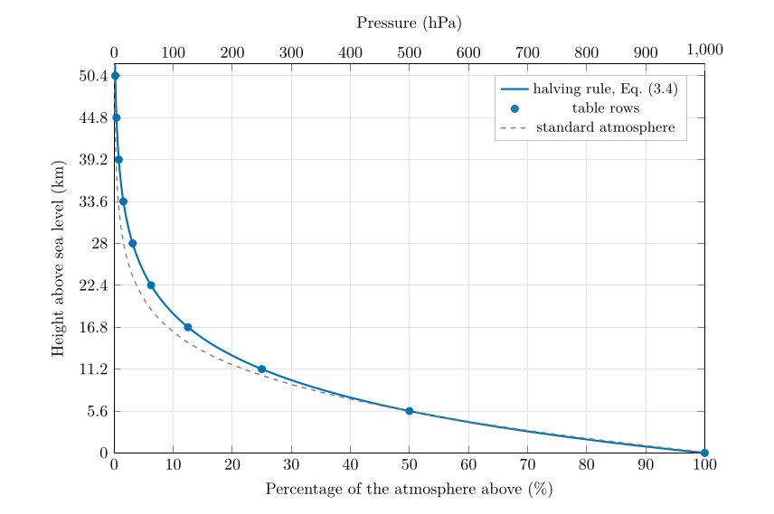
Figure 3.2. Questions 1 and 2. The percentage of the atmosphere above each height (bottom axis) and the pressure (top axis) by the halving rule. Each step of 5.6 km up halves both. The dashed line is the U.S. Standard Atmosphere: the rule is very close near the ground and overestimates the pressure higher up (§ 3.6).
Answer to Question 1
100, 50, 25, 12.5, 6.25, 3.13, 1.56, 0.78, 0.39 and 0.20 % of the atmosphere is above sea level, 5.6, 11.2, 16.8, 22.4, 28.0, 33.6, 39.2, 44.8 and 50.4 km (Table 3.1), drawn as the curve of Figure 3.2.
Check. Half the air is below 5.6 km and three-quarters below 11.2 km, which agrees with the common statement that about half the mass of the atmosphere lies within the lowest 5 km or so. The curve never reaches zero: each step halves what is left, so there is always a little air above you. That is why there is no sharp “top” to the atmosphere.
A question that comes up
Why do I get a curve and not a straight line?\ Because equal steps up remove equal fractions, not equal amounts. The first 5.6 km removes 50 percentage points; the next removes 25; the next 12.5. Plotted against height, that is a curve that is steep near the ground and flattens higher up, the shape of every exponential decay. Plotted with a logarithmic pressure axis it would become a straight line (Figure 8.1).
3.5 Question 2: adding a pressure axis¶
The question
As the density of the atmosphere drops by 50 % when we go up 5.6 km, the pressure also drops by 50 %. At sea level the pressure is approximately 1000 hPa. Add the pressure for each of your heights as another column of your table and add a second \(x\)-axis to your graph to show atmospheric pressure.
Why pressure follows the percentage. Pressure is the weight of the air above (§ 3.1). If only half the atmosphere is above you, only half its weight presses down, so the pressure is half the sea-level pressure. In general
where
| \(p(z)\) | pressure at height \(z\) (hPa) | calculated |
| \(p_0\) | sea-level pressure (hPa) | 1000, rounded |
| \(f(z)\) | fraction of the atmosphere above, Eq. (3.4) | Question 1 |
With \(p_0=1000\) hPa the pressure in hectopascals is simply ten times the percentage.
The second axis. Because the pressure is exactly ten times the percentage, the pressure axis is the percentage axis relabelled: 0 to 1000 hPa along the top where 0 to 100 % runs along the bottom (Figure 3.2). The same curve then answers both questions.
Answer to Question 2
Pressure \(=10\times\) the percentage above: 1000, 500, 250, 125, 62.5, 31.3, 15.6, 7.8, 3.9 and 2.0 hPa at sea level, 5.6, 11.2, …, 50.4 km (Table 3.1). The second axis runs from 0 to 1000 hPa above the 0 to 100 % axis.
3.6 How good is the halving rule?¶
The last column of Table 3.1 compares the rule with the U.S. Standard Atmosphere, an idealised but realistic average atmosphere (NOAA et al. 1976). Up to about 6 km the two agree within 1 %. Higher up the rule gives too much pressure: 250 against 219 hPa at 11.2 km, 125 against 91 hPa at 16.8 km.
The reason is the temperature in the scale height, \(H=R_dT/g\), Eq. (3.3). The rule’s \(H=8.08\) km corresponds to a constant temperature of
a reasonable average for the lowest few kilometres. But above about 8 km the air is far colder (around 217 K, \(-56\) \(^{\circ}\mathrm{C}\), Chapter 5), its scale height is only about 6.3 km, and the pressure falls faster than the rule assumes. Cold air is denser at the same pressure, Eq. (3.1), so a given weight of it is packed into a thinner layer. Question 12 lets you measure this from the soundings (§ 8.1).
A question that comes up
Question 2 says the density halves every 5.6 km. Is that the same as the pressure halving?\ Only if the temperature does not change with height, because by Eq. (3.1) \(\rho=p/(R_dT)\). In the real troposphere the temperature falls as you go up, so the density falls a little more slowly than the pressure (the cooler air is relatively denser). In the standard atmosphere the density at 5.6 km is 56 % of its sea-level value while the pressure is 49 %. The rule is about pressure, the weight of the air above; it is the right one to use for Questions 2 to 4.
A question that comes up
Where does the atmosphere end?\ It thins out gradually and has no top. By convention the edge of space is put at 100 km, the Kármán line, where by the rule only about \(2^{-100/5.6}\approx0.0004\,\%\) of the atmosphere remains (the real figure is smaller still). Very few gas molecules remain beyond it.
3.7 Try it yourself: Practice Set 3¶
Practice Set 3: pressure and height
Use the halving rule unless told otherwise; \(g=9.81\) m s\(^{-2}\), \(R_d=287\) J kg\(^{-1}\) K\(^{-1}\).
-
What percentage of the atmosphere is above you at 16.8 km, and what is the pressure there?
-
What fraction of the whole atmosphere lies between 5.6 and 11.2 km?
-
At what height does the pressure fall to 100 hPa?
-
What mass of air lies above each square metre at sea level, where the pressure is 1013 hPa?
-
What would the halving height be in an atmosphere at a constant 250 K?
Answers to Practice Set 3
-
50 % is above 5.6 km and 25 % above 11.2 km, so \(50-25=25\,\%\) lies between them.
-
100 hPa is a tenth of 1000 hPa: \(2^{-z/5.6}=0.1\), so \(z/5.6=\log_2 10=3.32\) and \(z=18.6\) km, Eq. (3.4).
-
\(101\,300/9.81=10\,330\) kg: about 10.3 tonnes.
-
\(H=287\times250/9.81=7.31\) km, so \(z_{1/2}=0.693\times7.31=5.07\) km. Colder air halves its pressure over a shorter distance.
3.8 The halving rule in Python¶
These functions compute the equations of this chapter, and the book’s tests check them against its answers.
def fraction_above(z_km, halving_km=HALVING_KM):
"""Fraction of the atmosphere above height z_km: half for every halving_km."""
return 2 ** (-z_km / halving_km)
def pressure_halving(z_km, p0_hpa=1000.0):
"""Pressure (hPa) at z_km by the halving rule."""
return p0_hpa * fraction_above(z_km)
100 * fraction_above(11.2) returns 25.0 and pressure_halving(5.6) returns 500.0.
References¶
NOAA, NASA and US Air Force (1976) U.S. Standard atmosphere, 1976. U.S. Government Printing Office, Washington, DC.
Wallace, J.M. and Hobbs, P.V. (2006) Atmospheric science: An introductory survey, 2nd ed. Elsevier Academic Press, Amsterdam.
4. Reading the graph, and oxygen at altitude¶
This chapter answers Questions 3 and 4.
4.1 Reading values from a graph, and checking them¶
A graph turns a rule into a tool: once the curve of Figure 3.2 is drawn, any height can be looked up without calculation. To read a value:
-
Find the height on the vertical axis (convert metres to kilometres first: 8848 m \(=8.848\) km).
-
Draw a horizontal line across to the curve.
-
From the meeting point, draw a vertical line down to the percentage axis and up to the pressure axis, and read both.
A hand-drawn curve and a ruler give two significant figures at best. The exact value comes from Eq. (3.4): divide the height by 5.6 km to get the number of halvings \(x\), then \(f=2^{-x}\). On a calculator, \(2^{-x}\) is entered as 2 ^ (-x) or computed as \(e^{-0.6931\,x}\).
Worked example: the summit of Everest, 8848 m
Number of halvings: \(x=8.848/5.6=1.580\). Fraction above: \(f=2^{-1.580}=0.3345\), so 33.4 % of the atmosphere is above the summit. Pressure: \(1000\times0.3345=\) 334 hPa, Eq. (3.6). Graph check: 8.8 km lies between 5.6 km (50 %) and 11.2 km (25 %), closer to 11.2, so the answer must be between 25 and 50 %, nearer 25. It is.
4.2 Question 3: five heights¶
The question
Using the graph you just drew, estimate the percentage of atmosphere above and the total pressure for the following heights: Portstewart strand (0 m); the top of Mount Everest (8848 m); the cruising altitude of a jumbo jet (12 km); Machu Picchu, Peru (2430 m); the world-record hot-air balloon (21 027 m).
| Place | Height (km) | Halvings \(x\) | % above | Pressure (hPa) | Std. atm. (hPa) |
|---|---|---|---|---|---|
| Portstewart strand | 0 | 0 | 100 | 1000 | 1013 |
| Machu Picchu | 2.430 | 0.434 | 74.0 | 740 | 753 |
| Everest summit | 8.848 | 1.580 | 33.4 | 334 | 314 |
| Jumbo jet | 12.000 | 2.143 | 22.6 | 226 | 193 |
| Record balloon | 21.027 | 3.755 | 7.4 | 74 | 47 |
Table 4.1. Question 3 by the halving rule, Eqs. (3.4) and (3.6). The last column gives the U.S. Standard Atmosphere for comparison (NOAA et al. 1976).

Figure 4.1. Question 3 read from the graph. For each place, go across from its height to the curve and down to the percentage axis; the pressure is ten times the percentage.
Answer to Question 3
Portstewart strand: 100 %, 1000 hPa. Everest: 33.4 %, 334 hPa. Jumbo jet at 12 km: 22.6 %, 226 hPa. Machu Picchu: 74.0 %, 740 hPa. Record balloon: 7.4 %, 74 hPa. (Values read from a hand-drawn graph within about \(\pm2\) percentage points are fine.)
Check against measurement. On the summit of Everest the barometric pressure has been measured: 253 mmHg, which is 337 hPa (West et al. 1983), within 1 % of the rule’s 334 hPa. The standard atmosphere gives only 314 hPa there, because it describes a cooler, mid-latitude column; Everest stands at 28\(^{\circ}\)N, where the warm air column holds the pressure up at height (West 1996). For the jet and the balloon, high in the cold upper air, the rule overestimates the pressure, for the reason given in § 3.6.
4.3 What “21 % oxygen” means¶
Dry air is a mixture of gases: by volume about 78 % nitrogen, 21 % oxygen and 0.9 % argon, with carbon dioxide and other trace gases making up the rest; precise values are 78.08, 20.95 and 0.93 % (Wallace and Hobbs 2006, ch. 1). “By volume” means by number of molecules: of every hundred molecules of dry air, about 21 are oxygen. Up to about 80 km the air is stirred so thoroughly that these proportions stay the same at every height. So the air on Everest is still 21 % oxygen. What changes is how many molecules there are in each breath.
4.4 Partial pressure¶
In a mixture of gases each gas contributes to the total pressure in proportion to its share of the molecules. The contribution of one gas is its partial pressure, and the partial pressures add up to the total (Dalton’s law). For oxygen
where
| \(p_{\mathrm{O_2}}\) | partial pressure of oxygen (hPa) | calculated |
| \(x_{\mathrm{O_2}}\) | fraction of the molecules that are oxygen | 0.21, rounded |
| \(p\) | total air pressure (hPa) | from Question 3 |
At sea level \(p_{\mathrm{O_2}}=0.21\times1000=210\) hPa and \(p_{\mathrm{N_2}}=0.78\times1000=780\) hPa. The partial pressure of oxygen is what matters to the body: it pushes oxygen from the lungs into the blood. Halve the total pressure and you halve the oxygen partial pressure, even though the air is still 21 % oxygen. The same idea of a partial pressure returns for water vapour in Part III, as the vapour pressure \(e\) (§ 21.2).
4.5 Question 4: oxygen at five heights¶
The question
The partial pressure of each gas drops at the same rate as the total atmospheric pressure. Use your answers to Question 3 to first calculate the partial pressure of oxygen at different elevations. Then use your answer to calculate the percentage of oxygen available compared to the atmosphere at sea level.
Method.
-
Partial pressure: multiply each pressure from Question 3 by 0.21, Eq. (4.1).
-
Percentage: the second part of the question can be read in two ways, and the two readings give different numbers (Table 4.2).
-
(a) Oxygen as a percentage of the sea-level atmosphere: divide the oxygen partial pressure by the sea-level total pressure, 1000 hPa.
-
(b) Oxygen available compared with sea level: divide the oxygen partial pressure by the sea-level oxygen partial pressure, 210 hPa. This says how much oxygen each breath brings compared with a breath at the coast.
-
| Place | Pressure (hPa) | \(p_{\mathrm{O_2}}\) (hPa) | (a) \(p_{\mathrm{O_2}}/1000\) | (b) \(p_{\mathrm{O_2}}/210\) |
|---|---|---|---|---|
| Portstewart strand | 1000 | 210 | 21.0 % | 100 % |
| Machu Picchu | 740 | 155.5 | 15.5 % | 74 % |
| Everest summit | 334 | 70.2 | 7.0 % | 33 % |
| Jumbo jet | 226 | 47.6 | 4.8 % | 23 % |
| Record balloon | 74 | 15.6 | 1.6 % | 7.4 % |
Table 4.2. Question 4. Partial pressure of oxygen, Eq. (4.1), and the two percentages.

Figure 4.2. Question 4: the partial pressure of oxygen at the five places. The air is 21 % oxygen at all of them; what falls is the number of molecules in each breath, in step with the total pressure (Table 4.2).
Answer to Question 4
Partial pressure of oxygen: Portstewart 210 hPa; Machu Picchu 155 hPa; Everest 70 hPa; jumbo jet 48 hPa; record balloon 16 hPa. As a percentage of the sea-level atmosphere: 21, 15.5, 7.0, 4.8 and 1.6 %. Compared with the oxygen available at sea level: 100, 74, 33, 23 and 7 %. On Everest each breath brings only a third of the oxygen it brings at sea level.
Two ways to give the percentage
The second reading answers “how much oxygen is available compared with sea level” and is the more useful for explaining breathlessness. It is simply the percentage of the atmosphere above you from Question 3: since the oxygen fraction does not change with height, the available oxygen falls in exactly the same proportion as the total pressure.
4.6 Why it matters¶
-
Machu Picchu (about three-quarters of sea-level oxygen): most visitors notice breathlessness on climbing stairs; the body adjusts within days by breathing faster and making more red blood cells.
-
Everest (a third): close to the limit of human survival without bottled oxygen. Climbers acclimatise for weeks, and most use supplementary oxygen near the summit (West et al. 1983).
-
A jet at 12 km (under a quarter): a person would lose consciousness within minutes. Airliner cabins are therefore pressurised, to roughly the pressure found at about 2 km, and oxygen masks drop if the pressure is lost.
-
The record balloon at 21 km (7 %): no human could breathe this air; balloonists wear pressure suits or ride in sealed gondolas.
A question that comes up
If the air is still 21 % oxygen at the top of Everest, why is it harder to breathe?\ Because “21 %” is a proportion, not an amount. At the summit each lungful of air contains only a third as many molecules of every gas as at sea level, so it delivers a third as much oxygen. The lungs move oxygen into the blood in proportion to its partial pressure, 70 hPa instead of 210.
4.7 Try it yourself: Practice Set 4¶
Practice Set 4: reading heights and partial pressures
Use the halving rule and an oxygen fraction of 0.21.
-
Ben Nevis is 1345 m high. What are the pressure and the oxygen partial pressure at the summit?
-
Kilimanjaro is 5895 m high. Find the pressure, the oxygen partial pressure, and the oxygen available compared with sea level.
-
On a summit the pressure is 600 hPa. What percentage of the air molecules there are oxygen? What is the oxygen partial pressure? At what height is the summit, by the rule?
-
What is the partial pressure of nitrogen on the summit of Everest?
Answers to Practice Set 4
-
\(x=1.345/5.6=0.240\); \(f=2^{-0.240}=0.847\); pressure 847 hPa; \(p_{\mathrm{O_2}}=0.21\times847=178\) hPa.
-
\(x=5.895/5.6=1.053\); \(f=0.482\); pressure 482 hPa; \(p_{\mathrm{O_2}}=101\) hPa; 48 % of the sea-level oxygen.
-
Still 21 % (the proportion does not change). \(p_{\mathrm{O_2}}=0.21\times600=126\) hPa. Height: \(2^{-z/5.6}=0.6\), so \(z=5.6\times\log_2(1/0.6)=5.6\times0.737=4.1\) km.
-
\(0.78\times334=261\) hPa.
4.8 Oxygen in Python¶
These functions compute the equations of this chapter, and the book’s tests check them against its answers.
def partial_pressure(p_hpa, gas_fraction=0.21):
"""Partial pressure (hPa) of a gas that makes up gas_fraction of the molecules."""
return gas_fraction * p_hpa
partial_pressure(pressure_halving(12)) returns 47.6, the jet’s oxygen partial pressure in hPa.
References¶
NOAA, NASA and US Air Force (1976) U.S. Standard atmosphere, 1976. U.S. Government Printing Office, Washington, DC.
Wallace, J.M. and Hobbs, P.V. (2006) Atmospheric science: An introductory survey, 2nd ed. Elsevier Academic Press, Amsterdam.
West, J.B. (1996) Prediction of barometric pressures at high altitudes with the use of model atmospheres. Journal of Applied Physiology 81, 1850–1854. https://doi.org/10.1152/jappl.1996.81.4.1850
West, J.B., Lahiri, S., Maret, K.H., Peters, R.M. and Pizzo, C.J. (1983) Barometric pressures at extreme altitudes on Mt. Everest: Physiological significance. Journal of Applied Physiology 54, 1188–1194. https://doi.org/10.1152/jappl.1983.54.5.1188
5. Temperature with height: the standard atmosphere¶
This chapter answers Question 5 and introduces the layers of the atmosphere used in Questions 6 to 11.
5.1 Temperature and the lapse rate¶
Temperature measures how fast the molecules of the air are moving: the warmer the air, the faster they move. Unlike pressure, temperature does not fall steadily all the way up. It falls, then rises, then falls and rises again, and those reversals divide the atmosphere into layers (§ 5.4).
The rate at which the temperature falls with height is the lapse rate:
where
| \(\Gamma\) | lapse rate (\(^{\circ}\mathrm{C\,km^{-1}}\), the same as \(\mathrm{K\,km^{-1}}\)) | calculated |
| \(\Delta T\) | change in temperature going up (\(^{\circ}\mathrm{C}\)) | from a table or graph |
| \(\Delta z\) | change in height (km) | from a table or graph |
The minus sign makes the lapse rate positive when the temperature falls with height, which is the usual case in the lowest layer. A negative lapse rate means the temperature rises with height: an inversion (§ 6.3). A lapse rate of zero means the temperature does not change: an isothermal layer.
5.2 The standard atmosphere¶
Real temperature profiles change from day to day and from place to place. For aircraft instruments, engineering and comparison, meteorologists use an agreed average: the standard atmosphere. Near the ground it is defined by (NOAA et al. 1976):
where
| \(T(z)\) | temperature at height \(z\) (\(^{\circ}\mathrm{C}\)) | calculated |
| \(z\) | height above sea level (km) | |
| \(15\) | sea-level temperature (\(^{\circ}\mathrm{C}\)) | 288.15 K |
| \(6.5\) | the standard (“normal”) lapse rate (\(^{\circ}\mathrm{C\,km^{-1}}\)) | agreed value |
At sea level the standard pressure is 1013.25 hPa and the standard temperature 15 \(^{\circ}\mathrm{C}\). The temperature falls by 6.5 \(^{\circ}\mathrm{C}\) for every kilometre up to 11 km, the standard tropopause, where it reaches \(-56.5\) \(^{\circ}\mathrm{C}\), and then stays constant.
5.3 Question 5: the standard atmosphere¶
The question
In the troposphere temperature decreases by 6.5 \(^{\circ}\mathrm{C}\) per km in the lowest 11 km; this is called the average or normal lapse rate. Based on this average lapse rate, work out the temperature of the “standard atmosphere” at 2000, 4000, 6000, 8000 and 10 000 m. You are given 15 \(^{\circ}\mathrm{C}\) at sea level, 8.5 \(^{\circ}\mathrm{C}\) at 1000 m, and \(-56.5\) \(^{\circ}\mathrm{C}\) at 11 000, 14 000 and 16 000 m.
Method. Use Eq. (5.2). For each height up to 11 km, convert to kilometres and subtract \(6.5\times z\) from 15 \(^{\circ}\mathrm{C}\). Above 11 km the temperature stays at \(-56.5\) \(^{\circ}\mathrm{C}\).
| Height (m) | 0 | 1000 | 2000 | 4000 | 6000 | 8000 | 10 000 | 11 000 | 14 000 | 16 000 |
|---|---|---|---|---|---|---|---|---|---|---|
| \(T\) (\(^{\circ}\mathrm{C}\)) | 15 | 8.5 | 2 | \(\boldsymbol{-11}\) | \(\boldsymbol{-24}\) | \(\boldsymbol{-37}\) | \(\boldsymbol{-50}\) | \(-56.5\) | \(-56.5\) | \(-56.5\) |
Table 5.1. The standard atmosphere. Values in bold are the answers to Question 5; the others are given in the question.
Answer to Question 5
At 2000, 4000, 6000, 8000 and 10 000 m the standard temperatures are 2, \(-\)11, \(-\)24, \(-\)37 and \(-\)50 \(^{\circ}\mathrm{C}\). At 11 000 m the temperature reaches \(-56.5\) \(^{\circ}\mathrm{C}\) and stays there to 16 000 m (Table 5.1).
Check. The given values agree with the rule: \(15-6.5\times1=8.5\) \(^{\circ}\mathrm{C}\) at 1000 m and \(15-6.5\times11=-56.5\) \(^{\circ}\mathrm{C}\) at 11 000 m. Each 2 km step lowers the temperature by 13 \(^{\circ}\mathrm{C}\).
5.4 The layers of the atmosphere¶
Figure 5.1 extends the standard atmosphere to 100 km. The turning points of the temperature (the pauses) divide it into four layers.

Figure 5.1. The U.S. Standard Atmosphere from the ground to 100 km (NOAA et al. 1976). Temperature falls through the troposphere, is constant and then rises through the stratosphere, falls again through the mesosphere, and rises in the thermosphere. The shaded bands are the layers; the dashed lines are the pauses between them. ## References
Troposphere (surface to about 11 km).
Temperature falls with height, on average by 6.5 \(^{\circ}\mathrm{C}\) per km. The air is heated mainly from below: sunlight passes largely through it and warms the ground, which then warms the air (Part II, § 17.7). Rising air also cools as it expands (Chapter 8). About three-quarters of the air and nearly all the water vapour are here, and almost all weather happens here.
Stratosphere (about 11 to 50 km).
Temperature is constant at first, then rises with height. The warming comes from ozone, which absorbs the Sun’s ultraviolet radiation (Part II, § 12.4). Warm air sitting on cooler air is very stable, so the stratosphere is calm and layered.
Mesosphere (about 50 to 85 km).
Temperature falls again, to the coldest values in the atmosphere, below \(-85\) \(^{\circ}\mathrm{C}\) at the mesopause.
Thermosphere (above about 90 km).
Temperature rises steeply, as the few molecules there absorb the most energetic solar radiation.
A question that comes up
Is the thermosphere really hot?\ Its molecules move very fast, which is what a high temperature means, and in sunlight the upper thermosphere reaches several hundred degrees. But they are so few that they would hardly heat anything: an unprotected thermometer there would lose more by radiating than it gained from the rare collisions, and would read very cold. Temperature and heat are not the same thing.
A question that comes up
Why does the troposphere get colder going up, when it is closer to the Sun?\ The extra closeness is negligible (a few kilometres in 150 million). What matters is where the heating happens. Sunlight passes mostly through the air and is absorbed by the ground, so the troposphere is heated from below, like a pan of water on a hob, and is warmest at the bottom.
5.5 Try it yourself: Practice Set 5¶
Practice Set 5: lapse rates and the standard atmosphere
-
The temperature falls from 20 \(^{\circ}\mathrm{C}\) at the ground to \(-10\) \(^{\circ}\mathrm{C}\) at 5 km. What is the lapse rate?
-
What is the standard-atmosphere temperature at 3 km? At the summit of Everest (8848 m)?
-
At what height does the standard atmosphere reach 0 \(^{\circ}\mathrm{C}\)?
-
Convert \(-56.5\) \(^{\circ}\mathrm{C}\) to kelvin.
-
Over a layer from 1.2 to 1.6 km the temperature rises from \(-2\) to 0 \(^{\circ}\mathrm{C}\). What is its lapse rate, and what is such a layer called?
Answers to Practice Set 5
-
\(\Gamma=(20-(-10))/5=6\,\ensuremath{^{\circ}\mathrm{C\,km^{-1}}}\), Eq. (5.1).
-
\(15-6.5\times3=-4.5\) \(^{\circ}\mathrm{C}\); \(15-6.5\times8.848=-42.5\) \(^{\circ}\mathrm{C}\), Eq. (5.2).
-
\(15-6.5\,z=0\) gives \(z=15/6.5=2.31\) km.
-
\(-56.5+273.15=216.65\) K.
-
\(\Gamma=(-2-0)/(1.6-1.2)=-5\,\ensuremath{^{\circ}\mathrm{C\,km^{-1}}}\): negative, so the temperature rises with height. It is an inversion.
5.6 The standard atmosphere in Python¶
These functions compute the equations of this chapter, and the book’s tests check them against its answers.
def standard_temperature(z_km):
"""Standard-atmosphere temperature (deg C): 15 - 6.5 z up to 11 km, then constant."""
return 15.0 - 6.5 * min(z_km, 11.0)
standard_temperature(8) returns \(-37.0\) and standard_temperature(14) returns \(-56.5\).
References¶
NOAA, NASA and US Air Force (1976) U.S. Standard atmosphere, 1976. U.S. Government Printing Office, Washington, DC.
6. Two soundings: inversions and the tropopause¶
This chapter answers Questions 6, 7 and 8.
6.1 Measuring the atmosphere in the vertical¶
A radiosonde is a small instrument package carried up by a helium or hydrogen balloon. As it rises at about 5 m s\(^{-1}\) it measures pressure, temperature and humidity and sends them to the ground by radio; tracking its drift gives the wind. The balloon expands as the pressure falls and bursts at around 30 km, which is why the soundings in this chapter stop near that height. Radiosondes are launched at hundreds of stations worldwide, at the same times each day, so that the measurements can be compared and fed into weather forecasts (World Meteorological Organization 2023). The record of one ascent is called a sounding.
6.2 Question 6: plotting the soundings¶
| Hillsborough, Northern Ireland | St John’s, Newfoundland | |||||
|---|---|---|---|---|---|---|
| 1-3(lr)5-7 (hPa) | (m) | () | (hPa) | (m) | () | |
| 1001 | 38 | 11.05 | 1005 | 140 | ||
| 853 | 1330 | 938 | 687 | |||
| 850 | 1358 | 700 | 3006 | |||
| 835 | 1503 | 612 | 4062 | |||
| 735 | 2504 | 500 | 5604 | |||
| 573 | 4405 | 458 | 6263 | |||
| 549 | 4725 | 400 | 7248 | |||
| 500 | 5414 | 307 | 9103 | |||
| 460 | 6025 | 250 | 10 446 | |||
| 400 | 7018 | 212 | 11 482 | |||
| 282 | 9383 | 200 | 11 843 | |||
| 250 | 10 164 | 191 | 12 141 | |||
| 216 | 11 116 | 100 | 16 254 | |||
| 150 | 13 524 | 88.9 | 17 004 | |||
| 120 | 14 969 | 73.6 | 18 190 | |||
| 100 | 16 126 | 50.5 | 20 566 | |||
| 70 | 18 379 | 30 | 23 834 | |||
| 50 | 20 482 | 20 | 26 404 | |||
| 30 | 23 691 | 18.1 | 27 047 | |||
| 20 | 26 218 | 10 | 30 828 | |||
The question
Table 6.1 gives the pressure, height and temperature from a radiosonde measurement taken on 21 March 1990 for Hillsborough (Northern Ireland) and St John’s, Newfoundland (Canada). Plot the temperature values against height for these stations and for the standard atmosphere (Table 5.1) on one graph, using different colours for the different plots.
Method.
-
Axes. Height (km) up the side, from 0 to 31 km; temperature (\(^{\circ}\mathrm{C}\)) along the bottom, from \(-80\) to \(+30\) \(^{\circ}\mathrm{C}\). Height goes on the vertical axis even though it is the “input”: a profile drawn this way looks like the atmosphere it describes, with the ground at the bottom.
-
Convert heights to kilometres (divide the metres by 1000): 1330 m is 1.33 km.
-
Plot each sounding with its own colour and symbol (Table 6.1), and the standard atmosphere from Table 5.1.
-
Join the points of each sounding with straight lines. A sounding is a set of measurements at separate levels; straight lines are the honest way to connect them.
-
Label each line and give the graph a title and a key.

Figure 6.1. Questions 6 to 8: the two soundings of Table 6.1 and the standard atmosphere (Table 5.1), with the inversions in the troposphere circled (Question 7) and the tropopause of each profile marked (Question 8).
Answer to Question 6
The completed graph is Figure 6.1. Both soundings cool with height up to a turning point near 9 to 11 km, above which the temperature stops falling and stays between about \(-50\) and \(-62\) \(^{\circ}\mathrm{C}\) to 30 km. Near the ground Hillsborough is 12.7 \(^{\circ}\mathrm{C}\) warmer than St John’s, but the two profiles cross at about 2 km, and between 3 and 7 km St John’s is the warmer, by about 7 \(^{\circ}\mathrm{C}\): the contrast at the surface is confined to the lowest layer (Question 14, Chapter 9).
6.3 Inversions¶
An inversion is a layer in which the temperature rises with height: the lapse rate, Eq. (5.1), is negative. It is called an inversion because it inverts the normal pattern of the troposphere. Inversions form in three common ways (Ahrens and Henson 2022, ch. 3):
-
Radiation inversions: on clear, calm nights the ground cools by radiating to the sky (Part II, § 17.8), and the air next to it cools most.
-
Subsidence inversions: in an anticyclone, air sinking from above is compressed and warms, forming a warm layer above cooler air near the ground.
-
Frontal inversions: warm air rides up over a wedge of colder air at a front (Part III, Chapter 29).
Inversions matter because they are very stable: they suppress rising air, trap pollution and fog beneath them, and cap the growth of clouds (Chapter 8).
6.4 Question 7: finding the inversions¶
The question
You will see that in some situations the temperature increases with height in the troposphere. Such layers are called inversion layers. Circle these on the graph.
Method. Go up each sounding below its tropopause and look for any step in which the temperature at the higher level is warmer than at the level below. Table 6.2 lists the lapse rate of every layer of both soundings, Eq. (5.1).
@lrrrl@
\ Layer (m) & \(T\) bottom (\(^{\circ}\mathrm{C}\)) & \(T\) top (\(^{\circ}\mathrm{C}\)) & \(\Gamma\) (\(^{\circ}\mathrm{C\,km^{-1}}\)) &\ Layer (m) & \(T\) bottom (\(^{\circ}\mathrm{C}\)) & \(T\) top (\(^{\circ}\mathrm{C}\)) & \(\Gamma\) (\(^{\circ}\mathrm{C\,km^{-1}}\)) &\ \ 38–1330 & 11.05 & \(-1.25\) & 9.52 &\ 1330–1358 & \(-1.25\) & \(-1.25\) & 0.00 & isothermal\ 1358–1503 & \(-1.25\) & \(-1.05\) & \(-1.38\) & inversion\ 1503–2504 & \(-1.05\) & \(-7.45\) & 6.39 &\ 2504–4405 & \(-7.45\) & \(-15.25\) & 4.10 &\ 4405–4725 & \(-15.25\) & \(-18.05\) & 8.75 &\ 4725–5414 & \(-18.05\) & \(-22.45\) & 6.39 &\ 5414–6025 & \(-22.45\) & \(-25.45\) & 4.91 &\ 6025–7018 & \(-25.45\) & \(-32.85\) & 7.45 &\ 7018–9383 & \(-32.85\) & \(-51.05\) & 7.70 &\ 9383–10 164 & \(-51.05\) & \(-49.05\) & \(-2.56\) & inversion\ 10 164–11 116 & \(-49.05\) & \(-44.65\) & \(-4.62\) & inversion\ 11 116–13 524 & \(-44.65\) & \(-49.65\) & 2.08 &\ 13 524–14 969 & \(-49.65\) & \(-53.85\) & 2.91 &\ 14 969–16 126 & \(-53.85\) & \(-56.45\) & 2.25 &\ \ 140–687 & \(-1.65\) & \(-2.05\) & 0.73 &\ 687–3006 & \(-2.05\) & \(-2.85\) & 0.34 &\ 3006–4062 & \(-2.85\) & \(-6.65\) & 3.60 &\ 4062–5604 & \(-6.65\) & \(-15.85\) & 5.97 &\ 5604–6263 & \(-15.85\) & \(-19.85\) & 6.07 &\ 6263–7248 & \(-19.85\) & \(-27.05\) & 7.31 &\ 7248–9103 & \(-27.05\) & \(-41.05\) & 7.55 &\ 9103–10 446 & \(-41.05\) & \(-53.45\) & 9.23 &\ 10 446–11 482 & \(-53.45\) & \(-62.05\) & 8.30 &\ 11 482–11 843 & \(-62.05\) & \(-58.05\) & \(-11.08\) & inversion\ 11 843–12 141 & \(-58.05\) & \(-54.65\) & \(-11.41\) & inversion\ 12 141–16 254 & \(-54.65\) & \(-56.25\) & 0.39 &\
-
Hillsborough: from 1358 m (\(-1.25\) \(^{\circ}\mathrm{C}\)) to 1503 m (\(-1.05\) \(^{\circ}\mathrm{C}\)) the temperature rises by 0.2 \(^{\circ}\mathrm{C}\): a weak inversion, sitting on top of an isothermal step from 1330 to 1358 m. Below it the air cools fast, by 9.5 \(^{\circ}\mathrm{C}\) per km.
-
St John’s: no level in the troposphere is warmer than the one below, but from 140 m to 3006 m the temperature falls by only 1.2 \(^{\circ}\mathrm{C}\) in almost 3 km (0.3 to 0.7 \(^{\circ}\mathrm{C}\) per km). This deep, nearly isothermal layer is very stable and behaves like an inversion.
Answer to Question 7
Hillsborough: an inversion between about 1360 and 1500 m (\(-1.25\) to \(-1.05\) \(^{\circ}\mathrm{C}\)), just above the steep cooling of the lowest 1.3 km. St John’s: no true inversion in the troposphere, but a deep, almost isothermal layer from the ground to about 3 km. Both are circled in Figure 6.1.
A question that comes up
Above the tropopause the temperature rises with height too. Are those inversions?\ Strictly, yes: Hillsborough warms from \(-51\) to \(-45\) \(^{\circ}\mathrm{C}\) between 9.4 and 11.1 km, and St John’s from \(-62\) to \(-55\) \(^{\circ}\mathrm{C}\) between 11.5 and 12.1 km. But they are in the stratosphere, where warming with height is the normal state (Figure 5.1). The question asks only about the troposphere.
6.5 The tropopause¶
Question 8 defines the tropopause as the top of the troposphere, where the temperature ceases to decrease with height. The World Meteorological Organization makes this precise: it is the lowest level at which the lapse rate falls to 2 \(^{\circ}\mathrm{C\,km^{-1}}\) or less, provided the average lapse rate over the 2 km above does not exceed 2 \(^{\circ}\mathrm{C\,km^{-1}}\) (Reichler et al. 2003). The second condition stops a thin inversion in the troposphere, like the one at 1.4 km over Hillsborough, from being mistaken for the tropopause. Above the tropopause the stable stratosphere begins; weather, and the tops of most clouds, stop below it.
6.6 Question 8: marking the tropopause¶
The question
The tropopause is defined as the top boundary of the troposphere where the temperature ceases to decrease with height. Mark this boundary on the graph and note the temperature and the height for the standard atmosphere, Hillsborough and St John’s.
Method. For each profile, follow the temperature up through the troposphere and find the level above which it no longer falls. Check the WMO condition: above that level the temperature must not keep falling by more than 2 \(^{\circ}\mathrm{C}\) per km over the next 2 km.
-
Standard atmosphere: by definition, 11 000 m and \(-56.5\) \(^{\circ}\mathrm{C}\) (Table 5.1).
-
Hillsborough: the temperature falls to \(-51.05\) \(^{\circ}\mathrm{C}\) at 9383 m and then rises to \(-49.05\) \(^{\circ}\mathrm{C}\) at 10 164 m and \(-44.65\) \(^{\circ}\mathrm{C}\) at 11 116 m.
-
St John’s: the temperature falls to \(-62.05\) \(^{\circ}\mathrm{C}\) at 11 482 m and then rises to \(-58.05\) \(^{\circ}\mathrm{C}\) at 11 843 m.
Answer to Question 8
Standard atmosphere: 11 000 m, \(-\)56.5 \(^{\circ}\mathrm{C}\). Hillsborough: 9383 m, \(-\)51.05 \(^{\circ}\mathrm{C}\). St John’s: 11 482 m, \(-\)62.05 \(^{\circ}\mathrm{C}\). Marked in Figure 6.1.
Applied by computer, the definition has to start its search above the lowest few kilometres. St John’s has a layer from 140 m to 3 km whose temperature barely changes, and taken from the ground it would meet both conditions. The function at the end of this chapter starts at 5 km and finds the three heights above.
Check. All three lie between 9 and 12 km, the usual range for the middle latitudes (Hoinka 1998). The higher tropopause (St John’s) is also the colder one: a tropopause that sits higher has had more kilometres of cooling below it. Chapter 7 uses this to explain why the tropical tropopause is both the highest and the coldest of all.
6.7 Try it yourself: Practice Set 6¶
Practice Set 6: reading soundings
Use the soundings of Table 6.1.
-
What is the lapse rate over Hillsborough between 38 m and 1330 m? How does it compare with the standard 6.5 \(^{\circ}\mathrm{C\,km^{-1}}\)?
-
Is the layer over St John’s from 9103 to 10 446 m an inversion? What is its lapse rate?
-
At what pressure is the tropopause over Hillsborough? Over St John’s?
-
A sounding shows \(-40\) \(^{\circ}\mathrm{C}\) at 9 km, \(-55\) \(^{\circ}\mathrm{C}\) at 11 km, \(-54\) \(^{\circ}\mathrm{C}\) at 12 km and \(-53\) \(^{\circ}\mathrm{C}\) at 13 km. Where is the tropopause?
Answers to Practice Set 6
-
\((11.05-(-1.25))/(1.330-0.038)=12.30/1.292=9.5\,\ensuremath{^{\circ}\mathrm{C\,km^{-1}}}\): much steeper than the standard rate, and close to the rate at which rising dry air cools (§ 8.3).
-
No: the temperature falls from \(-41.05\) to \(-53.45\) \(^{\circ}\mathrm{C}\), a lapse rate of \(12.4/1.343=9.2\,\ensuremath{^{\circ}\mathrm{C\,km^{-1}}}\).
-
Hillsborough 282 hPa; St John’s 212 hPa (Table 6.1).
-
At 11 km (\(-55\) \(^{\circ}\mathrm{C}\)): above it the temperature rises, so the lapse rate is negative, below 2 \(^{\circ}\mathrm{C\,km^{-1}}\), over the 2 km above.
6.8 Lapse rates and the tropopause in Python¶
These functions compute the equations of this chapter, and the book’s tests check them against its answers.
def lapse_rate(t_lower, t_upper, z_lower_m, z_upper_m):
"""Lapse rate (deg C per km). Positive: cooler with height. Negative: an inversion."""
return (t_lower - t_upper) / ((z_upper_m - z_lower_m) / 1000.0)
def tropopause(z_m, t_c, limit=2.0, depth_m=2000.0, start_m=5000.0):
"""WMO tropopause: the lowest level above start_m where the lapse rate falls to the limit
or less and the mean lapse rate to every level within depth_m above stays at or below it."""
for i in range(len(z_m) - 1):
if z_m[i] < start_m:
continue
if lapse_rate(t_c[i], t_c[i + 1], z_m[i], z_m[i + 1]) > limit:
continue
above = [j for j in range(i + 1, len(z_m)) if z_m[j] - z_m[i] <= depth_m]
if all(lapse_rate(t_c[i], t_c[j], z_m[i], z_m[j]) <= limit for j in above):
return z_m[i], t_c[i]
return None
tropopause(z, t) returns (9383, \(-51.05\)) for Hillsborough and (11482, \(-62.05\)) for St John’s.
References¶
Ahrens, C.D. and Henson, R. (2022) Meteorology today: An introduction to weather, climate, and the environment, 13th ed. Cengage Learning, Boston, MA.
Hoinka, K.P. (1998) Statistics of the global tropopause pressure. Monthly Weather Review 126, 3303–3325. https://doi.org/10.1175/1520-0493(1998)126\<3303:SOTGTP>2.0.CO;2
Reichler, T., Dameris, M. and Sausen, R. (2003) Determining the tropopause height from gridded data. Geophysical Research Letters 30. https://doi.org/10.1029/2003GL018240
World Meteorological Organization (2023) Guide to instruments and methods of observation, volume I: Measurement of meteorological variables (WMO-No. 8). WMO, Geneva.
7. Lapse rates and the height of the troposphere¶
This chapter answers Questions 9, 10 and 11.
7.1 Average and local lapse rates¶
The lapse rate of Eq. (5.1) can be taken over any layer. Taken between the ground and the tropopause it gives the average lapse rate of the troposphere, one number for the whole layer. Taken between neighbouring levels of a sounding it gives the local lapse rate, which varies a great deal: in the Hillsborough sounding it ranges from \(-1.4\) \(^{\circ}\mathrm{C\,km^{-1}}\) (the inversion at 1.4 km) to \(+9.5\) \(^{\circ}\mathrm{C\,km^{-1}}\) (the lowest 1.3 km), as Table 6.2 shows. The standard 6.5 \(^{\circ}\mathrm{C\,km^{-1}}\) is an average of averages: over many places and many days.
7.2 Question 9: the lapse rate over Hillsborough¶
The question
Based on your graph and the Hillsborough sounding in Table 6.1, calculate the lapse rate for the part of the atmosphere below the tropopause for Hillsborough (have another look at Question 5 to work out how to calculate the lapse rate).
Method. Take the lowest level of the sounding and the tropopause found in Question 8 (§ 6.6), and apply Eq. (5.1).
-
Lowest level: 38 m, 11.05 \(^{\circ}\mathrm{C}\). Tropopause: 9383 m, \(-51.05\) \(^{\circ}\mathrm{C}\).
-
Fall in temperature: \(11.05-(-51.05)=62.10\) \(^{\circ}\mathrm{C}\).
-
Rise in height: \(9383-38=9345\) m \(=9.345\) km.
-
Lapse rate: \(\Gamma=62.10/9.345=6.65\,\ensuremath{^{\circ}\mathrm{C\,km^{-1}}}\).
Answer to Question 9
\(\Gamma=\dfrac{11.05-(-51.05)}{9.383-0.038}=\dfrac{62.10\ \ensuremath{^{\circ}\mathrm{C}}}{9.345\ \mathrm{km}}=\textbf{6.65 }^{\circ}\mathrm{C}\textbf{per km}\), very close to the standard lapse rate of 6.5 \(^{\circ}\mathrm{C}\) per km.
Check. The value lies between the extremes of the local lapse rates in Table 6.2, and the straight line from the surface point to the tropopause point in Figure 6.1 runs close to the dashed standard-atmosphere line. For comparison, the same calculation for St John’s gives \((-1.65-(-62.05))/(11.482-0.140)=5.33\,\ensuremath{^{\circ}\mathrm{C\,km^{-1}}}\): smaller, because its surface layer is so cold.
7.3 Question 10: a tropical profile¶
| Height (m) | 0 | 2000 | 4000 | 6000 | 8000 | 10 000 | 12 000 | 14 000 | 16 000 | 18 000 |
|---|---|---|---|---|---|---|---|---|---|---|
| \(T\) (\(^{\circ}\mathrm{C}\)) | 27.2 | 15.2 | 6.1 | \(-6.7\) | \(-17.9\) | \(-32.6\) | \(-50.5\) | \(-64.5\) | \(-75.6\) | \(-73.3\) |
Table 7.1. Temperature profile for Florida.
The question
Add the temperature curve for Florida (Table 7.1) to your graph. Where does the tropopause occur?
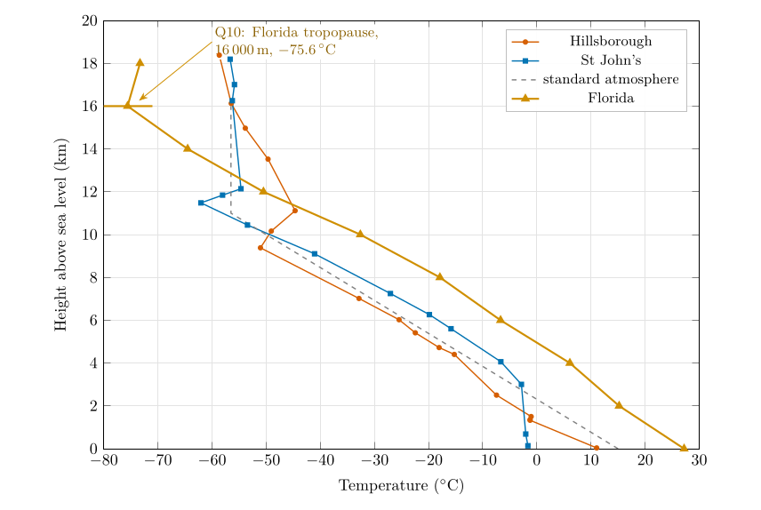
Figure 7.1. Question 10: the Florida profile (Table 7.1) added to the graph, shown here to 20 km. Florida is warmest at the ground and coldest at its tropopause, which is 5 to 7 km higher than the others.
Method. Plot Table 7.1 on the same axes (Figure 7.1) and look for the level above which the temperature stops falling: it falls all the way to \(-75.6\) \(^{\circ}\mathrm{C}\) at 16 000 m and then rises to \(-73.3\) \(^{\circ}\mathrm{C}\) at 18 000 m.
Answer to Question 10
Florida: the tropopause is at about 16 000 m, at \(-\)75.6 \(^{\circ}\mathrm{C}\). Its average lapse rate below the tropopause is \((27.2-(-75.6))/16=6.4\,\ensuremath{^{\circ}\mathrm{C\,km^{-1}}}\).
Check. The data are only every 2 km, so the true tropopause could be anywhere between about 15 and 17 km. That range is typical of the tropics and subtropics (Hoinka 1998).
7.4 Question 11: is the troposphere the same thickness everywhere?¶
The question
Examining all your graphs, do you think the troposphere is the same thickness across the globe? Where do you think it is thickest and why is that?
The evidence. The four tropopauses are at 9.4 km (Hillsborough, 54\(^{\circ}\)N), 11.0 km (the standard atmosphere, which represents the middle latitudes), 11.5 km (St John’s, 48\(^{\circ}\)N) and 16 km (Florida, about 25 to 31\(^{\circ}\)N). The further from the pole, the higher the tropopause (Figure 7.2).
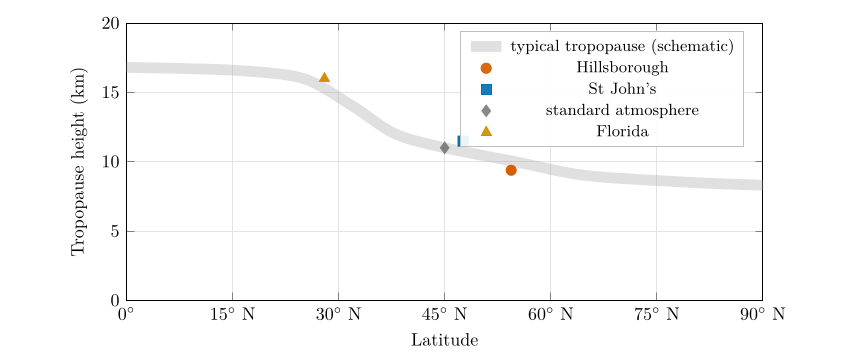
Figure 7.2. Question 11: the tropopause heights of the four profiles against latitude. The grey band shows the typical pattern (Hoinka 1998; Wallace and Hobbs 2006): about 16 to 17 km over the tropics, falling steeply across the subtropics and middle latitudes, to about 8 to 9 km near the poles. Florida is plotted at its middle latitude, 28\(^{\circ}\)N; the standard atmosphere at 45\(^{\circ}\)N. ## References
The reasons. Three effects work together.
-
More heating at the surface. The tropics receive the most solar energy per square metre, because the Sun is high in the sky all year (Part II, Chapter 18). The ground and the air above it are warm.
-
Warm air columns are taller. Warm air is less dense than cold air at the same pressure, Eq. (3.1), so the same weight of air (the same drop in pressure) occupies a greater depth: the scale height \(H=R_dT/g\) is larger, Eq. (3.3). Every pressure level, and with them the whole troposphere, sits higher above a warm surface. The same effect makes pressure surfaces slope from the warm tropics down to the cold poles, which drives the winds of Part III ( Chapter 24).
-
Deep convection. Strong heating makes air rise in towering thunderstorm clouds that carry heat and mix the troposphere up to 15 to 18 km. The tropopause sits where this stirring from below gives way to the stable, radiatively heated stratosphere, so where convection reaches higher, the tropopause is higher.
A taller troposphere also has a colder top: with a similar lapse rate, the temperature keeps falling over more kilometres. That is why Florida, the warmest at the ground (27 \(^{\circ}\mathrm{C}\)), has the coldest tropopause (\(-75.6\) \(^{\circ}\mathrm{C}\)).
Answer to Question 11
No. The troposphere is thickest over the tropics (about 16 to 17 km; 16 km in the Florida profile) and thinnest near the poles (about 8 to 9 km), with middle latitudes in between (9.4 to 11.5 km in the soundings). The tropics receive the most solar heating; warm air is less dense, so a warm air column is taller; and strong convection mixes warm air to great heights before the stable stratosphere begins. The tropopause is also higher in summer than in winter, for the same reasons.
A question that comes up
The coldest air in the troposphere is over the equator? That sounds backwards.\ At the ground the tropics are the warmest places on Earth. But high up, at 16 to 17 km, the tropical tropopause is colder than the tropopause anywhere else, often below \(-75\) \(^{\circ}\mathrm{C}\), because it is so far above the surface. Near the poles the tropopause is low and so less cold: around \(-50\) to \(-60\) \(^{\circ}\mathrm{C}\).
7.5 Try it yourself: Practice Set 7¶
Practice Set 7: lapse rates
-
What is the lapse rate in the lowest 2 km of the Florida profile? Between 10 and 12 km?
-
A tropical sounding has 28 \(^{\circ}\mathrm{C}\) at the ground and an average lapse rate of 6.5 \(^{\circ}\mathrm{C\,km^{-1}}\) up to its tropopause at 16 km. What is the tropopause temperature?
-
A polar sounding has \(-20\) \(^{\circ}\mathrm{C}\) at the ground and the tropopause at 8.5 km with \(-55\) \(^{\circ}\mathrm{C}\). What is its average lapse rate?
-
By how much is the scale height over Florida (mean tropospheric temperature about \(-24\) \(^{\circ}\mathrm{C}\)) larger than over a polar station (about \(-40\) \(^{\circ}\mathrm{C}\))?
Answers to Practice Set 7
-
\((27.2-15.2)/2=6.0\,\ensuremath{^{\circ}\mathrm{C\,km^{-1}}}\); \((-32.6-(-50.5))/2=8.95\,\ensuremath{^{\circ}\mathrm{C\,km^{-1}}}\).
-
\(28-6.5\times16=28-104=-76\) \(^{\circ}\mathrm{C}\).
-
\((-20-(-55))/8.5=35/8.5=4.1\,\ensuremath{^{\circ}\mathrm{C\,km^{-1}}}\).
-
\(H=R_dT/g\): \(287\times249/9.81=7.29\) km against \(287\times233/9.81=6.82\) km, about 0.47 km (7 %) larger. Every pressure level therefore sits about 7 % higher above the ground in the warm column: 500 hPa, for example, at about 5.1 km instead of 4.7 km.
References¶
Hoinka, K.P. (1998) Statistics of the global tropopause pressure. Monthly Weather Review 126, 3303–3325. https://doi.org/10.1175/1520-0493(1998)126\<3303:SOTGTP>2.0.CO;2
8. Pressure aloft, buoyancy and stability¶
This chapter answers Questions 12 and 13.
8.1 Question 12: equal steps, unequal drops¶
The question
In St John’s, how much is the pressure drop between 140 m and 3006 m? How much is the pressure drop between 23 834 m and 26 404 m? Seeing that the difference in altitude is almost the same, why is the difference in pressure so dissimilar?
The two drops. From Table 6.1 (St John’s):
Look at fractions, not amounts. In the lower layer the pressure falls to \(700/1005=0.70\) of its starting value, a fall of 30 %; in the upper layer it falls to \(20/30=0.67\), a fall of 33 %. The fractional drops over these similar depths are almost the same. That is exactly what exponential decay means (§ 3.3): each kilometre removes the same fraction of the air above, so where there is a lot of air (near the ground) the same fraction is a large amount, and where there is little (at 24 km, only 3 % of the atmosphere is above) it is a tiny amount. Plotted on a logarithmic pressure axis, an exponential becomes a straight line (Figure 8.1).
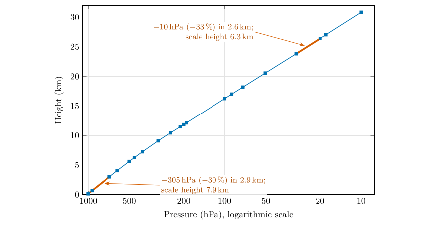
Figure 8.1. Question 12: the St John’s sounding with pressure on a logarithmic axis (decreasing to the right, so that height and falling pressure go the same way). An exponential decay is a straight line here; the slope is steeper (shorter scale height) where the air is colder.
The data even measure the scale height. Rearranging Eq. (3.3) for two levels gives the scale height of the layer between them (Appendix A.2.1):
where
| \(H\) | scale height of the layer (km) | calculated |
| \(z_1,\ z_2\) | heights of the bottom and top of the layer (km) | from the sounding |
| \(p_1,\ p_2\) | pressures at those heights (hPa) | from the sounding |
For the lower layer \(H=2.866/\ln(1005/700)=2.866/0.362=7.9\) km; for the upper layer \(H=2.570/\ln(30/20)=2.570/0.405=6.3\) km. By Eq. (3.3), \(H=R_dT/g\), so these correspond to temperatures of \(gH/R_d=271\) K (\(-2\) \(^{\circ}\mathrm{C}\)) and 218 K (\(-55\) \(^{\circ}\mathrm{C}\)): exactly the temperatures measured in those layers. The upper layer is colder, so its air is denser for its pressure and its pressure falls off over a shorter distance.
Answer to Question 12
Between 140 and 3006 m the pressure drops by 305 hPa; between 23 834 and 26 404 m by only 10 hPa. Pressure decreases exponentially with height: each step up removes about the same fraction of the air above (30 % and 33 % here), not the same amount. Near the ground there is a great deal of air above, compressed by its own weight, so the same fraction is a large drop; at 24 km only about 3 % of the atmosphere remains above, so the drop is tiny.
8.2 “Cold air sinks”? Density depends on pressure too¶
Everyday experience says cold air sinks: cold draughts collect at the floor, frost forms in hollows. That is true when cold and warm air are side by side at the same pressure, because by the gas law, Eq. (3.1), \(\rho=p/(R_dT)\) and lower \(T\) means higher \(\rho\). But in the vertical the pressure changes enormously, and pressure wins. Using the Hillsborough sounding:
The cold air at the tropopause is only a third as dense as the warm air at the ground: it is lighter, not heavier, and it does not “fall through” the air below it.
8.3 What happens to air that moves up or down¶
The full answer needs one more idea. Air that moves vertically changes its pressure, and so its temperature. A parcel of air brought down is squeezed by the rising pressure, and the work done in compressing it warms it; a parcel that rises expands and cools. If no heat is exchanged with its surroundings (the process is adiabatic), dry air warms or cools at a fixed rate, the dry adiabatic lapse rate (Wallace and Hobbs 2006, ch. 3):
where
| \(\Gamma_d\) | dry adiabatic lapse rate (\(^{\circ}\mathrm{C\,km^{-1}}\)) | 9.8 |
| \(g\) | acceleration due to gravity (m s\(^{-2}\)) | 9.81 |
| \(c_p\) | specific heat of dry air at constant pressure (J kg\(^{-1}\) K\(^{-1}\)) | 1004, Table D.1 |
The derivation is in Appendix A.2.2. The same rate decides the height of cloud base in Part III: rising air cools at 9.8 \(^{\circ}\mathrm{C\,km^{-1}}\) until it reaches its dew point (Part III, § 22.8).
A convenient way to compare air at different heights is to ask what temperature each parcel would have if brought down adiabatically to the standard level of 1000 hPa. That temperature is the potential temperature:
where
| \(\theta\) | potential temperature (K) | calculated |
| \(T\) | temperature of the parcel (K) | from the sounding |
| \(p\) | pressure of the parcel (hPa) | from the sounding |
| \(R_d/c_p\) | ratio of the gas constant to the specific heat | \(287/1004=0.286\) |
Potential temperature does not change when air moves up or down adiabatically, so it labels a parcel the way a name does: two parcels with the same \(\theta\) would have the same temperature if brought to the same level.
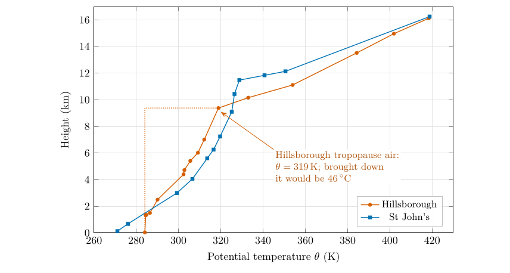
Figure 8.2. Question 13: potential temperature, Eq. (8.3), for both soundings up to 16 km. It increases with height everywhere, which means the atmosphere is stable: any parcel moved down arrives warmer, and so lighter, than the air around it. The increase is slow in the troposphere and fast in the stratosphere.
8.4 Question 13: why the cold air aloft does not sink¶
The question
Thinking of your previous answer, if cold air is supposed to sink, why is the colder air of the upper troposphere not flowing down to the surface?
Follow a parcel down. Take the air at the Hillsborough tropopause, \(-51.05\) \(^{\circ}\mathrm{C}\) (222.1 K) at 282 hPa, and bring it down to the ground. As it sinks it is compressed and warms at 9.8 \(^{\circ}\mathrm{C\,km^{-1}}\). Its potential temperature, Eq. (8.3), tells us where it would end up:
It would arrive at the surface at about 46 \(^{\circ}\mathrm{C}\), some 35 \(^{\circ}\mathrm{C}\) warmer than the 11 \(^{\circ}\mathrm{C}\) air already there. Warmer air at the same pressure is less dense, so the parcel would be buoyant and would be pushed straight back up. The cold air aloft is not “waiting to fall”: it is held up because it would become warm, and light, on the way down.
This is general. Whenever the temperature in the atmosphere falls with height more slowly than 9.8 \(^{\circ}\mathrm{C\,km^{-1}}\) (the standard 6.5 \(^{\circ}\mathrm{C\,km^{-1}}\), or the 6.65 \(^{\circ}\mathrm{C\,km^{-1}}\) of Question 9), the potential temperature increases with height (Figure 8.2) and the air is stably stratified: air displaced downwards comes back up, and air displaced upwards sinks back. The atmosphere is layered like oil on water, but the layers are sorted by potential temperature, not by temperature.
Answer to Question 13
The upper air is cold but it is at very low pressure, so it is much less dense than the air near the ground (0.44 against 1.23 kg m\(^{-3}\) at Hillsborough): “cold air sinks” compares air at the same pressure. If the upper air did sink, it would be compressed and warm up at about 9.8 \(^{\circ}\mathrm{C}\) per km; the tropopause air over Hillsborough would reach the ground at about 46 \(^{\circ}\mathrm{C}\), far warmer and lighter than the surface air, and would rise again. Because the temperature falls with height more slowly than air warms on descent, the atmosphere is stably layered: its potential temperature increases with height.
A question that comes up
Then when does air overturn?\ When the temperature falls with height faster than 9.8 \(^{\circ}\mathrm{C\,km^{-1}}\), a rising parcel stays warmer than its surroundings and keeps rising: the air is unstable, and convection overturns it. This happens over ground heated strongly by the Sun, where the lowest layer can exceed the dry adiabatic rate. In the Hillsborough sounding the lowest 1.3 km cools at 9.5 \(^{\circ}\mathrm{C\,km^{-1}}\), almost exactly the dry adiabatic rate: a well-mixed layer stirred by the wind and by heating from the ground.
8.5 Try it yourself: Practice Set 8¶
Practice Set 8: pressure and stability
Use \(R_d=287\) J kg\(^{-1}\) K\(^{-1}\), \(c_p=1004\) J kg\(^{-1}\) K\(^{-1}\), \(g=9.81\) m s\(^{-2}\) and kelvin \(=\ensuremath{^{\circ}\mathrm{C}}+273.15\).
-
What is the density of air at 500 hPa and \(-20\) \(^{\circ}\mathrm{C}\)?
-
What is the potential temperature of the tropopause air over St John’s (212 hPa, \(-62.05\) \(^{\circ}\mathrm{C}\))?
-
From the Hillsborough sounding, find the scale height of the layer from 1001 hPa (38 m) to 500 hPa (5414 m), and the temperature it corresponds to.
-
Air at 5414 m over Hillsborough (\(-22.45\) \(^{\circ}\mathrm{C}\)) is brought down to the ground (38 m) without exchanging heat. Roughly what temperature would it have?
Answers to Practice Set 8
-
\(\rho=50\,000/(287\times253.15)=0.688\) kg m\(^{-3}\), Eq. (3.1): just over half the surface density.
-
\(\theta=211.1\times(1000/212)^{0.286}=328.8\) K (55.7 \(^{\circ}\mathrm{C}\)), Eq. (8.3).
-
\(H=5.376/\ln(1001/500)=5.376/0.694=7.74\) km, Eq. (8.1); \(T=gH/R_d=9.81\times7744/287=265\) K (\(-8\) \(^{\circ}\mathrm{C}\)), close to the average temperature of that layer.
-
It warms by about \(9.8\times5.4=53\) \(^{\circ}\mathrm{C}\), to about 30 \(^{\circ}\mathrm{C}\), Eq. (8.2): 19 \(^{\circ}\mathrm{C}\) warmer than the surface air, so it would rise again.
8.6 Stability in Python¶
These functions compute the equations of this chapter, and the book’s tests check them against its answers.
def scale_height_from_data(p1_hpa, p2_hpa, dz_km):
"""Scale height (km) from two pressures dz_km apart."""
return dz_km / math.log(p1_hpa / p2_hpa)
def dry_adiabatic_lapse_rate():
"""Dry adiabatic lapse rate (deg C per km): g / c_p."""
return G / C_P * 1000.0
def potential_temperature(t_c, p_hpa):
"""Potential temperature (K) of air at t_c (deg C) and p_hpa."""
return (t_c + 273.15) * (1000.0 / p_hpa) ** (R_D / C_P)
dry_adiabatic_lapse_rate() returns 9.77, which rounds to the 9.8 \(^{\circ}\mathrm{C\,km^{-1}}\) used in this chapter.
References¶
Wallace, J.M. and Hobbs, P.V. (2006) Atmospheric science: An introductory survey, 2nd ed. Elsevier Academic Press, Amsterdam.
9. Two soundings, two climates¶
This chapter answers Question 14.
9.1 The puzzle¶
On 21 March 1990 the air near the ground was at 11.05 \(^{\circ}\mathrm{C}\) over Hillsborough and \(-1.65\) \(^{\circ}\mathrm{C}\) over St John’s (Table 6.1). Hillsborough is at about 54.4\(^{\circ}\)N; St John’s at about 47.6\(^{\circ}\)N, about 750 km closer to the equator. If latitude alone set the temperature, St John’s should be the warmer.
The Sun does not explain it either. The soundings were made at the March equinox, when the noon Sun is overhead at the equator and its angle above the horizon is \(90^\circ\) minus the latitude (Part II, § 18.3). By Eq. (18.3), the noon solar intensity is \(100\,\%\times\sin\beta\):
St John’s received more solar energy per square metre at noon, yet was 12.7 \(^{\circ}\mathrm{C}\) colder. Something other than sunshine controls the temperature of the air near the ground.
9.2 What the soundings show¶
The difference is confined to the lowest layer. The two profiles cross at about 2 km, and from 3 to 7 km St John’s is the warmer by about 7 \(^{\circ}\mathrm{C}\) (Figure 6.1). Over St John’s the lowest 3 km is cold and almost isothermal (Question 7, § 6.4); over Hillsborough the lowest 1.3 km is warm and well mixed, cooling at nearly the dry adiabatic rate (§ 8.3). The warmth of Hillsborough, and the cold of St John’s, come from the surface beneath and the air that has flowed across it.
9.3 The ocean and the winds¶

Figure 9.1. Why Hillsborough is milder than St John’s in late winter (schematic). Westerly winds reach Northern Ireland after crossing ocean warmed by the Gulf Stream and North Atlantic Current; they reach Newfoundland after crossing the cold continent, and its coast is bathed by the cold Labrador Current.
Two things decide the temperature of the air near the ground in winter and early spring: the temperature of the surface it lies over, and the surface it has just crossed (Lutgens et al. 2019, ch. 3).
-
Ocean currents. The Gulf Stream carries warm water from the Gulf of Mexico along the coast of North America and, as the North Atlantic Current, across to north-west Europe. The seas around Ireland are therefore far warmer in winter than their latitude would suggest. Newfoundland is washed instead by the Labrador Current, which brings cold water (and, in late winter and spring, sea ice and icebergs) south from the Arctic.
-
Prevailing winds. In the middle latitudes the winds blow mostly from the west. Air reaching Northern Ireland has crossed thousands of kilometres of relatively warm ocean and arrives mild and moist (maritime air). Air reaching St John’s has usually crossed the North American continent, which in winter is snow-covered and very cold (continental polar air).
-
Water stores heat. Water heats and cools far more slowly than land, so the ocean keeps the air over it mild in winter and cool in summer. Downwind of an ocean, winters are mild; downwind of a continent, they are harsh.
9.4 Question 14: Hillsborough and St John’s¶
The question
Compare the surface temperatures of St John’s and Hillsborough. Although Northern Ireland is located at a higher latitude, why do you think the surface temperature is higher? Do you think that this difference is the same throughout the year?
Answer to Question 14
On 21 March 1990 Hillsborough was at 11.05 \(^{\circ}\mathrm{C}\) and St John’s at \(-\)1.65 \(^{\circ}\mathrm{C}\): 12.7 \(^{\circ}\mathrm{C}\) warmer in Northern Ireland, although it is about 7\(^{\circ}\) of latitude further north and received less sunshine at noon. Northern Ireland lies downwind of the North Atlantic, whose surface is kept warm by the Gulf Stream and North Atlantic Current, so the prevailing westerly winds bring it mild maritime air. St John’s is bathed by the cold Labrador Current and its westerly winds arrive from the frozen North American continent. The difference is not the same all year: it is largest in winter and early spring, when the ocean is much warmer than the land and the continent is coldest, and much smaller in summer, when the continent warms up (summer days in St John’s can be warmer than in Northern Ireland).
Check. The soundings agree with this explanation: the contrast is confined to the lowest kilometre or two, the layer in contact with the surface, while higher up St John’s is the warmer (§ 9.2). A difference caused by latitude or by the Sun would extend through the whole troposphere.
A question that comes up
Is one day’s sounding enough to say anything about climate?\ No. One day shows weather; climate is the average over many years. But this day is typical of the pattern: north-west Europe has some of the mildest winters for its latitude anywhere in the world, and eastern Canada some of the coldest. The sounding illustrates a climatic contrast; the climate itself is established from long records.
9.5 Try it yourself: Practice Set 9¶
Practice Set 9: places and seasons
-
At the June solstice, what are the noon solar intensities at Hillsborough (54.4\(^{\circ}\)N) and St John’s (47.6\(^{\circ}\)N)? Use Part II, Eqs. (18.4) and (18.3).
-
Bergen in Norway (60.4\(^{\circ}\)N) has milder winters than many places 15\(^{\circ}\) further south in eastern North America. Give two reasons.
-
Which of the two soundings has the more stable lowest kilometre, and why does that fit the explanation of Question 14?
Answers to Practice Set 9
-
Zenith angles \(54.4-23.5=30.9^\circ\) and \(47.6-23.5=24.1^\circ\); sun angles \(59.1^\circ\) and \(65.9^\circ\); intensities \(\sin59.1^\circ=86\,\%\) and \(\sin65.9^\circ=91\,\%\) per unit.
-
The North Atlantic Current keeps the Norwegian Sea warm and ice-free in winter, and the prevailing westerly winds bring mild maritime air from the ocean, whereas eastern North America receives air from the cold continent.
-
St John’s: its lowest 3 km is almost isothermal (a lapse rate under 1 \(^{\circ}\mathrm{C\,km^{-1}}\)), so cold air lies trapped beneath warmer air, as over a cold surface. Hillsborough’s lowest 1.3 km cools at 9.5 \(^{\circ}\mathrm{C\,km^{-1}}\), a mixed layer over a relatively warm surface.
References¶
Lutgens, F.K., Tarbuck, E.J. and Herman, R.L. (2019) The atmosphere: An introduction to meteorology, 14th ed. Pearson, New York.
10. Putting Part I together¶
10.1 One chain of ideas¶
The fourteen questions are one argument, each step resting on the one before:
-
Air has weight, and pressure is the weight of the air above. Because air is compressible, the air near the ground is squeezed by everything above it: pressure and density fall exponentially with height, halving roughly every 5.6 km (Questions 1–2, Chapter 3).
-
Reading that curve gives the pressure anywhere; because the proportion of oxygen is the same at all heights, its partial pressure falls in step, to a third on Everest (Questions 3–4, Chapter 4).
-
Temperature falls through the troposphere, on average by 6.5 \(^{\circ}\mathrm{C}\) per km, then stops falling at the tropopause, above which the ozone-heated stratosphere begins (Question 5, Chapter 5).
-
Real soundings follow the standard atmosphere only roughly: they contain inversions, and their tropopauses lie at different heights (Questions 6–8, Chapter 6).
-
The troposphere is thickest and its top coldest over the tropics, where heating and convection are strongest and warm air columns are tallest (Questions 9–11, Chapter 7).
-
Equal height steps remove equal fractions of the air, so pressure falls fast low down and slowly high up; and air that sinks warms by compression, so the cold air aloft is held up: the atmosphere is stably layered (Questions 12–13, Chapter 8).
-
Near the ground, the surface and the winds over it control the temperature: an ocean warmed by the Gulf Stream keeps Northern Ireland mild (Question 14, Chapter 9).
Part II explains where the heat comes from in the first place, and Part III how the differences of pressure set up here make the air move.
10.2 All the answers in one table¶
| Q | Answer | Where |
|---|---|---|
| Q | Answer | Where |
| 1 | , 50, 25, 12.5, 6.25, 3.13, 1.56, 0.78, 0.39, 0.20 % above 0, 5.6, …, 50.4 km | § 3.4 |
| 2 | , 500, 250, 125, 62.5, 31.3, 15.6, 7.8, 3.9, 2.0 hPa; second axis \(=10\times\) the percentage | § 3.5 |
| 3 | Portstewart 100 %, 1000 hPa; Everest 33.4 %, 334 hPa; jet 22.6 %, 226 hPa; Machu Picchu 74.0 %, 740 hPa; balloon 7.4 %, 74 hPa | § 4.2 |
| 4 | \(p_{\mathrm{O_2}}\): 210, 70, 48, 155, 16 hPa; as % of the sea-level atmosphere 21, 7.0, 4.8, 15.5, 1.6 %; compared with sea-level oxygen 100, 33, 23, 74, 7 % | § 4.5 |
| 5 | , \(-11\), \(-24\), \(-37\), \(-50\) \(^{\circ}\mathrm{C}\) at 2, 4, 6, 8, 10 km; \(-56.5\) \(^{\circ}\mathrm{C}\) from 11 to 16 km | § 5.3 |
| 6 | graph of the two soundings and the standard atmosphere (Figure 6.1) | § 6.2 |
| 7 | Hillsborough inversion about 1360–1500 m; St John’s nearly isothermal from the ground to about 3 km | § 6.4 |
| 8 | standard 11 000 m, \(-56.5\) \(^{\circ}\mathrm{C}\); Hillsborough 9383 m, \(-51.05\) \(^{\circ}\mathrm{C}\); St John’s 11 482 m, \(-62.05\) \(^{\circ}\mathrm{C}\) | § 6.6 |
| 9 | \(62.10/9.345=6.65\) \(^{\circ}\mathrm{C}\) per km | § 7.2 |
| 10 | Florida tropopause about 16 000 m, \(-75.6\) \(^{\circ}\mathrm{C}\) | § 7.3 |
| 11 | no: thickest over the tropics (16–17 km), thinnest at the poles (8–9 km); heating, warm tall columns, deep convection | § 7.4 |
| 12 | hPa against 10 hPa; exponential decay: equal fractions (30 and 33 %), not equal amounts | § 8.1 |
| 13 | upper air is far less dense (low pressure); sinking air warms by compression (9.8 \(^{\circ}\mathrm{C}\) per km): tropopause air would arrive at 46 \(^{\circ}\mathrm{C}\); stable layering | § 8.4 |
| 14 | Hillsborough 12.7 \(^{\circ}\mathrm{C}\) warmer: Gulf Stream and North Atlantic Current, westerly maritime air; Labrador Current and continental air at St John’s; largest contrast in winter and spring | § 9.4 |
Table 10.1. Every answer of Part I, with the section where it is worked out.
10.3 Part I on one page¶
The essentials
Halving rule: \(f=2^{-z/5.6}\); % above \(=100f\); pressure \(=1000f\) hPa Eqs. (3.4), (3.6)\ Steps of 5.6 km: 100, 50, 25, 12.5, 6.25 … % Table 3.1\ Oxygen: \(p_{\mathrm{O_2}}=0.21\,p\); available oxygen falls in step with \(p\) Eq. (4.1)\ Lapse rate: \(\Gamma=(T_{\text{lower}}-T_{\text{upper}})/(z_{\text{upper}}-z_{\text{lower}})\); negative means inversion Eq. (5.1)\ Standard atmosphere: \(T=15-6.5\,z\) to 11 km, then \(-56.5\) \(^{\circ}\mathrm{C}\)Eq. (5.2)\ Tropopause: lowest level where the temperature stops falling (and stays within 2 \(^{\circ}\mathrm{C\,km^{-1}}\) for the 2 km above) § 6.5\ Scale height: \(H=R_dT/g\approx8\) km; from data \(H=\Delta z/\ln(p_1/p_2)\) Eqs. (3.3), (8.1)\ Sinking air warms: 9.8 \(^{\circ}\mathrm{C}\) per km; \(\theta=T(1000/p)^{0.286}\) Eqs. (8.2), (8.3)\ Graph habits: height always on the vertical axis; one colour and symbol per profile; straight lines between sounding points, a smooth curve for the halving rule; convert metres to kilometres before plotting.
10.4 Mistakes to avoid¶
-
Halving the height instead of the air. Each 5.6 km step halves the percentage; the heights go up in equal steps.
-
Joining the halving-rule points with straight lines. The rule describes a smooth exponential curve; straight segments make the readings of Question 3 wrong between the points.
-
Mixing metres and kilometres in the lapse rate or in \(z/5.6\).
-
Getting the sign of the lapse rate wrong. Temperature falling with height is a positive lapse rate.
-
Taking any warm step as the tropopause. A thin inversion low in the troposphere (Hillsborough, 1.4 km) is not the tropopause: the temperature falls again above it.
-
Saying the air aloft is “heavier” because it is colder. At the same pressure, yes; at its own low pressure it is far lighter.
10.5 Self-test¶
Self-test: one line each
-
Why does pressure fall faster near the ground than high up?
-
Why does the air on Everest have less oxygen, though it is still 21 % oxygen?
-
What is the difference between an inversion and the tropopause?
-
Why is the tropical tropopause the coldest?
-
Why does the cold air of the upper troposphere not sink?
-
Why is Northern Ireland milder in winter than Newfoundland?
Answers to the self-test
-
Each height step removes the same fraction of the air above, and near the ground there is far more air above (§ 8.1).
-
Each breath holds a third as many molecules; the oxygen partial pressure is a third of that at sea level (§ 4.5).
-
An inversion is any layer where the temperature rises with height; the tropopause is the top of the troposphere, above which the temperature stops falling for good (§ 6.5).
-
It is the highest, so the temperature falls over the most kilometres before it stops (§ 7.4).
-
It is far less dense than the air below, and if it sank it would warm by compression and become lighter still (§ 8.4).
-
Westerly winds off an ocean warmed by the Gulf Stream, against a cold current and a frozen continent upwind of Newfoundland (§ 9.4).
11. Part II at a glance¶
11.1 What this part covers¶
This part has three goals: the laws of radiation, black bodies and radiant energy, and the determination of solar intensity. The five questions build on each other, so it pays to work through them in order. They also build on Part I: the same atmosphere whose layers you plotted there (Chapter 5) is now heated by the Sun and cooled by its own radiation.
The laws of radiation.
Every object gives off radiation, and its temperature decides both what kind (the wavelength of its peak, Wien’s law, Question 1) and how much (the total, the Stefan–Boltzmann law, Question 2).
Black bodies and planets.
You plot the spectra of three planets, read their temperatures from the peaks (Questions 3a and 3b), calculate the temperature each planet should have from its distance to the Sun and its reflectivity (Question 3c), match the spectra to the planets (Question 3d) and explain why the real temperatures differ (Question 3e).
The Earth’s energy balance and solar intensity.
You calculate the temperature the Earth would have without an atmosphere, which measures the greenhouse effect (Question 4), and then show why the angle of the Sun makes the tropics warm, the poles cold and the seasons change (Question 5).
| Question | What it asks | Chapter | Equations | Texts |
|---|---|---|---|---|
| 1 | the Sun’s temperature from its peak wavelength | 13 | (13.1) | ch. 2 |
| 2a–2e | emission of the Sun and the Earth; why \(T\) and \(E\) ratios differ | 14 | (14.1), (14.2) | ch. 2 |
| 3 (graph), 3a–3b | plot three spectra; peaks and temperatures | 15 | (13.2) | ch. 2 |
| 3c–3e | planetary temperatures and why they differ | 16 | (16.2), (16.1) | ch. 2 |
| 4a–4g | albedo, energy balance, greenhouse effect | 17 | (17.1)–(17.3) | ch. 2 |
| 5a–5c | sun angle, beam spreading, seasons | 18 | (18.2)–(18.3) | ch. 2–3 |
Table 11.1. Where each question is answered, which equations it needs, and where to read more (Ahrens and Henson 2022; Lutgens et al. 2019).
Chapter 12 builds the physics that every question uses; Chapter 19 gathers all the answers in one table. The formulas, derivations, recomputed data, symbols and constants for this part are in Appendix B.
11.2 Conventions for this part¶
The conventions of the whole book are in § 1.3. Three more apply here.
-
Temperatures in the radiation laws are always in kelvin. The worked answers in this part convert with \(T_{\ensuremath{^{\circ}\mathrm{C}}}=T_{\mathrm{K}}-273.16\); the exact offset is 273.15 (Tiesinga et al. 2021). The difference of 0.01 K never changes an answer at the precision used here.
-
Constants. Every answer uses the rounded values Wien’s constant \(C=2898\) \(\mu\mathrm{m\,K}\) and the Stefan–Boltzmann constant \(\sigma=5.67\times10^{-8}\) \(\mathrm{W\,m^{-2}}\) K\(^{-4}\). Precise values and sources are listed in Table B.3.
-
Units are written as powers: \(\mathrm{W\,m^{-2}}\) means watts per square metre. Wavelengths are in micrometres, \(1\,\ensuremath{\mu\mathrm{m}}=10^{-6}\) m.
References¶
Ahrens, C.D. and Henson, R. (2022) Meteorology today: An introduction to weather, climate, and the environment, 13th ed. Cengage Learning, Boston, MA.
Lutgens, F.K., Tarbuck, E.J. and Herman, R.L. (2019) The atmosphere: An introduction to meteorology, 14th ed. Pearson, New York.
Tiesinga, E., Mohr, P.J., Newell, D.B. and Taylor, B.N. (2021) CODATA recommended values of the fundamental physical constants: 2018. Reviews of Modern Physics 93, 025010. https://doi.org/10.1103/RevModPhys.93.025010
12. What radiation is¶
This chapter builds the ideas that every question of this part uses. It answers no question directly; Chapters 13 to 18 refer back to it.
12.1 Energy that needs no material to travel¶
Energy moves from place to place in three ways. Conduction passes it from molecule to molecule through contact (a spoon warming in hot tea). Convection carries it in a moving fluid (warm air rising from a radiator). Radiation needs no material at all: it is energy travelling as an electromagnetic wave, a ripple of electric and magnetic fields (Lutgens et al. 2019, ch. 2). Between the Sun and the Earth there are 150 million kilometres of almost empty space, so radiation is the only way the Sun’s energy can reach us.
Two properties of radiation matter here:
-
It carries energy. The body that emits it loses energy; the body that absorbs it gains energy and warms.
-
It comes in many wavelengths. Radio waves, microwaves, infrared, visible light, ultraviolet and X-rays are all the same kind of thing. They differ only in wavelength.
A question that comes up
Is this the same as radioactivity?\ No. In meteorology “radiation” always means electromagnetic radiation: sunlight, the infrared glow of the ground, and so on. Radioactivity is the decay of unstable atomic nuclei, an entirely different process. Only the word is shared.
12.2 Wavelength, frequency and speed¶
A wave is a repeating pattern of crests and troughs. The wavelength \(\lambda\) (the Greek letter lambda) is the distance from one crest to the next (Figure 12.1). The frequency \(f\) is the number of crests that pass a point each second. Shake one end of a rope slowly and the crests are far apart; shake it quickly and they bunch up.
All electromagnetic waves travel through space at the same speed, the speed of light \(c\). In one second a source sends out \(f\) crests, each \(\lambda\) apart, and together they cover the distance the wave travels in one second:
where
| \(c\) | speed of light (m s\(^{-1}\)) | \(3.00\times10^{8}\), Table B.3 |
| \(f\) | frequency: crests per second (s\(^{-1}\), or hertz, Hz) | calculated |
| \(\lambda\) | wavelength (m) | given or calculated |
Because \(c\) is fixed, frequency and wavelength are tied together: a short wavelength means a high frequency, and a long wavelength a low one.

Figure 12.1. Wavelength and frequency. Both waves move at the speed of light, so the one whose source oscillates faster (blue) has its crests closer together, Eq. (12.1). Not to scale: the crests of the Earth’s infrared are about 10 \(\mu\mathrm{m}\) apart, a seventh of the width of a hair.
Worked example: the frequencies of sunlight and of the Earth’s glow
Rearranging Eq. (12.1), \(f=c/\lambda\). For the Sun’s peak wavelength of 0.5 \(\mu\mathrm{m}\) \(=0.5\times10^{-6}\) m:
For the Earth’s peak near 10 \(\mu\mathrm{m}\) \(=10\times10^{-6}\) m:
Sunlight oscillates twenty times faster than the Earth’s infrared, because its wavelength is twenty times shorter.
12.3 Photons: radiation comes in packets¶
Radiation is emitted and absorbed in separate packets of energy called photons, much as rain arrives as separate drops. The energy of one photon depends only on its frequency (Planck 1901):
where
| \(\varepsilon\) | energy of one photon (J) | calculated |
| \(h\) | Planck’s constant (J s) | \(6.626\times10^{-34}\), Table B.3 |
| \(f,\ c,\ \lambda\) | as in Eq. (12.1) |
where the second form follows from substituting \(f=c/\lambda\) from Eq. (12.1). So the shorter the wavelength, the more energy each photon carries:
A photon of sunlight carries twenty times the energy of a photon of the Earth’s infrared. This is why ultraviolet light, with even shorter wavelengths, can break chemical bonds and burn skin, while infrared only warms.
12.4 The electromagnetic spectrum¶
Table 12.1 and Figure 12.2 arrange the kinds of radiation by wavelength. Two ranges matter for the atmosphere. The Sun emits mostly between about 0.2 and 4 \(\mu\mathrm{m}\) (ultraviolet, visible and near infrared): this is called shortwave radiation. The Earth and its atmosphere emit mostly between about 4 and 100 \(\mu\mathrm{m}\) (thermal infrared): this is longwave radiation. Most of the Sun’s ultraviolet never reaches the ground: ozone absorbs it, and that absorption is what warms the stratosphere in the temperature profiles of Part I ( § 5.4).
| Type | Wavelength | Energy per photon | Example source |
|---|---|---|---|
| Radio | metres to kilometres | smallest | transmitters |
| Microwave | 1 mm to 1 m | very small | ovens; radar |
| Infrared | 0.75 to 1000 \(\mu\mathrm{m}\) | small | the Earth, people, warm objects (peak near 10 \(\mu\mathrm{m}\)) |
| Visible | 0.4 to 0.75 \(\mu\mathrm{m}\) | moderate | the Sun (peak near 0.5 \(\mu\mathrm{m}\)) |
| Ultraviolet | 0.01 to 0.4 \(\mu\mathrm{m}\) | large | the Sun; mostly absorbed by ozone |
| X-ray, gamma | shorter still | largest | medical X-rays; radioactive decay |
Table 12.1. The electromagnetic spectrum. All of these are photons; they differ only in wavelength and so in energy per photon, Eq. (12.2).

Figure 12.2. The part of the spectrum that matters for the atmosphere. Solar (shortwave) and terrestrial (longwave) radiation meet near 4 \(\mu\mathrm{m}\).
12.5 Why everything above absolute zero radiates¶
The first law of radiation says that all objects continually radiate energy. Why?
Absolute zero (\(0\) K, or \(-273.15\) \(^{\circ}\mathrm{C}\)) is the lowest possible temperature, at which the particles of a substance have the least possible motion. The kelvin scale starts there; that is why the radiation laws need temperatures in kelvin (§ 11.2).
All matter (rock, soil, sea, ice, cloud, air, people) is made of atoms that contain negative electrons and positive nuclei. Above absolute zero these particles are always vibrating and colliding, so their electric charges are always being jostled. Moving charges send out electromagnetic waves, just as a radio transmitter drives electrons up and down an aerial. So
Cold things radiate too, only less. An ice cube at \(-10\) \(^{\circ}\mathrm{C}\) gives off about 270 \(\mathrm{W\,m^{-2}}\), and your skin about 500 \(\mathrm{W\,m^{-2}}\) (you will be able to check both with Eq. (14.1) in Chapter 14). A thermal camera sees people in the dark for exactly this reason. Ordinary objects look dark only because almost all their emission is infrared, which our eyes cannot see.
12.6 Black bodies¶
Definition
A black body is an ideal object that absorbs all the radiation falling on it, at every wavelength, and reflects none. At any given temperature it also emits the most radiation that any object at that temperature can emit, at every wavelength.
The last law, good absorbers are good emitters, is Kirchhoff’s law: at each wavelength, the fraction of incoming radiation a surface absorbs equals the fraction of black-body radiation it emits. That fraction is the emissivity, \(\epsilon\), between 0 and 1; a black body has \(\epsilon=1\) at all wavelengths (Wallace and Hobbs 2006, ch. 4).
No real object is a perfect black body, but many come close at some wavelengths. Snow is white (a poor absorber) in visible light but almost black in the thermal infrared, where its emissivity is close to 1; most natural surfaces, water and thick cloud behave nearly as black bodies in the infrared. The Sun is close to a black body over the whole spectrum. This is why the black-body laws work so well here.
12.7 The Planck curve¶
How much energy does a black body emit at each wavelength? Imagine sorting all the radiation leaving a hot plate into wavelength “bins” and plotting how much energy lands in each bin. The result is a spectrum, and for a black body its shape was found by Planck (1901):
where
| \(B_\lambda\) | spectral radiance: power per unit area, per unit solid angle, per unit wavelength (W m\(^{-2}\) sr\(^{-1}\) m\(^{-1}\)) | calculated |
| \(h,\ c\) | as in Eqs. (12.1) and (12.2) | Table B.3 |
| \(k_B\) | Boltzmann’s constant (J K\(^{-1}\)) | \(1.381\times10^{-23}\), Table B.3 |
| \(\lambda\) | wavelength (m) | the horizontal axis |
| \(T\) | absolute temperature of the body (K) | e.g. 5796 K for the Sun (Question 1) |
You will not need to calculate with Eq. (12.3). What matters is the shape it draws (Figure 12.3) and the two laws that come out of it.
-
The curve rises steeply, peaks, then tails off slowly. At short wavelengths each photon is expensive in energy, Eq. (12.2), and only the most energetic particles can make it, so emission falls off a cliff. At long wavelengths photons are cheap but each carries little, so the curve tails off gradually.
-
The position of the peak says what kind of radiation the body mainly emits. Hotter bodies peak at shorter wavelengths. This is Wien’s law (Chapter 13).
-
The area under the curve is the total radiation emitted. Hotter bodies have far larger areas. This is the Stefan–Boltzmann law (Chapter 14).
A geographer’s analogy is the storm hydrograph. Its peak tells you when discharge was greatest; the area under it tells you the total volume of water. The Planck curve is read in the same way, with energy in place of water and wavelength in place of time.

Figure 12.3. Black-body spectra of the Sun and the Earth from Eq. (12.3), each divided by its own peak value so that both can be seen on one graph. The two curves hardly overlap: the Sun’s radiation is shortwave and the Earth’s longwave. On a common scale the Earth curve would be invisible, because per square metre the Sun emits about 166 000 times more energy (Chapter 14).
Four laws of radiation, and where each is used
-
All objects continually radiate energy over a range of wavelengths (§ 12.5; the spread is the Planck curve, Eq. (12.3)).
-
Hotter objects radiate more total energy per unit area: the Stefan–Boltzmann law, Eq. (14.1), used in Questions 2 and 4.
-
Hotter objects radiate more at short wavelengths: Wien’s displacement law, Eq. (13.1), used in Questions 1 and 3.
-
Good absorbers are good emitters; the perfect one is a black body (§ 12.6), the assumption behind Questions 3 and 4.
12.8 Questions that come up¶
A question that comes up
If the air radiates too, why do we not feel it?\ We do. On a clear night the ground cools quickly because it radiates to a cold sky; under cloud it stays warmer because the cloud radiates back to it. That downward infrared from cloud and air is part of the greenhouse effect of Chapter 17.
A question that comes up
When does an object start to glow visibly?\ When enough of its Planck curve reaches into the visible. For a black body this begins at roughly 800 K, with a dull red glow, as in an electric hob ring. At the Sun’s temperature the peak is in the middle of the visible.
12.9 Try it yourself: Practice Set 12¶
Practice Set 12: waves and photons
Use \(c=3.00\times10^{8}\) m s\(^{-1}\) and \(h=6.626\times10^{-34}\) J s.
-
What is the frequency of light with a wavelength of 0.5 \(\mu\mathrm{m}\)?
-
What is the energy of one photon of wavelength 10 \(\mu\mathrm{m}\)?
-
A microwave oven works at a wavelength of 12.2 cm. What is its frequency?
-
How many times more energy does a 0.3 \(\mu\mathrm{m}\) ultraviolet photon carry than a 3 \(\mu\mathrm{m}\) infrared photon?
-
Name the part of the spectrum, and say whether it is shortwave or longwave, for radiation of 0.3, 0.55, 2 and 15 \(\mu\mathrm{m}\).
Answers to Practice Set 12
-
\(f=c/\lambda=3.00\times10^{8}/0.5\times10^{-6}=6.0\times10^{14}\) Hz, Eq. (12.1).
-
\(\varepsilon=hc/\lambda=(6.626\times10^{-34})(3.00\times10^{8})/(10\times10^{-6})=1.99\times10^{-20}\) J, Eq. (12.2).
-
\(f=3.00\times10^{8}/0.122=2.46\times10^{9}\) Hz (2.46 GHz).
-
The energy is inversely proportional to the wavelength, so the ratio is \(3/0.3=10\) times.
-
0.3 \(\mu\mathrm{m}\): ultraviolet, shortwave. 0.55 \(\mu\mathrm{m}\): visible (green), shortwave. 2 \(\mu\mathrm{m}\): near infrared, shortwave (still part of the solar spectrum). 15 \(\mu\mathrm{m}\): thermal infrared, longwave.
References¶
Lutgens, F.K., Tarbuck, E.J. and Herman, R.L. (2019) The atmosphere: An introduction to meteorology, 14th ed. Pearson, New York.
Planck, M. (1901) Ueber das Gesetz der Energieverteilung im Normalspectrum. Annalen der Physik 309, 553–563. https://doi.org/10.1002/andp.19013090310
Wallace, J.M. and Hobbs, P.V. (2006) Atmospheric science: An introductory survey, 2nd ed. Elsevier Academic Press, Amsterdam.
13. Wien's law and the temperature of the Sun¶
This chapter answers Question 1.
13.1 Hotter bodies peak at shorter wavelengths¶
Heat a piece of iron in a forge. At first it gives off only invisible infrared; then it glows dull red, then orange, then yellow-white. As it gets hotter, the colour of its glow moves towards shorter wavelengths. Figure 13.1 shows the same thing with Planck curves, Eq. (12.3): as the temperature rises, every curve gets taller, and its peak slides to the left.
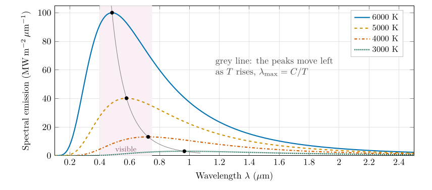
Figure 13.1. Planck curves, Eq. (12.3), for four temperatures, drawn as the power emitted per square metre per micrometre of wavelength. The dots mark the peaks and the grey line joins them: the hotter the body, the shorter the wavelength of its peak (Wien’s law, Eq. (13.1)) and the larger the area under its curve (the Stefan–Boltzmann law, Eq. (14.1)).
13.2 Wien’s displacement law¶
The wavelength of the peak is inversely proportional to the temperature:
where
| \(\lambda_{\max}\) | wavelength of peak emission (\(\mu\mathrm{m}\)) | read from a spectrum, or calculated |
| \(C\) | Wien’s constant (\(\mu\mathrm{m\,K}\)) | 2898, rounded |
| \(T\) | absolute temperature of the body (K) | calculated, or given |
“Inversely proportional” means that when one doubles the other halves: a body twice as hot peaks at half the wavelength. The constant \(C\) is not arbitrary. It follows from finding the peak of the Planck curve, which is done step by step in Appendix B.2.1; the result is \(C=hc/(4.965\,k_B)=2897.8\) \(\mu\mathrm{m\,K}\).
To find a temperature from a peak wavelength, multiply both sides of Eq. (13.1) by \(T\) and divide both sides by \(\lambda_{\max}\):
where
| \(T,\ C,\ \lambda_{\max}\) | as in Eq. (13.1) |
The units work out: \(\mu\mathrm{m\,K}\) divided by \(\mu\mathrm{m}\) leaves K. This is why \(\lambda_{\max}\) must be in micrometres when \(C=2898\) \(\mu\mathrm{m\,K}\).
13.3 Question 1: the temperature of the Sun¶
The question
If the wavelength emitted more than any other by the Sun is 0.5 \(\mu\mathrm{m}\), what is the black-body temperature of the Sun in Celsius? Note the conversion from kelvin to Celsius is \(\ensuremath{^{\circ}\mathrm{C}}=\mathrm{K}-273.16\).
What the question asks, in plain words. We know where the Sun’s spectrum peaks (0.5 \(\mu\mathrm{m}\), in the blue-green part of the visible). Assuming the Sun is a black body, Wien’s law tells us what temperature produces a peak there.
Method.
-
Write down the rearranged law, Eq. (13.2): \(T=C/\lambda_{\max}\).
-
Substitute \(C=2898\) \(\mu\mathrm{m\,K}\) and \(\lambda_{\max}=0.5\) \(\mu\mathrm{m}\):
- Convert to Celsius with the offset the question gives:
Answer to Question 1
\(T_{\text{Sun}}=2898/0.5=\textbf{5796 K}\), which is \(5796-273.16=\textbf{5522.8 }^{\circ}\mathrm{C}\textbf{}\) (about 5500 \(^{\circ}\mathrm{C}\)).
Check. Measurements give the Sun an effective temperature of 5772 K (Prša et al. 2016), within half a percent of our 5796 K: the small difference comes from rounding the peak to 0.5 \(\mu\mathrm{m}\) (the exact value for 5772 K is 0.502 \(\mu\mathrm{m}\)). The order of magnitude is also sensible: a body of a few thousand kelvin glows white-hot, and the Sun’s peak lies in the visible, which is the light our eyes evolved to use.
The 5796 K found here is used again in Question 2a (§ 14.3) and Question 2c (§ 14.5).
A question that comes up
Why does the answer say 5522.8 \(^{\circ}\mathrm{C}\) and not 5522.85 \(^{\circ}\mathrm{C}\)?\ The question subtracts 273.16; the exact offset between the kelvin and Celsius scales is 273.15 (Tiesinga et al. 2021). Either way the answer rounds to 5523 \(^{\circ}\mathrm{C}\), and at the precision of a peak read as “0.5 \(\mu\mathrm{m}\)” the last digits mean nothing. Quote about 5500 \(^{\circ}\mathrm{C}\) when you describe it in words.
A question that comes up
If the Sun peaks in blue-green light, why does it look white, or yellow?\ Because its spectrum is broad (Figure 12.3): it emits strongly at all visible wavelengths, and the mixture looks white. Near the horizon, the long path through the air scatters blue light out of the beam, so the Sun looks yellow or red. The position of the peak also depends on how the spectrum is drawn (per unit wavelength, as here, or per unit frequency), so “the colour of the peak” is not the colour we see.
13.4 Wien’s law in practice¶
-
Satellites. A satellite cannot put a thermometer on the ground. It measures radiation in chosen wavelength bands and converts it to temperature with the radiation laws. Wien’s law tells the designer which band suits which target: about 10–12 \(\mu\mathrm{m}\) for the land, sea and cloud tops (near 300 K and below), and about 4 \(\mu\mathrm{m}\) for fires, which are far hotter.
-
Stars. Astronomers read the temperature of a star from its colour: red stars are cool (around 3000 K) and blue-white stars hot (10 000 K or more).
-
Shortwave and longwave. Because the Sun is about twenty times hotter than the Earth, Wien’s law puts its peak at a wavelength about twenty times shorter. This single fact separates solar from terrestrial radiation (Figure 12.3) and makes the greenhouse effect possible (Chapter 17).
13.5 Try it yourself: Practice Set 13¶
Practice Set 13: Wien’s law
Use \(C=2898\) \(\mu\mathrm{m\,K}\) and \(\ensuremath{^{\circ}\mathrm{C}}=\mathrm{K}-273.16\).
-
The star Sirius has a surface temperature of about 9940 K. At what wavelength does it emit most, and in which part of the spectrum is that?
-
Human skin is at about 33 \(^{\circ}\mathrm{C}\). At what wavelength does it emit most?
-
A star’s spectrum peaks at 1.0 \(\mu\mathrm{m}\). What is its temperature in kelvin and in Celsius?
-
A forest fire burns at about 1000 K. Where is its peak? Why do satellites look for fires near 4 \(\mu\mathrm{m}\) rather than at 10 \(\mu\mathrm{m}\)?
-
An ice cube at \(-10\) \(^{\circ}\mathrm{C}\) emits radiation. At what wavelength does it emit most?
Answers to Practice Set 13
-
\(\lambda_{\max}=2898/9940=0.29\) \(\mu\mathrm{m}\): ultraviolet, Eq. (13.1). Sirius looks blue-white.
-
\(T=33+273.16=306.16\) K, so \(\lambda_{\max}=2898/306.16=9.47\) \(\mu\mathrm{m}\), in the thermal infrared. Thermal cameras are built to see near this wavelength.
-
\(T=2898/1.0=2898\) K \(=2624.8\) \(^{\circ}\mathrm{C}\), Eq. (13.2). A cool, red star.
-
\(\lambda_{\max}=2898/1000=2.9\) \(\mu\mathrm{m}\). Near 4 \(\mu\mathrm{m}\) a fire emits far more than the cool ground around it (whose peak is near 10 \(\mu\mathrm{m}\)), so fires stand out clearly; at 10 \(\mu\mathrm{m}\) the contrast is much smaller.
-
\(T=263.16\) K, so \(\lambda_{\max}=2898/263.16=11.0\) \(\mu\mathrm{m}\). Cold objects emit at longer wavelengths than warm ones.
13.6 Wien’s law in Python¶
These functions compute the equations of this chapter, and the book’s tests check them against its answers.
def wien_temperature(peak_um):
"""Black-body temperature (K) from the wavelength of peak emission (micrometres)."""
return WIEN_C / peak_um
wien_temperature(0.5) returns 5796.0.
References¶
Prša, A., Harmanec, P., Torres, G., Mamajek, E. and others (2016) Nominal values for selected solar and planetary quantities: IAU 2015 Resolution B3. The Astronomical Journal 152, 41. https://doi.org/10.3847/0004-6256/152/2/41
Tiesinga, E., Mohr, P.J., Newell, D.B. and Taylor, B.N. (2021) CODATA recommended values of the fundamental physical constants: 2018. Reviews of Modern Physics 93, 025010. https://doi.org/10.1103/RevModPhys.93.025010
14. The Stefan–Boltzmann law: how much the Sun and the Earth emit¶
This chapter answers Questions 2a to 2e.
14.1 The total emission of a black body¶
Wien’s law (Chapter 13) told us where a spectrum peaks. The Stefan–Boltzmann law tells us how much a body emits in total, adding up every wavelength: it is the area under the Planck curve:
where
| \(E\) | total radiation emitted per square metre of surface, the “intensity of radiation” (\(\mathrm{W\,m^{-2}}\)) | calculated |
| \(\sigma\) | Stefan–Boltzmann constant (\(\mathrm{W\,m^{-2}}\) K\(^{-4}\)) | \(5.67\times10^{-8}\), rounded |
| \(T\) | absolute temperature of the surface (K) | from Question 1, or given |
The law is derived from the Planck curve in Appendix B.2.2: integrating Eq. (12.3) over all wavelengths gives exactly \(T^{4}\) times a combination of constants, and that combination is \(\sigma\).
It applies to a black body. A real surface emits a fraction \(\epsilon\) (its emissivity, § 12.6) of this: \(E=\epsilon\sigma T^{4}\). For the Sun, and for most natural surfaces in the infrared, \(\epsilon\) is close to 1, so Eq. (14.1) is a good approximation.
14.2 What a fourth power means¶
\(T^{4}\) means \(T\times T\times T\times T\). A fourth power grows very fast:
| Temperature multiplied by | 1.1 | 1.5 | 2 | 3 | 10 | 20 |
| Emission multiplied by | 1.46 | 5.06 | 16 | 81 | 10 000 | 160 000 |
A body only 10 % hotter emits 46 % more; a body twice as hot emits sixteen times as much. Figure 14.1 shows this on a scale wide enough to hold both the Earth and the Sun.
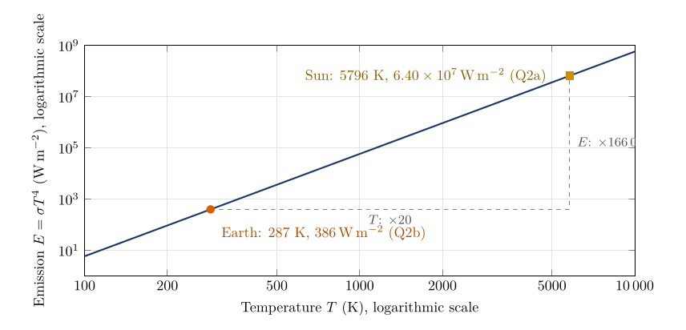
Figure 14.1. The Stefan–Boltzmann law, Eq. (14.1), on logarithmic axes, where a power law becomes a straight line of slope 4. Going from the Earth to the Sun the temperature rises twenty-fold (Question 2c) but the emission rises 166 000-fold (Question 2d).
14.3 Question 2a: the emission of the Sun¶
The question
Using this equation, calculate how much radiation is emitted at the surface of the Sun.
Method. Use Eq. (14.1) with the Sun’s temperature from Question 1, \(T=5796\) K (§ 13.3). Raise to the fourth power by squaring twice; this avoids slips on a calculator:
-
\(T^{2}=5796^{2}=3.3594\times10^{7}\).
-
\(T^{4}=(3.3594\times10^{7})^{2}=1.1285\times10^{15}\).
-
\(E_{\text{Sun}}=\sigma T^{4}=(5.67\times10^{-8})(1.1285\times10^{15})=6.399\times10^{7}\) \(\mathrm{W\,m^{-2}}\).
When multiplying powers of ten, add the exponents: \(10^{-8}\times10^{15}=10^{7}\).
Answer to Question 2a
\(E_{\text{Sun}}=5.67\times10^{-8}\times5796^{4}=\textbf{6.40}\boldsymbol{\times}\textbf{10}^{\textbf{7}}\) \(\mathrm{W\,m^{-2}}\): about 64 million watts from every square metre of the Sun’s surface.
Check. With the measured effective temperature of 5772 K (Prša et al. 2016) the same calculation gives \(6.29\times10^{7}\) \(\mathrm{W\,m^{-2}}\), within 2 %. Spread over the whole Sun, this emission is the Sun’s total power output, and diluted over the distance to the Earth it becomes the solar constant of Question 3c (see the worked example in § 14.8).
14.4 Question 2b: the emission of the Earth¶
The question
If the Earth has a black-body temperature of 14 \(^{\circ}\mathrm{C}\), what is its intensity of radiation?
Method.
-
Convert to kelvin: \(T=14+273.16=287.16\) K. The radiation laws need kelvin (§ 11.2).
-
\(T^{2}=287.16^{2}=82\,460.9\), and \(T^{4}=82\,460.9^{2}=6.7998\times10^{9}\).
-
\(E_{\text{Earth}}=(5.67\times10^{-8})(6.7998\times10^{9})=385.5\) \(\mathrm{W\,m^{-2}}\).
Answer to Question 2b
\(E_{\text{Earth}}=5.67\times10^{-8}\times287.16^{4}=\textbf{385.5\,}{\mathrm{W\,m^{-2}}}\textbf{}\).
Check. Observed energy budgets put the emission of the Earth’s surface at about 396 \(\mathrm{W\,m^{-2}}\) (Trenberth et al. 2009), close to our value (the real surface is a little warmer in places and the fourth power weights warm places heavily). Notice that 385.5 \(\mathrm{W\,m^{-2}}\) is more than the Earth receives from the Sun on average (about 240 \(\mathrm{W\,m^{-2}}\) absorbed, Question 4c). That surplus is supplied by the atmosphere radiating back down to the surface: the greenhouse effect of Chapter 17.
Where the bracket goes
Only the temperature is raised to the fourth power: \(E=5.67\times10^{-8}\times(287.16)^{4}\), not \((5.67\times10^{-8}\times287.16)^{4}\), which would give about \(7\times10^{-20}\).
14.5 Question 2c: how many times hotter is the Sun?¶
The question
How many times warmer is the Sun than the Earth (solar temperature in kelvin / Earth temperature in kelvin)?
Method. Divide the two temperatures, both in kelvin, from Questions 1 and 2b:
Answer to Question 2c
The Sun is \(5796/287.16\approx\textbf{20 times}\) hotter than the Earth (20.18), measured on the kelvin scale.
Kelvin, not Celsius
Ratios of temperatures only make sense on the kelvin scale, which starts at absolute zero. On the Celsius scale they are meaningless: 20 \(^{\circ}\mathrm{C}\) is not “twice as hot” as 10 \(^{\circ}\mathrm{C}\) (in kelvin it is \(293.16/283.16=1.035\) times as hot), and nothing is “\(-2\) times” as hot as \(-10\) \(^{\circ}\mathrm{C}\).
14.6 Question 2d: how many times more does the Sun emit?¶
The question
How many more times is the Sun’s radiation more intense than the Earth’s?
Method. Divide the emissions from Questions 2a and 2b:
Answer to Question 2d
Each square metre of the Sun emits about 166 000 times as much radiation as a square metre of the Earth.
14.7 Question 2e: why the two ratios are so different¶
The question
How do you explain the difference between your answer to Question 2c and 2d?
The idea. Write Eq. (14.1) for both bodies and divide. The constant \(\sigma\) cancels, and only the ratio of temperatures remains, raised to the fourth power:
where
| \(E_{\text{Sun}},\ E_{\text{Earth}}\) | emissions per square metre (\(\mathrm{W\,m^{-2}}\)) | Questions 2a and 2b |
| \(T_{\text{Sun}},\ T_{\text{Earth}}\) | temperatures (K) | 5796 and 287.16 |
So the emission ratio is the temperature ratio of Question 2c raised to the fourth power: \(20.18^{4}=20.18\times20.18\times20.18\times20.18=1.660\times10^{5}\), exactly the answer to Question 2d.
Answer to Question 2e
Emission depends on the fourth power of temperature, Eq. (14.1). The Sun is about 20 times hotter, so it emits about \(20^{4}=160\,000\) times more per square metre (precisely \(20.18^{4}=166\,000\)). A modest difference in temperature becomes an enormous difference in emission.
A power law, not an exponential
If \(T\) doubles, \(E\) becomes 16 times greater, but that does not make the change exponential. In an exponential relationship, such as \(E\propto e^{kT}\), the temperature sits in the exponent and every equal step in \(T\) multiplies \(E\) by the same factor. In the Stefan–Boltzmann law the exponent is fixed at 4 and the temperature is the base: this is a power law, \(E\propto T^{4}\). An exponential eventually outgrows any power law, and on the log–log axes of Figure 14.1 a power law is a straight line while an exponential is not. Say “\(E\) is proportional to the fourth power of \(T\)”.
14.8 From the Sun’s surface to the Earth¶
Questions 2a and 3c are linked. The Sun’s surface emits \(\sigma T^{4}\) per square metre; this energy spreads out over ever larger spheres as it travels, so by the time it reaches the Earth it has been diluted to the solar constant \(S\).
Worked example: the solar constant from the Sun’s temperature
The Sun’s radius is \(R_\odot=6.957\times10^{8}\) m and the Earth–Sun distance is \(d=1.496\times10^{11}\) m (Prša et al. 2016). The Sun’s total power is its emission per square metre times its surface area \(4\pi R_\odot^{2}\):
At the Earth this power is spread over a sphere of radius \(d\), so each square metre facing the Sun receives
With the measured 5772 K the same steps give 1361 \(\mathrm{W\,m^{-2}}\), the value measured by satellites (Kopp and Lean 2011). The 1368 \(\mathrm{W\,m^{-2}}\) used in this part is an older measurement of the same quantity. The dilution with distance, \(S\propto1/d^{2}\), is the inverse-square law used for the planets in Chapter 16, Eq. (16.1).
14.9 Questions that come up¶
A question that comes up
Question 2b calls 14 \(^{\circ}\mathrm{C}\) the Earth’s “black-body temperature”. Later the Earth’s black-body temperature is 255 K (\(-18\) \(^{\circ}\mathrm{C}\)). Which is right?\ They are two different things. 14 \(^{\circ}\mathrm{C}\) (287 K) is the average temperature of the Earth’s surface, and Question 2b treats that surface as a black body. 255 K is the temperature the planet as a whole must have to send back to space as much energy as it absorbs (Questions 3c and 4d). The 33 K difference between them is the greenhouse effect (§ 17.7).
A question that comes up
My calculator shows 6.3988E7. How do I write that?\ “E7” means “times ten to the power 7”: \(6.3988\times10^{7}\) \(\mathrm{W\,m^{-2}}\), or 63 988 000 \(\mathrm{W\,m^{-2}}\). Round to three or four significant figures, \(6.40\times10^{7}\) \(\mathrm{W\,m^{-2}}\).
14.10 Try it yourself: Practice Set 14¶
Practice Set 14: the Stefan–Boltzmann law
Use \(\sigma=5.67\times10^{-8}\) \(\mathrm{W\,m^{-2}}\) K\(^{-4}\) and \(\ensuremath{^{\circ}\mathrm{C}}=\mathrm{K}-273.16\).
-
How much does a black body at 0 \(^{\circ}\mathrm{C}\) emit?
-
By what percentage does the emission rise if the temperature rises by 10 %?
-
What temperature must a black body have to emit 1000 \(\mathrm{W\,m^{-2}}\)? Give kelvin and Celsius.
-
The Earth’s surface warms from 287.16 K to 288.16 K. By how much does its emission increase?
-
Using the worked example in § 14.8, explain in one sentence why the Earth receives only about 1368 \(\mathrm{W\,m^{-2}}\) from a Sun that emits \(6.4\times10^{7}\) \(\mathrm{W\,m^{-2}}\).
Answers to Practice Set 14
-
\(E=5.67\times10^{-8}\times273.16^{4}=315.7\) \(\mathrm{W\,m^{-2}}\), Eq. (14.1).
-
\(1.1^{4}=1.464\), so the emission rises by 46 %, Eq. (14.2).
-
\(T=(E/\sigma)^{1/4}=(1000/5.67\times10^{-8})^{1/4}=364.4\) K \(=91.3\) \(^{\circ}\mathrm{C}\). The rearrangement is Eq. (17.3).
-
\(5.67\times10^{-8}\times(288.16^{4}-287.16^{4})=5.40\) \(\mathrm{W\,m^{-2}}\). One kelvin of warming adds about 5.4 \(\mathrm{W\,m^{-2}}\) of emission; this is why warming is a strong brake on further warming.
-
The Sun’s energy spreads over a sphere whose area grows with the square of the distance; at 150 million kilometres each square metre receives only \((R_\odot/d)^{2}=1/46\,000\) of what each square metre of the Sun emits.
14.11 Emission in Python¶
These functions compute the equations of this chapter, and the book’s tests check them against its answers.
def wien_peak(t_k):
"""Wavelength of peak emission (micrometres) at temperature t_k."""
return WIEN_C / t_k
def emission(t_k):
"""Stefan-Boltzmann law: emission (W per square metre) at temperature t_k."""
return SIGMA * t_k ** 4
emission(5796) returns about \(6.399\times10^{7}\) and emission(287.16) about 385.5.
References¶
Kopp, G. and Lean, J.L. (2011) A new, lower value of total solar irradiance: Evidence and climate significance. Geophysical Research Letters 38, L01706. https://doi.org/10.1029/2010GL045777
Prša, A., Harmanec, P., Torres, G., Mamajek, E. and others (2016) Nominal values for selected solar and planetary quantities: IAU 2015 Resolution B3. The Astronomical Journal 152, 41. https://doi.org/10.3847/0004-6256/152/2/41
Trenberth, K.E., Fasullo, J.T. and Kiehl, J. (2009) Earth’s global energy budget. Bulletin of the American Meteorological Society 90, 311–324. https://doi.org/10.1175/2008BAMS2634.1
15. Plotting three planetary spectra¶
This chapter answers the graph of Question 3 and Questions 3a and 3b.
15.1 The data¶
Table 15.1 gives the spectral emission of three black bodies, labelled Data A, B and C, at fourteen wavelengths from 4 to 30 \(\mu\mathrm{m}\)Ėach column is one planet; the task is to plot all three on one graph, read off where each peaks, and use Wien’s law to find each planet’s temperature.
| Wavelength (\(\mu\mathrm{m}\)) | Data A | Data B | Data C |
|---|---|---|---|
| 4 | 26.199 | 1.3338 | 0.11992 |
| 6 | 386.28 | 53.056 | 10.648 |
| 8 | 970.65 | 218.86 | 65.619 |
| 10 | 1313.3 | 398.14 | 151.8 |
| 12 | 1363.5 | 502.49 | 224.7 |
| 14 | 1248.6 | 527.86 | 264.23 |
| 16 | 1074.3 | 502.41 | 273.39 |
| 18 | 896.25 | 452.58 | 262.51 |
| 20 | 737.1 | 395.22 | 241.03 |
| 22 | 603.1 | 339.25 | 215.38 |
| 24 | 493.45 | 288.62 | 189.36 |
| 26 | 404.91 | 244.61 | 164.92 |
| 28 | 333.76 | 207.16 | 142.9 |
| 30 | 276.58 | 175.67 | 123.56 |
Table 15.1. The data of Question 3. The largest value in each column is in bold. The same table, with the values computed from the Planck curve, is in Appendix B.3.
A note on the units of the data
The columns are headed “Irradiance, W m\(^{-2}\)”. Strictly these are spectral values: emission per square metre per micrometre of wavelength (\(\mathrm{W\,m^{-2}\,\mu m^{-1}}\)), on an arbitrary scale. Recomputing them shows that each column is a Planck curve, Eq. (12.3), multiplied by the same constant (about 316) for all three (Appendix B.3). The units do not affect any answer, because the questions only use where each curve peaks and how the curves compare.
15.2 How to plot the graph¶
-
Axes. Wavelength (\(\mu\mathrm{m}\)) along the bottom, from 0 to 30. Emission up the side, from 0 to at least 1400, since the largest value is 1363.5.
-
Scale. Choose round steps that use most of the paper: for example 2 \(\mu\mathrm{m}\) per major division across and 100 or 200 per division up.
-
Plot each data set with its own symbol (for example crosses for A, circles for B and triangles for C), so that the graph still reads correctly in black and white.
-
Join the points with a smooth curve, not with straight lines. The underlying spectrum is smooth (§ 12.7); straight segments would put the peak exactly on a data point, which hides the fact that the true peak may lie between two points.
-
Label each curve (A, B, C), the axes with quantity and unit, and give the graph a title.
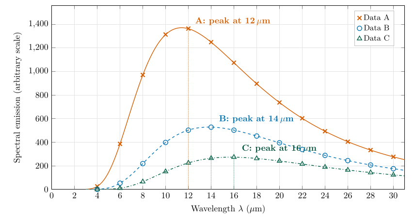
Figure 15.1. The graph of Question 3. Symbols are the values of the table; the smooth lines are the Planck curves that pass through them (254.1, 210.0 and 184.1 K; Appendix B.3). The dotted lines mark the highest data point of each set, which is the answer to Question 3a.
15.3 Question 3a: the wavelength of the peak¶
The question
At what wavelength does the maximum intensity occur for each data set?
Method. Find the largest number in each column of Table 15.1 (in bold), or the highest point of each curve in Figure 15.1, and read its wavelength.
Answer to Question 3a
Data A: \(\lambda_{\max}=\textbf{12 }\mu\mathrm{m}\textbf{}\) (1363.5). Data B: \(\lambda_{\max}=\textbf{14 }\mu\mathrm{m}\textbf{}\) (527.86). Data C: \(\lambda_{\max}=\textbf{16 }\mu\mathrm{m}\textbf{}\) (273.39).
Check. The curve with the highest peak (A) peaks furthest to the left, and the lowest (C) furthest to the right. That is what Wien’s law and the Stefan–Boltzmann law together predict (Figure 13.1): the hottest body is both the brightest and the shortest in wavelength. All three peaks lie in the thermal infrared, as they must for planets far cooler than the Sun.
15.4 Question 3b: the temperatures of the three planets¶
The question
Using Wien’s law, calculate the black-body temperature for the three planets.
Method. Use the rearranged Wien’s law, Eq. (13.2), \(T=C/\lambda_{\max}\), with \(C=2898\) \(\mu\mathrm{m\,K}\) and the peaks from Question 3a:
Answer to Question 3b
\(T_A=\textbf{241.5 K}\) (\(-31.7\) \(^{\circ}\mathrm{C}\)), \(T_B=\textbf{207.0 K}\) (\(-66.2\) \(^{\circ}\mathrm{C}\)), \(T_C=\textbf{181.1 K}\) (\(-92.0\) \(^{\circ}\mathrm{C}\)).
Check. The order is right: A is the warmest and C the coldest, matching the heights of the curves. The values are cold, which is reasonable for planets heated by a distant Sun; Chapter 16 identifies which planet each curve belongs to.
Why these temperatures are a little too low
The data are given only every 2 \(\mu\mathrm{m}\), so the highest data point is not exactly the peak of the curve. Fitting the Planck curve to each column (Appendix B.3) shows that the true peaks are at 11.4, 13.8 and 15.7 \(\mu\mathrm{m}\), and the true temperatures are 254.1, 210.0 and 184.1 K. Reading the nearest point puts every peak slightly too far to the right, and so every temperature slightly too low; the error is largest for A (12 instead of 11.4 \(\mu\mathrm{m}\), so 241.5 instead of 254 K). The answers above are the right answers to the question as set; the true values matter in Chapter 16, where they match the calculated planetary temperatures almost exactly.
A question that comes up
Could I find the peak more accurately from the data?\ Partly. Fitting a parabola through the three highest points of a column and taking its top moves the A peak from 12 to 11.6 \(\mu\mathrm{m}\) (249.7 K), closer to the truth. It does much less for B and C, because a Planck curve is lopsided (steep on the short-wave side, with a long tail) while a parabola is symmetric. The reliable way is to fit the Planck curve itself, as in Appendix B.3, or to take readings closer together near the peak.
15.5 What the graph shows¶
-
The curves never cross. At every wavelength the warmer body emits more. This is a property of all Planck curves: heating a black body raises its emission at every wavelength.
-
The area under each curve is the total emission, which grows as \(T^{4}\), Eq. (14.1). With the true temperatures, A emits \((254.1/184.1)^{4}=3.6\) times as much in total as C.
-
The gap between the curves is largest on the short-wave side. At 10 \(\mu\mathrm{m}\) A emits 8.7 times as much as C; at 30 \(\mu\mathrm{m}\) only 2.2 times. Short wavelengths are the most sensitive to temperature, which is why the peak moves (Wien’s law) and why satellites measuring fires use short infrared bands (§ 13.4).
15.6 Try it yourself: Practice Set 15¶
Practice Set 15: reading spectra
-
If you had readings every 0.2 \(\mu\mathrm{m}\) near the top of curve A, you would find its peak at 11.4 \(\mu\mathrm{m}\). What temperature does that give?
-
Using Table 15.1, how many times more does A emit than C at 10 \(\mu\mathrm{m}\)? At 30 \(\mu\mathrm{m}\)? Why are the two ratios different?
-
A fourth planet’s spectrum peaks near 25 \(\mu\mathrm{m}\). What is its temperature, and which planet of Table 16.1 might it be?
-
Explain in one sentence why two Planck curves for different temperatures can never cross.
Answers to Practice Set 15
-
\(T=2898/11.4=254.2\) K, Eq. (13.2). That is the Earth’s calculated black-body temperature (Question 3c).
-
\(1313.3/151.8=8.7\) at 10 \(\mu\mathrm{m}\); \(276.58/123.56=2.2\) at 30 \(\mu\mathrm{m}\). Emission on the short-wave side of the peak depends far more strongly on temperature than on the long-wave tail, Eq. (12.3).
-
\(T=2898/25=116\) K: Jupiter, whose calculated black-body temperature is 110 K (Question 3c).
-
Raising \(T\) in Eq. (12.3) makes the exponential in the denominator smaller at every wavelength, so the emission rises at every wavelength and the warmer curve lies above the cooler one everywhere.
16. The temperatures of the planets¶
This chapter answers Questions 3c, 3d and 3e.
16.1 A planet in balance¶
A planet is heated by the Sun and cools by radiating to space. If it absorbed more than it emitted it would warm up; warming raises its emission as \(T^{4}\), Eq. (14.1), until the two are equal. A planet that has settled is therefore in radiative balance:
The temperature at which this happens is the planet’s equilibrium or black-body temperature. To calculate it we need three things: how much sunlight arrives (the solar constant \(S\)), how much of it is reflected (the albedo \(a\)), and the geometry of a sphere.
16.2 Sunlight at each planet: the inverse-square law¶
Sunlight spreads out over ever larger spheres as it travels from the Sun (§ 14.8). The area of a sphere grows with the square of its radius, so the energy reaching each square metre falls with the square of the distance:
where
| \(S\) | solar constant at the planet: sunlight per square metre facing the Sun, at the top of the atmosphere (\(\mathrm{W\,m^{-2}}\)) | calculated; listed in the table |
| \(S_{E}\) | solar constant at the Earth (\(\mathrm{W\,m^{-2}}\)) | 1368, an older measurement |
| \(d\) | planet’s distance from the Sun, in astronomical units (AU; Earth–Sun \(=1\)) | listed in the table |
The values in the table follow this law exactly. For Mars, \(d=1.52\) AU, so \(S=1368/1.52^{2}=1368/2.310=592\) \(\mathrm{W\,m^{-2}}\): at one and a half times the distance, Mars receives only 43 % of the Earth’s sunlight. For Mercury, \(1368/0.39^{2}=8994\) \(\mathrm{W\,m^{-2}}\), six and a half times the Earth’s.
16.3 Albedo¶
Definition
The albedo \(a\) of a surface or a planet is the fraction of the sunlight falling on it that is reflected, from 0 (absorbs everything) to 1 (reflects everything). The fraction absorbed is \(1-a\).
Fresh snow and thick cloud reflect most sunlight (albedo up to 0.8–0.9); forests, soils and especially open water reflect little (water below about 0.1 with the Sun high in the sky) (Ahrens and Henson 2022, ch. 2). A planet’s overall albedo, called its Bond albedo, is the average over its whole sunlit side, cloud included: about 0.3 for the Earth (Forster et al. 2021).
16.4 The black-body temperature of a planet¶
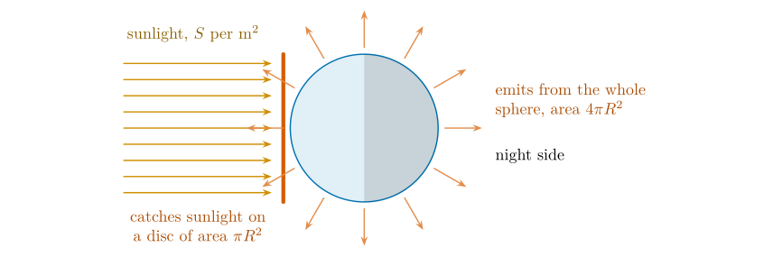
Figure 16.1. Why the solar constant is divided by four. A planet intercepts sunlight over a disc of area \(\pi R^{2}\) (its shadow) but radiates from its whole surface, \(4\pi R^{2}\), day and night side alike. Averaged over the sphere, each square metre receives \(S/4\).
Set the energy absorbed equal to the energy emitted, for a planet of radius \(R\) (Figure 16.1):
Setting them equal and cancelling \(\pi R^{2}\) from both sides, the size of the planet drops out:
and taking the fourth root of both sides gives the formula in the hint to Question 3c:
where
| \(T\) | black-body (equilibrium) temperature of the planet (K) | calculated |
| \(S\) | solar constant at the planet (\(\mathrm{W\,m^{-2}}\)) | in the table; Eq. (16.1) |
| \(a\) | planet’s albedo (0 to 1) | in the table |
| \(\sigma\) | Stefan–Boltzmann constant | \(5.67\times10^{-8}\) \(\mathrm{W\,m^{-2}}\) K\(^{-4}\) |
| \(4\) | ratio of the sphere’s area to the disc’s, Figure 16.1 | geometry |
A fourth root is a square root taken twice; on a calculator use \(x^{0.25}\) or press \(\sqrt{\ }\) twice.
16.5 Question 3c: calculating the temperatures¶
The question
Using the table below, calculate the black-body temperatures \(T\) for the following planets (hint: \(T=[S(1-a)/(4\sigma)]^{1/4}\)).
Worked example: the Earth, step by step
-
Absorbed sunlight per square metre of disc: \(S(1-a)=1368\times(1-0.3)=1368\times0.7=957.6\) \(\mathrm{W\,m^{-2}}\).
-
Divide by \(4\sigma=4\times5.67\times10^{-8}=2.268\times10^{-7}\): \(957.6/2.268\times10^{-7}=4.2222\times10^{9}\) K\(^{4}\).
-
Square root: \(\sqrt{4.2222\times10^{9}}=64\,979\).
-
Square root again: \(\sqrt{64\,979}=254.9\) K.
So \(T_{\text{Earth}}=254.9\) K, or \(254.9-273.16=-18.3\) \(^{\circ}\mathrm{C}\).
The same four steps for every planet give Table 16.1.
| Planet | \(d\) (AU) | \(S\) (\(\mathrm{W\,m^{-2}}\)) | \(a\) | \(S(1-a)\) | \(T\) calc. (K) | actual (K) | difference |
|---|---|---|---|---|---|---|---|
| Mercury | 0.39 | 8994 | 0.06 | 8454.4 | 439.4 | 440 | \(+0.6\) |
| Venus | 0.72 | 2639 | 0.90 | 263.9 | 184.7 | 737 | \(+552.3\) |
| Earth | 1.00 | 1368 | 0.30 | 957.6 | 254.9 | 288 | \(+33.1\) |
| Mars | 1.52 | 592 | 0.25 | 444.0 | 210.3 | 210 | \(-0.3\) |
| Jupiter | 5.18 | 51 | 0.34 | 33.7 | 110.4 | 152 | \(+41.6\) |
Table 16.1. Question 3c completed. The first four columns and the last but one are given; \(S(1-a)\) and \(T\) are calculated with Eq. (16.2); the last column is the actual minus the calculated temperature.
Answer to Question 3c
Mercury 439 K, Venus 185 K, Earth 255 K, Mars 210 K, Jupiter 110 K (to the nearest kelvin; Table 16.1).
Check. The temperatures fall with distance from the Sun, as expected, with one exception: Venus is calculated colder than the Earth although it is closer to the Sun. Question 3e asks why. NASA’s fact sheets, which use slightly different solar constants and albedos, give black-body temperatures of 439.6 K for Mercury, 254.0 K for the Earth, 209.8 K for Mars and 109.9 K for Jupiter (Williams 2024), all within a kelvin or so of ours.
16.6 Question 3d: which spectrum belongs to which planet?¶
The question
Using the temperatures from the table above, link the data sets you plotted previously with the planet.
Method. Compare the temperatures from the spectra (Question 3b, § 15.4) with the calculated temperatures in Table 16.1, and pair each data set with the closest planet.
| From the peak (Q3b) | From the full curve (§ 15.4) | Closest planet (Q3c) | |
|---|---|---|---|
| Data A | 241.5 K | 254.1 K | Earth, 254.9 K |
| Data B | 207.0 K | 210.0 K | Mars, 210.3 K |
| Data C | 181.1 K | 184.1 K | Venus, 184.7 K |
Answer to Question 3d
Data A: Earth. Data B: Mars. Data C: Venus.
Check. No other pairing works: Mercury (439 K) would peak near 6.6 \(\mu\mathrm{m}\) and Jupiter (110 K) near 26 \(\mu\mathrm{m}\), Eq. (13.1), both outside the three peaks we found. Fitted to the full curves, the three data sets match the calculated temperatures to within one kelvin: the spectra of Table 15.1 correspond to exactly these planetary temperatures.
16.7 Question 3e: why the real temperatures differ¶
The question
Using the table you constructed, explain: (i) why Mars is theoretically colder than Earth; (ii) why Venus is theoretically colder than Earth; (iii) what the actual surface temperature of Venus is, how you explain the difference between the theoretical and actual temperature, and which process could be causing this; (iv) of all these planets, Mercury is the only one that has an actual average temperature which is the same as its black-body temperature. Why is that?
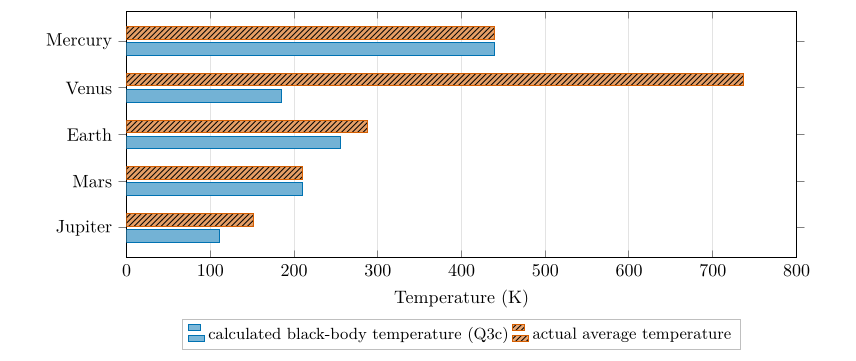
Figure 16.2. Calculated and actual temperatures from Table 16.1. Where the bars match (Mercury, Mars) there is little or no atmosphere; where the actual temperature is higher, an atmosphere traps heat (Venus, Earth) or the planet has an internal source of heat (Jupiter).
(i) Why Mars is theoretically colder than the Earth¶
Mars is 1.52 times as far from the Sun, so by the inverse-square law, Eq. (16.1), it receives only \(1/1.52^{2}=43\,\%\) of the Earth’s sunlight: 592 against 1368 \(\mathrm{W\,m^{-2}}\). Its albedo is a little lower (0.25 against 0.30), so it absorbs a slightly larger fraction, but that cannot make up for receiving less than half as much. It absorbs 444 \(\mathrm{W\,m^{-2}}\) (per square metre of disc) against the Earth’s 957.6, and \(T\) scales as the fourth root of that: \((444/957.6)^{1/4}=0.825\), so \(0.825\times254.9=210\) K.
(ii) Why Venus is theoretically colder than the Earth¶
Venus is closer to the Sun and receives almost twice the Earth’s sunlight (2639 \(\mathrm{W\,m^{-2}}\)). But it is wrapped in a permanent, bright cloud deck that reflects most of that light: with an albedo of 0.9 it absorbs only 10 %, which is \(263.9\) \(\mathrm{W\,m^{-2}}\), less than a third of what the Earth absorbs and even less than Mars. Albedo, not distance, controls its black-body temperature.
(iii) The actual surface temperature of Venus¶
The actual average surface temperature of Venus is about 737 K (464 \(^{\circ}\mathrm{C}\)) (Williams 2024), hot enough to melt lead, and almost the same by day and by night. That is 552 K hotter than its black-body temperature. The process responsible is the greenhouse effect. Venus has a very thick atmosphere (a surface pressure of 92 bar, about ninety times the Earth’s), made almost entirely of carbon dioxide, which absorbs the infrared radiation emitted by the surface (Chapter 17). Only the cold upper atmosphere can radiate freely to space, and it does so at roughly the black-body temperature; to push the energy up through such a thick, opaque atmosphere, the surface must be extremely hot (Pierrehumbert 2011).
(iv) Why Mercury’s actual and black-body temperatures agree¶
Mercury has practically no atmosphere (a surface pressure of less than \(10^{-14}\) bar; (Williams 2024)). With no gases to absorb its infrared emission, nothing traps heat, so the surface radiates straight to space exactly as the black-body calculation assumes. Its average temperature therefore matches: 440 against 439 K. (The average hides a huge range: with no atmosphere to carry heat around, the sunlit side reaches 590–725 K and the night side is far colder.)
Answer to Question 3e
-
Mars is further from the Sun (1.52 AU) and receives only 43 % of the Earth’s sunlight (inverse-square law), so it absorbs less and is colder, despite its slightly lower albedo.
-
Venus has a very high albedo (0.9 in the table): its bright clouds reflect most sunlight, so it absorbs less than a third of what the Earth absorbs, although it is closer to the Sun.
-
About 737 K (464 \(^{\circ}\mathrm{C}\)), some 550 K above its black-body temperature. Its dense carbon dioxide atmosphere produces an intense greenhouse effect: the surface emission is absorbed by the atmosphere, and the surface must become very hot before the planet can emit to space as much as it absorbs. The black-body calculation leaves the atmosphere out.
-
Mercury has almost no atmosphere and so no greenhouse effect: it absorbs and re-radiates directly to space, exactly as Eq. (16.2) assumes.
Three points on Question 3
-
Mars matches too. In the table Mars also matches (210 against 210 K). Mars has a very thin atmosphere (about 6 mb, under 1 % of the Earth’s) and so only a small greenhouse effect: its measured average is about 214 K (Williams 2024), a few kelvin above its black-body temperature. Thin or absent atmospheres give a match; thick ones do not.
-
Venus’s albedo. The 0.9 in the table is high: the measured Bond albedo is 0.77 (Williams 2024), which gives a black-body temperature of 227 K. Venus is then still colder than the Earth in theory, and the answers to (ii) and (iii) are unchanged.
-
“Runaway heating”. Venus today is not heating up: it is in balance, absorbing as much as it emits, at a very high surface temperature. The runaway greenhouse describes how Venus probably reached that state long ago, as rising temperatures evaporated any oceans and the water vapour trapped still more heat (Kasting 1988). Use “an intense greenhouse effect” for the present.
A question that comes up
Why is Jupiter 42 K warmer than its black-body temperature, if it is so far from the Sun?\ Because the Sun is not its only source of heat. Jupiter still releases heat left over from its formation and from slow contraction, and Voyager measurements showed that it emits about 1.7 times as much energy as it absorbs from the Sun (Hanel et al. 1981). Equation (16.2) assumes the Sun is the only heat source, so it underestimates Jupiter. The Earth has an internal source too, but it is tiny: the flow of heat from the Earth’s interior averages under 0.1 \(\mathrm{W\,m^{-2}}\) (Davies and Davies 2010), less than one two-thousandth of the 238.7 \(\mathrm{W\,m^{-2}}\) of sunlight absorbed (Question 4c).
A question that comes up
The Earth is 33 K warmer than its black-body temperature. Is that also the greenhouse effect?\ Yes, and Question 4 measures it directly (§ 17.7).
16.8 Try it yourself: Practice Set 16¶
Practice Set 16: planetary temperatures
Use \(\sigma=5.67\times10^{-8}\) \(\mathrm{W\,m^{-2}}\) K\(^{-4}\) and \(S_{E}=1368\) \(\mathrm{W\,m^{-2}}\).
-
Saturn is 9.54 AU from the Sun and has an albedo of 0.34. Find its solar constant and its black-body temperature.
-
What would the Earth’s black-body temperature be with an albedo of 0.25? Of 0.35?
-
The Moon is at the same distance from the Sun as the Earth and has an albedo of about 0.11. What is its black-body temperature?
-
What albedo would give the Earth a black-body temperature of 288 K, its actual average? What does your answer tell you?
-
If the Earth were moved to half its present distance from the Sun, keeping its albedo of 0.3, what would its black-body temperature be? Find it two ways.
Answers to Practice Set 16
-
\(S=1368/9.54^{2}=15.0\) \(\mathrm{W\,m^{-2}}\), Eq. (16.1); \(T=[15.0\times0.66/(4\times5.67\times10^{-8})]^{1/4}=81.3\) K, Eq. (16.2).
-
\(a=0.25\): 259.3 K. \(a=0.35\): 250.2 K. A change of 0.1 in albedo changes the temperature by about 9 K.
-
\(T=[1368\times0.89/(2.268\times10^{-7})]^{1/4}=270.7\) K. With no atmosphere, the Moon’s average is close to this, but its days are scorching and its nights extremely cold (§ 17.8).
-
From Eq. (16.2), \(a=1-4\sigma T^{4}/S=1-(2.268\times10^{-7}\times288^{4})/1368=-0.14\). A negative albedo is impossible (no planet can absorb more than all the light falling on it). So no albedo can explain the Earth’s 288 K: something other than sunlight absorption, the greenhouse effect, must be keeping the surface warmer.
-
At half the distance \(S=4\times1368=5472\) \(\mathrm{W\,m^{-2}}\), so \(T=[5472\times0.7/(2.268\times10^{-7})]^{1/4}=360.5\) K. Second way: \(S\) is four times larger and \(T\propto S^{1/4}\), so \(T\) is \(4^{1/4}=\sqrt2=1.414\) times larger: \(1.414\times254.9=360.5\) K.
16.9 Planetary temperatures in Python¶
These functions compute the equations of this chapter, and the book’s tests check them against its answers.
def solar_constant(d_au):
"""Inverse-square law: sunlight at d_au from the Sun (W per square metre)."""
return S_EARTH / d_au ** 2
def planet_temperature(s_wm2, albedo):
"""Black-body temperature (K) of a planet: incoming sunlight balances its emission."""
return (s_wm2 * (1 - albedo) / (4 * SIGMA)) ** 0.25
solar_constant(1.52) returns about 592, the sunlight reaching Mars.
References¶
Ahrens, C.D. and Henson, R. (2022) Meteorology today: An introduction to weather, climate, and the environment, 13th ed. Cengage Learning, Boston, MA.
Davies, J.H. and Davies, D.R. (2010) Earth’s surface heat flux. Solid Earth 1, 5–24. https://doi.org/10.5194/se-1-5-2010
Forster, P., Storelvmo, T., Armour, K. and others (2021) The Earth’s energy budget, climate feedbacks, and climate sensitivity, in: Masson-Delmotte, V. and others (Eds), Climate Change 2021: The Physical Science Basis. Contribution of Working Group i to the Sixth Assessment Report of the Intergovernmental Panel on Climate Change. Cambridge University Press, Cambridge, pp. 923–1054. https://doi.org/10.1017/9781009157896.009
Hanel, R.A., Conrath, B.J., Herath, L.W., Kunde, V.G. and Pirraglia, J.A. (1981) Albedo, internal heat, and energy balance of Jupiter: Preliminary results of the Voyager infrared investigation. Journal of Geophysical Research: Space Physics 86, 8705–8712. https://doi.org/10.1029/JA086iA10p08705
Kasting, J.F. (1988) Runaway and moist greenhouse atmospheres and the evolution of Earth and Venus. Icarus 74, 472–494. https://doi.org/10.1016/0019-1035(88)90116-9
Pierrehumbert, R.T. (2011) Infrared radiation and planetary temperature. Physics Today 64, 33–38. https://doi.org/10.1063/1.3541943
Williams, D.R. (2024) Planetary fact sheets: Mercury, Venus, Earth, Mars, Jupiter.
17. The Earth's energy balance and the greenhouse effect¶
This chapter answers Questions 4a to 4g.
17.1 What Question 4 sets out to do¶
If the Earth had no atmosphere there would be no greenhouse effect, and the planet would be colder. Question 4 estimates how much colder, by working out the temperature an airless Earth would need to send back to space all the sunlight it absorbs, and comparing it with the temperature actually observed. It is the calculation of Question 3c for the Earth (§ 16.5), taken one step at a time, with the energy flows made explicit (Figure 17.1).
17.2 Question 4a: how much is absorbed?¶
The question
If the global albedo of the Earth is 30 %, how much solar radiation is absorbed by the Earth?
Whatever is not reflected is absorbed (§ 16.3). As a fraction of the incoming sunlight,
where
| \(a\) | albedo, as a fraction | 0.30 (30 %), given |
Answer to Question 4a
\(1-0.30=0.70\): the Earth absorbs 70 % of the solar radiation it receives.
17.3 Question 4b: sunlight facing the Sun¶
The question
If the Earth receives 1368 \(\mathrm{W\,m^{-2}}\) solar radiation at the equator, how much is reflected back into space, and how much is absorbed by the Earth?
Method. Multiply the incoming radiation by the fractions of Eq. (17.1):
Check: \(410.4+957.6=1368\) \(\mathrm{W\,m^{-2}}\). Every watt is accounted for.
Answer to Question 4b
Reflected: \(0.3\times1368=\textbf{410.4\,}{\mathrm{W\,m^{-2}}}\textbf{}\). Absorbed: \(0.7\times1368=\textbf{957.6\,}{\mathrm{W\,m^{-2}}}\textbf{}\).
A question that comes up
Is 1368 \(\mathrm{W\,m^{-2}}\) really what arrives “at the equator”?\ Not quite. The solar constant is the sunlight falling on a surface at right angles to the Sun’s rays, at the top of the atmosphere, at the Earth’s average distance from the Sun (Kopp and Lean 2011). It arrives at the equator only at noon when the Sun is overhead there (around the equinoxes), and then only above the atmosphere: some is absorbed and scattered on the way down. Today’s satellite value is 1361 \(\mathrm{W\,m^{-2}}\); the 1368 is an older figure, and the difference changes no conclusion.
17.4 Question 4b\('\): why the average is only 341 \(\mathrm{W\,m^{-2}}\)¶
The question
The average incoming solar radiation for planet Earth is only 341 \(\mathrm{W\,m^{-2}}\). Why do you think that is?
The 1368 \(\mathrm{W\,m^{-2}}\) is for a surface squarely facing the Sun. Averaged over the whole Earth and over day and night, each square metre receives a quarter of that, for two reasons that each contribute a factor of two:
-
Night. At any moment half the Earth faces away from the Sun and receives nothing.
-
Slanting rays. On the day side, only the point directly under the Sun receives the full beam. Everywhere else the Sun is lower in the sky and its rays strike the ground at a slant, spreading the same energy over a larger area (this is Question 5, Chapter 18). Averaged over the sunlit hemisphere, this halves the energy per square metre.
Together: the Earth intercepts sunlight over a disc of area \(\pi R^{2}\) but has a surface area of \(4\pi R^{2}\) (Figure 16.1), so
where
| \(\bar S\) | incoming solar radiation averaged over the whole Earth and over day and night (\(\mathrm{W\,m^{-2}}\)) | calculated |
| \(S\) | solar constant (\(\mathrm{W\,m^{-2}}\)) | 1368, given |
Answer to Question 4b\('\)
The 1368 \(\mathrm{W\,m^{-2}}\) falls only on a surface facing the Sun directly. At any time half the Earth is in darkness, and over the sunlit half the Sun’s rays arrive at a slant except where the Sun is overhead, spreading the energy over a larger area. The Earth catches sunlight on a disc (\(\pi R^{2}\)) but spreads it over a sphere (\(4\pi R^{2}\)), so the global average is a quarter: \(1368/4=342\) \(\mathrm{W\,m^{-2}}\), about 341 \(\mathrm{W\,m^{-2}}\).
Why 341 and not 342? Global energy budgets built from satellite measurements give 341.3 \(\mathrm{W\,m^{-2}}\) (Trenberth et al. 2009), a quarter of the solar constant they used (1365 \(\mathrm{W\,m^{-2}}\)). The difference from 342 is only in the value of the solar constant.
17.5 Question 4c: the global average¶
The question
If we take the average incoming solar radiation, then how much is reflected back into space, and how much is absorbed by the Earth?
Method. The same fractions, Eq. (17.1), applied to the average of 341 \(\mathrm{W\,m^{-2}}\):
Answer to Question 4c
Reflected: \(0.3\times341=\textbf{102.3\,}{\mathrm{W\,m^{-2}}}\textbf{}\). Absorbed: \(0.7\times341=\textbf{238.7\,}{\mathrm{W\,m^{-2}}}\textbf{}\).
Check. Satellite-based budgets give about 102 \(\mathrm{W\,m^{-2}}\) reflected and 239 \(\mathrm{W\,m^{-2}}\) absorbed (Trenberth et al. 2009): these simple numbers reproduce the measured global budget.
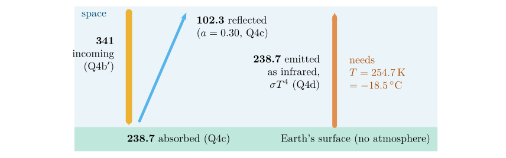
Figure 17.1. The energy flows of Question 4, in \(\mathrm{W\,m^{-2}}\) averaged over the whole Earth, for an Earth without an atmosphere. Arrow widths are proportional to the flows. In balance, the infrared emitted equals the sunlight absorbed; the temperature needed to emit it is the answer to Question 4d.
17.6 Question 4d: the temperature of an airless Earth¶
The question
Earth must lose exactly as much energy as it gains, therefore the Earth must emit all the solar radiation it absorbs. However, if there is no atmosphere this happens very quickly (there is no greenhouse effect). First reorganise the Stefan–Boltzmann equation so that you can calculate the temperature in terms of the intensity of radiation (\(T=\dots\)). Now calculate what the temperature of the Earth would be if all the radiation it absorbed from the Sun was released at the same time (use the data you calculated in 4c). Convert your answer from kelvin to Celsius.
Rearranging the law. Start from Eq. (14.1), \(E=\sigma T^{4}\), and isolate \(T\) in two moves:
-
Divide both sides by \(\sigma\): \(T^{4}=E/\sigma\).
-
Take the fourth root of both sides (the inverse of raising to the fourth power):
where
| \(T\) | temperature of the emitting surface (K) | calculated |
| \(E\) | radiation emitted per square metre (\(\mathrm{W\,m^{-2}}\)) | 238.7, from Question 4c |
| \(\sigma\) | Stefan–Boltzmann constant | \(5.67\times10^{-8}\) \(\mathrm{W\,m^{-2}}\) K\(^{-4}\) |
Calculation. In balance the Earth emits exactly what it absorbs, so \(E=238.7\) \(\mathrm{W\,m^{-2}}\):
-
\(E/\sigma=238.7/5.67\times10^{-8}=4.2099\times10^{9}\) K\(^{4}\).
-
First square root: \(\sqrt{4.2099\times10^{9}}=64\,884\); second square root: \(\sqrt{64\,884}=254.7\) K.
-
In Celsius: \(254.7-273.16=-18.5\) \(^{\circ}\mathrm{C}\).
Answer to Question 4d
\(T=(E/\sigma)^{1/4}\). \(T=(238.7/5.67\times10^{-8})^{1/4}=\textbf{254.7 K}\), which is \(-\)18.5 \(^{\circ}\mathrm{C}\).
Check. This is the same calculation as the Earth’s row of Question 3c, written differently: there \(T=[1368\times0.7/(4\sigma)]^{1/4}=254.9\) K. The 0.2 K difference comes only from using 341 instead of \(1368/4=342\) \(\mathrm{W\,m^{-2}}\). And it is the temperature of curve A in Question 3 (254.1 K): curve A is the spectrum of an Earth without a greenhouse effect.
17.7 Question 4e: what the atmosphere does¶
The question
The actual average global temperature of the Earth between 1961 and 1990 is 14.0 \(^{\circ}\mathrm{C}\) (World Meteorological Organization). What difference does the atmosphere make to the global temperature of the Earth?
The size of the effect. The difference between the actual and the airless temperature is
which is also a difference of 32.5 K, since a step of one degree is the same size on both scales. The atmosphere keeps the Earth’s surface about 33 \(^{\circ}\mathrm{C}\) warmer than it would otherwise be: above the freezing point of water instead of well below it.
How it does it. The atmosphere treats the two kinds of radiation differently (Figure 17.2):
-
Sunlight (shortwave) passes through largely unabsorbed and warms the surface.
-
The surface emits infrared (longwave), Chapter 13, peaking near 10 \(\mu\mathrm{m}\).
-
Greenhouse gases absorb much of that infrared: water vapour, carbon dioxide, methane, nitrous oxide and ozone. These are molecules made of three or more atoms (or of two different atoms) whose vibrations and rotations can absorb and emit infrared; the main gases of the air, nitrogen and oxygen, cannot.
-
The warmed atmosphere radiates in all directions, including back down to the surface. The surface therefore receives the sunlight plus this downward infrared, about 333 \(\mathrm{W\,m^{-2}}\) on average (Trenberth et al. 2009), and settles at a higher temperature.
-
The planet as a whole still balances. What escapes to space comes mostly from the cold upper atmosphere, and it still totals about 239 \(\mathrm{W\,m^{-2}}\): the Earth seen from space radiates like a body at 255 K, even though its surface is at 288 K.
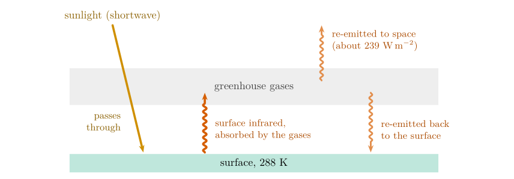
Figure 17.2. The greenhouse effect. Sunlight passes through the atmosphere and warms the surface; the surface’s infrared is absorbed by greenhouse gases, which radiate both to space and back down. The extra downward infrared keeps the surface warmer than the 255 K the planet radiates at from space.
Answer to Question 4e
Without an atmosphere the Earth would average \(-18.5\) \(^{\circ}\mathrm{C}\); with it, 14.0 \(^{\circ}\mathrm{C}\). The atmosphere’s greenhouse effect raises the average surface temperature by about 32.5 \(^{\circ}\mathrm{C}\) (about 33 K). Greenhouse gases absorb the infrared emitted by the surface and radiate part of it back down, so the surface receives more energy than sunlight alone provides and stays at a habitable temperature, above the freezing point of water.
What greenhouse gases trap
Greenhouse gases act mainly on the infrared emitted by the Earth, not on incoming sunlight, which passes through largely unabsorbed. And they do not stop energy escaping: in balance the Earth still sends to space exactly as much as it absorbs (238.7 \(\mathrm{W\,m^{-2}}\)). What they change is where it is emitted from: from the cold upper atmosphere instead of the warm surface. Say: “greenhouse gases absorb the infrared emitted by the surface and re-emit part of it back down, warming the surface by about 33 K”.
Worked example: a one-layer greenhouse
Model the atmosphere as a single layer that lets all sunlight through and absorbs all the surface’s infrared. In balance, the layer must emit 238.7 \(\mathrm{W\,m^{-2}}\) to space; it emits the same amount downward, so the surface receives \(238.7+238.7=477.4\) \(\mathrm{W\,m^{-2}}\) and must emit that:
This overshoots the real 288 K, because the real atmosphere lets some infrared escape directly through the “atmospheric window” near 8–12 \(\mu\mathrm{m}\) and because rising air and evaporation carry heat up from the surface. But it shows the mechanism, and why a thicker greenhouse atmosphere, like that of Venus (§ 16.7), makes the surface hotter still.
A question that comes up
Why is it called a “greenhouse” effect?\ By analogy, and the analogy is loose. A real greenhouse stays warm mainly because its glass stops the warm air inside from rising away and mixing with cooler air. The atmosphere warms the surface by radiation, as described above.
17.8 Question 4f: day and night without an atmosphere¶
The question
What effect would no atmosphere have on the variation in temperature on the Earth over the course of a day, compared with an Earth with an atmosphere?
Without an atmosphere, nothing would slow the loss of heat at night or soften the heating by day.
-
At night the surface would radiate straight to space, with no downward infrared from greenhouse gases and cloud to replace part of the loss (§ 17.7), so it would cool very quickly and very far.
-
By day there would be no cloud to reflect sunlight and no air to absorb part of it, and no winds to carry heat away, so the sunlit surface would heat strongly.
-
The atmosphere (and the ocean beneath it) also stores and moves heat: from day to night and from warm regions to cold ones. Without it, each place would respond only to its own sunshine.
The Moon shows the result: at the same distance from the Sun but with no atmosphere, its equatorial surface swings from near 390 K at midday to below 100 K before dawn (Williams et al. 2017), while the Earth’s global average daily range is only about 10 K (Williams 2024).
Answer to Question 4f
The daily range of temperature would be far larger: very hot days and very cold nights. The atmosphere reduces the range by radiating infrared back to the surface at night (and through cloud), by reflecting and absorbing part of the sunlight by day, and by storing and moving heat. The airless Moon swings by about 300 K between day and night.
17.9 Question 4g: the assumptions¶
The question
What assumption have we made about the solid Earth for this calculation?
Every model rests on assumptions; naming them is part of using it well. For Question 4d we assumed that the Earth:
-
has no source of heat of its own: all its energy comes from the Sun. The heat flowing from the Earth’s interior is real but tiny, under 0.1 \(\mathrm{W\,m^{-2}}\) on average (Davies and Davies 2010), so this assumption costs almost nothing (compare Jupiter, § 16.7);
-
is a perfect black body, emitting \(\sigma T^{4}\) with an emissivity of 1 (§ 12.6);
-
has one uniform temperature everywhere, by day and by night (in reality the equator and the poles differ by tens of degrees);
-
is in equilibrium, emitting at once all it absorbs and storing nothing (the question’s “released at the same time”);
-
keeps an albedo of 0.30 even without an atmosphere. In fact much of that reflection is by cloud, which an airless Earth would not have; with a Moon-like albedo of about 0.1 the airless Earth would be nearer 270 K (Practice Set 16, item 16.3).
Answer to Question 4g
That the solid Earth has no internal source of heat, so that all the energy it radiates comes from the Sun; and that it behaves as a black body at a single, uniform temperature in equilibrium, radiating away immediately everything it absorbs.
The Earth does radiate
The assumption is that the Earth has no internal heat source: it radiates only energy that came from the Sun. It does not mean the Earth gives off no radiation: in this calculation it radiates 238.7 \(\mathrm{W\,m^{-2}}\).
17.10 Try it yourself: Practice Set 17¶
Practice Set 17: the energy balance
Use \(\sigma=5.67\times10^{-8}\) \(\mathrm{W\,m^{-2}}\) K\(^{-4}\) and \(\ensuremath{^{\circ}\mathrm{C}}=\mathrm{K}-273.16\).
-
Repeat Questions 4b\('\) to 4d with today’s solar constant, 1361 \(\mathrm{W\,m^{-2}}\), and an albedo of 0.30.
-
If the Earth’s albedo rose from 0.30 to 0.32 (more cloud, or more ice), what would its black-body temperature become?
-
The Earth’s surface at 14 \(^{\circ}\mathrm{C}\) emits 385.5 \(\mathrm{W\,m^{-2}}\) (Question 2b), but only 238.7 \(\mathrm{W\,m^{-2}}\) leaves the planet. How large is the difference, and what is it a measure of?
-
Using the one-layer greenhouse of § 17.7, what would the surface temperature be? Why is the real surface cooler than this?
Answers to Practice Set 17
-
\(\bar S=1361/4=340.25\) \(\mathrm{W\,m^{-2}}\); absorbed \(0.7\times340.25=238.2\) \(\mathrm{W\,m^{-2}}\); \(T=(238.2/5.67\times10^{-8})^{1/4}=254.6\) K \(=-18.6\) \(^{\circ}\mathrm{C}\), Eqs. (17.2) and (17.3).
-
\(T=[1368\times0.68/(4\times5.67\times10^{-8})]^{1/4}=253.1\) K, about 1.8 K colder. Small changes in albedo matter, which is why cloud and ice feedbacks are important in climate change.
-
\(385.5-238.7=146.8\) \(\mathrm{W\,m^{-2}}\). This is the infrared emitted by the surface that does not escape to space: a measure of the greenhouse effect in energy terms.
-
\(2^{1/4}\times254.7=303\) K (30 \(^{\circ}\mathrm{C}\)). The real atmosphere is not opaque at all infrared wavelengths (the atmospheric window lets some escape directly), and convection and evaporation carry heat upwards from the surface.
17.11 The energy balance in Python¶
These functions compute the equations of this chapter, and the book’s tests check them against its answers.
def absorbed(incoming_wm2, albedo):
"""The part of the incoming radiation that is not reflected (W per square metre)."""
return incoming_wm2 * (1 - albedo)
def temperature_from_emission(e_wm2):
"""Stefan-Boltzmann law turned round: temperature (K) from emission."""
return (e_wm2 / SIGMA) ** 0.25
absorbed(341, 0.3) returns 238.7.
References¶
Davies, J.H. and Davies, D.R. (2010) Earth’s surface heat flux. Solid Earth 1, 5–24. https://doi.org/10.5194/se-1-5-2010
Kopp, G. and Lean, J.L. (2011) A new, lower value of total solar irradiance: Evidence and climate significance. Geophysical Research Letters 38, L01706. https://doi.org/10.1029/2010GL045777
Trenberth, K.E., Fasullo, J.T. and Kiehl, J. (2009) Earth’s global energy budget. Bulletin of the American Meteorological Society 90, 311–324. https://doi.org/10.1175/2008BAMS2634.1
Williams, D.R. (2024) Planetary fact sheets: Mercury, Venus, Earth, Mars, Jupiter.
Williams, J.-P., Paige, D.A., Greenhagen, B.T. and Sefton-Nash, E. (2017) The global surface temperatures of the Moon as measured by the Diviner Lunar Radiometer Experiment. Icarus 283, 300–325. https://doi.org/10.1016/j.icarus.2016.08.012
18. Sun angle, solar intensity and the seasons¶
This chapter answers Questions 5a, 5b and 5c.
18.1 A spread beam is a weaker beam¶
Shine a torch straight down at a table: it makes a small, bright circle. Tilt it, and the same light spreads into a long, dim oval. The torch gives out the same energy; it is spread over more table, so each square centimetre receives less. Sunlight does the same. When the Sun is overhead its rays strike the ground squarely and their energy is concentrated; when it is low they strike at a slant and the same energy is spread over a larger area. The solar intensity, the energy received per unit area of ground, therefore depends on the angle of the Sun.
18.2 Measuring the spreading¶
Two angles describe the Sun’s position (Figure 18.1):
-
the sun angle \(\beta\) (also called the solar elevation or altitude), measured up from the horizon: \(90^\circ\) when the Sun is overhead, \(0^\circ\) when it is on the horizon;
-
the zenith angle \(\theta_z\), measured from the vertical (the zenith, the point straight overhead): \(0^\circ\) when the Sun is overhead.
They add up to a right angle:
where
| \(\beta\) | sun angle: height of the Sun above the horizon (degrees) | calculated |
| \(\theta_z\) | zenith angle: angle of the Sun from the vertical (degrees) | Eq. (18.4) |

Figure 18.1. Beam spreading. A beam one unit wide, arriving at sun angle \(\beta\), covers a strip of ground of length \(1/\sin\beta\): the hypotenuse of a right-angled triangle whose side opposite the angle \(\beta\) is the beam width (Appendix B.2.4). Drawn here for \(\beta=35^\circ\), where the beam covers 1.74 units.
The length of ground covered by a beam one unit wide is called here the “surface area”. From the right-angled triangle in Figure 18.1 (derived in Appendix B.2.4):
where
| \(A\) | area over which a beam of unit width spreads (“surface area”, “beam spreading”; units) | calculated |
| \(\beta\) | sun angle (degrees) | Eq. (18.1) |
When the Sun is overhead, \(\beta=90^\circ\), \(\sin90^\circ=1\) and \(A=1\) unit: the beam’s full energy, 100 %, falls on one unit. In general the energy falling on each unit of ground is
where
| \(I\) | solar intensity, as a percentage of the overhead value, per unit of ground (% per unit) | calculated |
| \(A\) | beam spreading from Eq. (18.2) |
Make sure your calculator is in degree mode: \(\sin(83.5)\) should give 0.9936.
18.3 Where the noon Sun is overhead¶
Because the Earth’s axis is tilted by \(23.5^\circ\) to its orbit, the latitude at which the noon Sun is directly overhead moves through the year (Figure 18.2). That latitude is the Sun’s declination \(\delta\): \(+23.5^\circ\) (the Tropic of Cancer) at the June solstice, \(0^\circ\) (the equator) at the equinoxes, and \(-23.5^\circ\) (the Tropic of Capricorn) at the December solstice. At solar noon, the Sun’s zenith angle at latitude \(\varphi\) is the difference between the two latitudes:
where
| \(\theta_z\) | noon zenith angle (degrees) | calculated |
| \(\varphi\) | latitude of the site (degrees, positive north) | 30 or 60, given |
| \(\delta\) | declination: latitude where the noon Sun is overhead (degrees) | \(+23.5\) in June, \(-23.5\) in December |
For a site north of the Tropic of Cancer this gives two simple rules:
The reason is geometric: walking north by one degree of latitude tilts your local vertical one degree further from the Sun’s direction (Appendix B.2.5).

Figure 18.2. The Earth at the two solstices, with sunlight arriving from the left. The short coloured lines are the local verticals at the Tropic of Cancer, 30\(^{\circ}\)N and 60\(^{\circ}\)N. In June (left) the northern hemisphere is tilted towards the Sun, the Sun is overhead at the Tropic, and the verticals at 30\(^{\circ}\)N and 60\(^{\circ}\)N are only 6.5\(^{\circ}\) and 36.5\(^{\circ}\) from the Sun’s direction. In December (right) they are 53.5\(^{\circ}\) and 83.5\(^{\circ}\) from it, Eq. (18.4).
18.4 Question 5a: sketches of the noon Sun¶
The question
Using this information, draw a simple series of sketches for solar noon on June 21st at a site at 30\(^{\circ}\)N, and on December 22nd and June 21st for a site at 60\(^{\circ}\)N. Indicate the zenith angle, sun angle and beam spreading in each diagram.
Method. For each site and date, apply Eqs. (18.4), (18.1), (18.2) and (18.3) in turn. The calculations are collected in Table 18.1; the 30\(^{\circ}\)N December case is not asked for in 5a but is needed for 5c, so it is included.
@llcccc@ Site & Date & Zenith \(\theta_z\) & Sun angle \(\beta\) & Spread \(1/\sin\beta\) & Intensity\ \(^{\circ}\)N & 21 June & \(30-23.5=6.5^\circ\) & \(83.5^\circ\) & \(1/0.9936=1.006\) & 99.4 %\ 60\(^{\circ}\)N & 21 June & \(60-23.5=36.5^\circ\) & \(53.5^\circ\) & \(1/0.8039=1.244\) & 80.4 %\ 60\(^{\circ}\)N & 22 Dec & \(60+23.5=83.5^\circ\) & \(6.5^\circ\) & \(1/0.1132=8.834\) & 11.3 %\ 30\(^{\circ}\)N & 22 Dec & \(30+23.5=53.5^\circ\) & \(36.5^\circ\) & \(1/0.5948=1.681\) & 59.5 %\ \

Figure 18.3. Question 5a: the noon Sun at each site, drawn to the correct angles and to one scale. Each beam (orange) is one unit wide and the red strip is the ground it covers. The sun angle \(\beta\) (blue arc) is measured from the ground, and the zenith angle \(\theta_z\) (green arc) from the vertical.
Answer to Question 5a
30\(^{\circ}\)N, 21 June: zenith angle \(6.5^\circ\), sun angle \(83.5^\circ\), beam spreading \(1/\sin83.5^\circ=\textbf{1.006 units}\).\ 60\(^{\circ}\)N, 21 June: zenith angle \(36.5^\circ\), sun angle \(53.5^\circ\), beam spreading \(1/\sin53.5^\circ=\textbf{1.24 units}\).\ 60\(^{\circ}\)N, 22 December: zenith angle \(83.5^\circ\), sun angle \(6.5^\circ\), beam spreading \(1/\sin6.5^\circ=\textbf{8.83 units}\).\ Sketches as in Figure 18.3.
Check. The higher the Sun, the closer the spreading is to 1 unit; with the Sun just \(6.5^\circ\) above the horizon, a beam one unit wide is smeared across almost nine units of ground. In each case \(\theta_z+\beta=90^\circ\).
18.5 Question 5b: why the sun angle makes the seasons¶
The question
Given these sketches, explain why the sun angle causes seasonal temperature changes in the mid-latitudes.
As the Earth orbits the Sun with its axis tilted, the latitude where the noon Sun is overhead moves between the tropics (Figure 18.2). At a mid-latitude site the noon Sun is therefore high in summer and low in winter: at 60\(^{\circ}\)N, \(53.5^\circ\) in June and only \(6.5^\circ\) in December. A high Sun concentrates its beam on a small area and a low Sun spreads it over a large one, so each square metre of ground receives far more energy in summer (80 % per unit) than in winter (11 % per unit). More energy absorbed means warmer ground and air.
Answer to Question 5b
Because the Earth’s axis is tilted, the noon sun angle at a mid-latitude site rises in spring and summer and falls in autumn and winter. A high sun angle concentrates the beam on a small area (little beam spreading, high intensity); a low sun angle spreads the same energy over a large area (much spreading, low intensity). So the ground receives more energy per square metre in summer and warms, and less in winter and cools. At 60\(^{\circ}\)N the noon intensity in June is about seven times that in December.
A question that comes up
Is the sun angle the only reason summers are warmer?\ No; it is the main one, and two others work with it. Day length: at 60\(^{\circ}\)N the Sun is up for about 18 hours at the June solstice and about 6 in December, so summer days add up much more energy. Path through the atmosphere: a low Sun’s rays cross far more air, so more is scattered and absorbed before reaching the ground. All three effects point the same way. The distance from the Sun is not a reason: the Earth is closest to the Sun in early January, in the northern winter (Lutgens et al. 2019, ch. 2).

Figure 18.4. Noon solar intensity, Eq. (18.3), against latitude at the solstices and equinoxes. The dots are the four cases of Table 18.1. The peak follows the overhead Sun between the tropics; north of the Arctic Circle (66.5\(^{\circ}\)N) the December curve reaches zero: the noon Sun does not rise.
18.6 Question 5c: comparing solar intensities¶
The question
Given your answers: (i) what is the percentage difference in solar intensity between a site at 30\(^{\circ}\)N and 60\(^{\circ}\)N during the winter solstice? (Hint: calculate the solar intensity as % per unit for each site first.) (ii) What is the percentage difference in solar intensity between a site at 60\(^{\circ}\)N for the winter solstice compared to the summer solstice?
Step 1: the intensities, from Eq. (18.3) and Table 18.1:
Step 2: compare them. “Percentage difference” between two percentages can mean two things, and it is worth giving both:
-
the difference in percentage points: subtract one percentage from the other;
-
the relative difference: divide one by the other.
(i) 30\(^{\circ}\)N against 60\(^{\circ}\)N in December:
(ii) 60\(^{\circ}\)N, December against June:
Answer to Question 5c
(i) At the winter solstice 30\(^{\circ}\)N receives 59.5 % per unit and 60\(^{\circ}\)N 11.3 % per unit: a difference of 48.2 percentage points. 30\(^{\circ}\)N receives about 5.3 times as much as 60\(^{\circ}\)N (60\(^{\circ}\)N receives 81 % less).\ (ii) At 60\(^{\circ}\)N the winter solstice gives 11.3 % per unit and the summer solstice 80.4 % per unit: a difference of 69.1 percentage points. The summer noon intensity is about 7.1 times the winter one.
Check. Both comparisons agree with Figure 18.4: the December curve falls steeply between 30\(^{\circ}\)N and 60\(^{\circ}\)N, and at 60\(^{\circ}\)N the June and December curves are far apart.
Percentage points
A difference between two percentages is in percentage points. The summer and winter intensities at 60\(^{\circ}\)N differ by 69.1 points; in relative terms the summer intensity is 7.1 times the winter one, which is 610 % more, not 69 %.
18.7 Try it yourself: Practice Set 18¶
Practice Set 18: sun angle
-
Coleraine is at 55.1\(^{\circ}\)N. Find the noon zenith angle, sun angle, beam spreading and intensity at the June and December solstices.
-
What is the noon intensity at the equator at either solstice? And at the equinoxes?
-
What is the noon intensity at 60\(^{\circ}\)N at the equinoxes, when the Sun is overhead at the equator?
-
What happens at the Arctic Circle (66.5\(^{\circ}\)N) at noon on 22 December?
-
At which latitude is the noon intensity 100 % on 21 June, and why?
Answers to Practice Set 18
-
June: \(\theta_z=55.1-23.5=31.6^\circ\), \(\beta=58.4^\circ\), \(A=1/\sin58.4^\circ=1.174\) units, \(I=85.2\,\%\) per unit. December: \(\theta_z=55.1+23.5=78.6^\circ\), \(\beta=11.4^\circ\), \(A=5.06\) units, \(I=19.8\,\%\) per unit. The June noon Sun gives Coleraine 4.3 times the December intensity.
-
At either solstice \(\theta_z=23.5^\circ\), \(\beta=66.5^\circ\), \(A=1.090\), \(I=91.7\,\%\) per unit. At the equinoxes the Sun is overhead: 100 %. The equator’s noon intensity hardly changes through the year, which is why the tropics have little temperature seasonality.
-
\(\theta_z=60^\circ\), \(\beta=30^\circ\), \(A=1/\sin30^\circ=2\) units, \(I=50\,\%\) per unit.
-
\(\theta_z=66.5+23.5=90^\circ\), so \(\beta=0^\circ\): the noon Sun is on the horizon, the beam spreading is infinite and the intensity is zero. North of this, the Sun does not rise at all on that day: the polar night.
-
At the Tropic of Cancer, 23.5\(^{\circ}\)N, where \(\theta_z=0^\circ\) and the Sun is directly overhead: the declination on 21 June is \(+23.5^\circ\), Eq. (18.4).
18.8 Sun angle in Python¶
These functions compute the equations of this chapter, and the book’s tests check them against its answers.
def zenith_angle(latitude_deg, declination_deg):
"""Noon zenith angle (degrees) at a latitude for a solar declination."""
return abs(latitude_deg - declination_deg)
def sun_angle(zenith_deg):
"""Sun angle above the horizon (degrees)."""
return 90.0 - zenith_deg
def beam_spreading(sun_deg):
"""Length of ground covered by a beam one unit wide."""
return 1.0 / math.sin(math.radians(sun_deg))
def intensity_percent(sun_deg):
"""Solar intensity as a percentage per unit of ground."""
return 100.0 / beam_spreading(sun_deg)
intensity_percent(sun_angle(zenith_angle(60, -23.5))) returns about 11.3.
References¶
Lutgens, F.K., Tarbuck, E.J. and Herman, R.L. (2019) The atmosphere: An introduction to meteorology, 14th ed. Pearson, New York.
19. Putting Part II together¶
19.1 One chain of ideas¶
The five questions are one argument, each step resting on the one before:
-
Everything above absolute zero radiates, over a spread of wavelengths described by the Planck curve (Chapter 12).
-
The peak of that spread moves to shorter wavelengths as temperature rises (Wien’s law): the Sun, at about 5800 K, peaks in visible light; the Earth, near 288 K, in the thermal infrared (Question 1, Chapter 13).
-
The total emission rises as the fourth power of temperature (Stefan–Boltzmann law): twenty times the temperature means 166 000 times the emission (Question 2, Chapter 14).
-
A planet settles at the temperature at which it emits as much as it absorbs. That temperature depends on its distance from the Sun (inverse-square law) and its albedo, and can be read from its spectrum (Question 3, Chapters 15 and 16).
-
Where the actual temperature is higher than this, an atmosphere is trapping infrared (the greenhouse effect: Venus, the Earth) or the planet has its own heat (Jupiter). For the Earth the greenhouse effect is worth about 33 K (Question 4, Chapter 17).
-
Across the Earth’s surface, the energy received depends on the angle of the Sun. The tilt of the axis moves that angle through the year and so makes the seasons (Question 5, Chapter 18).
This heating explains the structure met in Part I: a troposphere heated from below and a stratosphere heated by ozone (Part I, § 5.4), thickest over the tropics (Part I, § 7.4). Part III shows how the uneven heating from equator to pole fills the air with moisture and sets it in motion.
19.2 All the answers in one table¶
| Q | Answer | Where |
|---|---|---|
| Q | Answer | Where |
| 1 | \(T_{\text{Sun}}=2898/0.5=5796\) K \(=5522.8\) \(^{\circ}\mathrm{C}\) | § 13.3 |
| 2a | \(E_{\text{Sun}}=6.40\times10^{7}\) \(\mathrm{W\,m^{-2}}\) | § 14.3 |
| 2b | \(E_{\text{Earth}}=385.5\) \(\mathrm{W\,m^{-2}}\) (at 287.16 K) | § 14.4 |
| 2c | \(5796/287.16=20.2\), about 20 times hotter | § 14.5 |
| 2d | \(6.40\times10^{7}/385.5=166\,000\) times more emission | § 14.6 |
| 2e | \(E\propto T^{4}\): \(20.18^{4}=166\,000\) (a power law) | § 14.7 |
| 3a | peaks at 12, 14 and 16 \(\mu\mathrm{m}\) (A, B, C) | § 15.3 |
| 3b | \(T_A=241.5\) K, \(T_B=207.0\) K, \(T_C=181.1\) K (true curves: 254.1, 210.0, 184.1 K) | § 15.4 |
| 3c | Mercury 439, Venus 185, Earth 255, Mars 210, Jupiter 110 K | § 16.5 |
| 3d | A Earth, B Mars, C Venus | § 16.6 |
| 3e | \(i\) Mars: further away, 43 % of the Earth’s sunlight; (ii) Venus: albedo 0.9; (iii) Venus 737 K, intense CO\(_2\) greenhouse; (iv) Mercury: no atmosphere (Mars nearly none) | § 16.7 |
| 4a | % absorbed | § 17.2 |
| 4b | reflected 410.4, absorbed 957.6 \(\mathrm{W\,m^{-2}}\) | § 17.3 |
| 4b\('\) | night and slanting rays: disc \(\pi R^{2}\) against sphere \(4\pi R^{2}\), so \(1368/4=342\approx341\) \(\mathrm{W\,m^{-2}}\) | § 17.4 |
| 4c | reflected 102.3, absorbed 238.7 \(\mathrm{W\,m^{-2}}\) | § 17.5 |
| 4d | \(T=(E/\sigma)^{1/4}=254.7\) K \(=-18.5\) \(^{\circ}\mathrm{C}\) | § 17.6 |
| 4e | greenhouse effect warms the surface by about 32.5 K (33 K) | § 17.7 |
| 4f | much larger day–night range: very hot days, very cold nights | § 17.8 |
| 4g | no internal heat source; black body at one temperature, in equilibrium | § 17.9 |
| 5a | \(^{\circ}\)N June: \(\theta_z=6.5^\circ\), \(\beta=83.5^\circ\), 1.006 units; 60\(^{\circ}\)N June: \(36.5^\circ\), \(53.5^\circ\), 1.24 units; 60\(^{\circ}\)N December: \(83.5^\circ\), \(6.5^\circ\), 8.83 units | § 18.4 |
| 5b | tilt: high summer Sun concentrates the beam, low winter Sun spreads it | § 18.5 |
| 5c | \(i\) 59.5 against 11.3 % per unit: 48.2 points, 5.3 times; (ii) 80.4 against 11.3 % per unit: 69.1 points, 7.1 times | § 18.6 |
Table 19.1. Every answer of Part II, with the section where it is worked out.
19.3 Mistakes to avoid¶
-
Using Celsius in a radiation law. \(\sigma T^{4}\) and \(C/T\) need kelvin. Convert first, and convert back only at the end (§ 14.5).
-
Forgetting the fourth root. When solving \(E=\sigma T^{4}\) for \(T\), divide by \(\sigma\) and then take the fourth root, Eq. (17.3); a single square root gives a value about 65 000 instead of 255.
-
Mixing up the sun angle and the zenith angle. The sun angle is from the horizon, the zenith angle from the vertical; they add to \(90^\circ\), Eq. (18.1). Beam spreading uses the sun angle.
-
Calculator in radians. \(\sin(83.5)\) in radian mode gives 0.97 instead of 0.9936.
-
Subtracting percentages and calling the result a percentage. Two intensities of 80.4 % and 11.3 % differ by 69.1 percentage points; in relative terms one is 7.1 times the other (§ 18.6).
-
Reading the peak of a coarsely sampled spectrum as exact. The highest data point lies near, not at, the peak (§ 15.4).
19.4 Self-test¶
Self-test: one line each
-
Why is the Sun’s radiation called shortwave and the Earth’s longwave?
-
If a star is three times as hot as the Sun, how does its total emission per square metre compare?
-
Why does Venus have a lower black-body temperature than the Earth but a far higher surface temperature?
-
Why do we divide the solar constant by four?
-
Without an atmosphere, would the Earth be colder by day, by night, or both?
-
Why is there little seasonal change in temperature at the equator?
Answers to the self-test
-
Wien’s law: the Sun is about 20 times hotter, so its emission peaks at a wavelength about 20 times shorter (0.5 against 10 \(\mu\mathrm{m}\)) (Chapter 13).
-
\(3^{4}=81\) times as much, Eq. (14.2).
-
Its bright clouds reflect most sunlight (high albedo), so it absorbs little; but its thick CO\(_2\) atmosphere traps the infrared from the surface (§ 16.7).
-
The Earth catches sunlight on a disc of area \(\pi R^{2}\) but spreads it over a sphere of area \(4\pi R^{2}\) (Figure 16.1).
-
Mostly by night: nights would be far colder. Days could be hotter, as on the Moon (§ 17.8). On average it would be about 33 K colder.
-
The noon Sun is always high there (at least \(66.5^\circ\)), so the intensity changes little through the year (Practice Set 18, item 18.2).
20. Part III at a glance¶
20.1 What this part covers¶
This part has three sections, each building a skill that the next one needs, so it pays to work through them in order. It brings together the two parts before it: the vertical structure of Part I gives the pressure surfaces whose slopes drive the wind, and the uneven solar heating of Part II is what makes them slope.
Moisture.
How do we say how much water vapour the air holds? You meet four different measures (vapour pressure, mixing ratio, relative humidity and dew point) and learn to move between them with a table and a graph.
Motion.
Why does the air move at all, and why does it move the way it does? You study the three forces that matter for large-scale winds (the pressure gradient force, the Coriolis force and friction) and see how their balance gives the geostrophic wind high up and a wind that crosses the isobars near the ground.
Weather maps.
You decode the station model that every weather map uses, draw streamlines from wind barbs, and analyse a whole map: isobars, the low, the fronts, the cloud and the rain.
The moisture questions are numbered 1 to 6. The numbering starts again at 1 for the motion questions, which run to 11, and the weather map questions carry on from 12 to 14. A question of this part is always named with its section, for example Moisture Q3, Motion Q7 or Map Q12.
| Question | What it asks | Chapter | Equations |
|---|---|---|---|
| Moisture Q1 | relative humidity of five samples | 21 | (21.3) |
| Moisture Q2 | heating cold air indoors in winter | 21 | (21.3) |
| Moisture Q3 | ranking five samples by actual vapour | 21 | (21.4) |
| Moisture Q4 | the weakness of relative humidity | 21 | |
| Moisture Q5 | dew point of 20 \(^{\circ}\mathrm{C}\), 10 \(\mathrm{g\,kg^{-1}}\) | 22 | (21.2) |
| Moisture Q6 | dew point of 34 \(^{\circ}\mathrm{C}\) at 62 % | 22 | (21.4), (22.1) |
| Motion Q1–Q6 | pressure surfaces, Saskatoon and Monterrey | 24 | (24.1), (23.1) |
| Motion Q7 | geostrophic wind, north and south | 25 | (25.1) |
| Motion Q8–Q9 | friction and the forces on a box | 26 | (26.1) |
| Motion Q10–Q11 | four circulation systems | 26 | (26.1) |
| Map Q12 | decode four station models | 27 | (27.1) |
| Map Q13 | streamlines | 28 | |
| Map Q14 | fronts and the full analysis | 29 | (25.1) |
Table 20.1. Where each question is answered, and the equations it needs.
Chapter 23 builds the physics of the motion section before its questions; Chapter 30 gathers every answer in one table. The formulas, the 34 stations of the weather map, derivations and weather symbols are in Appendix C.
20.2 What to have beside you¶
-
A calculator that has
lnandexpkeys, though most questions need only multiplication and division. -
Four coloured pencils for the force diagrams: red for the pressure gradient force, blue for the Coriolis force, green for friction, and black for the wind.
-
A ruler and a soft pencil for the weather map.
20.3 Symbols and units¶
| Symbol | Meaning | Unit |
|---|---|---|
| \(T\), \(T_d\) | air temperature, dew-point temperature | \(^{\circ}\mathrm{C}\) (\(^{\circ}\mathrm{F}\) on the station models) |
| \(e\), \(e_s\) | vapour pressure, saturation vapour pressure | hPa (= mb) |
| \(w\), \(w_s\) | mixing ratio, saturation mixing ratio | \(\mathrm{g\,kg^{-1}}\) |
| RH | relative humidity | \% |
| \(p\) | air pressure | hPa (= mb) |
| \(z\) | height above the ground | m |
| \(\rho\) | air density (about 1.2 kg m\(^{-3}\) near the ground) | kg m\(^{-3}\) |
| \(f\) | Coriolis parameter, \(f=2\Omega\sin\varphi\) | s\(^{-1}\) |
| \(V\), \(V_g\) | wind speed, geostrophic wind speed | \(\mathrm{m\,s^{-1}}\) (or knots) |
| \(\Delta n\) | distance across the isobars (or height lines) | km |
Table 20.2. The symbols used in Part III.
Millibar and hectopascal. Older charts say mb; modern texts say hPa. They are the same: \(1\ \mathrm{mb}=1\ \mathrm{hPa}=100\) Pa. This part uses both.
Knots. Wind barbs use knots: \(1\ \mathrm{kt}=0.514\ \ensuremath{\mathrm{m\,s^{-1}}}\approx 1.85\ \mathrm{km\,h^{-1}}\).
20.4 About the weather map¶
The weather map shows 34 stations in the central United States on one day. Wind speeds were obtained by counting barbs and are approximate. The fronts were placed by hand from the temperature, dew-point and wind changes, as an analyst would. § C.2 lists every station.
21. Moisture in the air: mixing ratio and relative humidity¶
This chapter answers Moisture Q1 to Q4.
21.1 Why water vapour matters¶
Water vapour is the invisible, gaseous form of water. It makes up between a fraction of a percent and about four percent of the air by volume, yet it is the ingredient of every cloud, every shower and every fog. It also sets how comfortable a day feels, because sweat evaporates slowly into air that is already moist. To talk about weather precisely we need a way to say how much vapour the air contains. There are four common measures. This chapter covers the first three; the fourth, the dew point, has its own chapter.
21.2 Vapour pressure and saturation¶
Air is a mixture of gases, and each gas contributes a share of the total pressure, in proportion to how many of its molecules are present: the partial pressure met for oxygen in Part I ( § 4.4). The share due to water vapour is the vapour pressure, written \(e\). In the lowest kilometres it is about 1 to 30 hPa, out of a total pressure of roughly 1000 hPa.
Imagine a closed dish of water with air above it. Molecules leave the water surface (evaporation) and return to it (condensation). At first more leave than return, so the vapour pressure above the water rises. It stops rising when the two flows are equal. The air is then saturated, and the vapour pressure has reached its upper limit for that temperature: the saturation vapour pressure, \(e_s\).
The warmer the water, the more energetic its molecules and the more easily they escape, so \(e_s\) rises with temperature, and it rises steeply. Table 21.1 gives it as the “mb” column: 6.1 mb at 0 \(^{\circ}\mathrm{C}\), 23.4 mb at 20 \(^{\circ}\mathrm{C}\)and 73.8 mb at 40 \(^{\circ}\mathrm{C}\). Plotted, it is the curve of Figure 21.1 (the Clausius–Clapeyron curve).

Figure 21.1. Saturation vapour pressure against temperature. The dots are the values of Table 21.1. Air whose vapour pressure and temperature fall below the curve is unsaturated; points above it are not possible for long, because the surplus vapour condenses.
A question that comes up
Why does warm air “hold” more water than cold air?\ Air does not really hold water the way a sponge does. The saturation vapour pressure is a property of water itself, how readily it evaporates at a given temperature, and the other gases hardly affect it. “Holding capacity” is a convenient picture, and this part uses it, but it is the temperature that sets the limit.
21.3 Mixing ratio¶
Vapour pressure is not the only way to measure moisture. The mixing ratio, \(w\), compares the mass of vapour with the mass of the dry air that goes with it:
where
| \(w\) | mixing ratio (\(\mathrm{g\,kg^{-1}}\): grams of vapour per kilogram of dry air) | calculated |
Typical values run from 0.1 \(\mathrm{g\,kg^{-1}}\) in the polar winter to 20 \(\mathrm{g\,kg^{-1}}\) in the humid tropics. When the air is saturated the ratio is the saturation mixing ratio, \(w_s\), the second column of numbers in Table 21.1 (the “g/kg” column).
The two measures are linked. For a total pressure \(p\) and a vapour pressure \(e\),
where
| \(w\) | mixing ratio (\(\mathrm{g\,kg^{-1}}\)) | calculated |
| \(e\) | vapour pressure (hPa) | |
| \(p\) | total air pressure (hPa) | 995.5 for Table 21.1 |
| \(622\) | ratio of the molar masses of water and dry air, \(18/29\), times 1000 (to give \(\mathrm{g\,kg^{-1}}\)) |
The factor 0.622 is the ratio of the molar masses of water (18) and dry air (29): a molecule of vapour is lighter than the average molecule of dry air.

Figure 21.2. Saturation mixing ratio against temperature. The curve is computed from the saturation vapour pressure at a pressure of 995.5 hPa, the pressure of Table 21.1.
A question that comes up
Why use the mass of dry air, and why grams per kilogram?\ The mass of dry air in a rising or sinking parcel stays fixed, while the total mass of moist air does not, as soon as vapour condenses or evaporates. Dividing by the dry mass gives a number that stays constant for a parcel until water is added or removed. Grams per kilogram simply keeps the numbers handy: a few units to a few tens.
A question that comes up
Table 21.1 is for sea level. Which pressure is that?\ Working backwards from the table, \(p = e_s + 622\,e_s/w_s\) comes out at about 995.5 hPa for every row from \(-20\) to 40 \(^{\circ}\mathrm{C}\). That is a typical low-ish sea-level pressure, not the standard 1013.25 hPa. At 1013.25 hPa the mixing ratios would be about 1.8 % smaller. The difference never matters for these questions; the calculations here use 995.5 hPa so that every answer agrees with the table.
21.4 Relative humidity¶
Relative humidity (RH) says how close the air is to saturation. It is defined in two equivalent ways:
where
| \(\mathrm{RH}\) | relative humidity (%) | calculated |
| \(e,\ e_s\) | vapour pressure and saturation vapour pressure (hPa) | Table 21.1 |
| \(w,\ w_s\) | mixing ratio and saturation mixing ratio (\(\mathrm{g\,kg^{-1}}\)) | Table 21.1 |
An RH of 50 % means the air holds half of what it could hold at its present temperature; 100 % means saturated. Because \(e_s\) and \(w_s\) both depend strongly on temperature, the same air has a different relative humidity at a different temperature. That fact is behind most of the puzzles in this chapter.
Relative humidity in one line
Relative humidity = (how much vapour is there) \(\div\) (how much there could be at this temperature) \(\times100\).
21.5 A picture to hold on to: the glass¶
Picture the air as a glass. The size of the glass is the saturation mixing ratio at the air’s temperature. The water in the glass is the actual mixing ratio. Relative humidity is how full the glass is. Warm air has a big glass, cold air a small one.

Figure 21.3. The glass picture. The same 5 g of vapour per kilogram of air fills the glass of 14 \(^{\circ}\mathrm{C}\) air to 49 %, the glass of 24 \(^{\circ}\mathrm{C}\) air to 26 %, and the big glass of 34 \(^{\circ}\mathrm{C}\) air to only 14 %. The amount of water is identical; only the size of the glass changes.
21.6 Reading the table¶
Three skills with Table 21.1 carry you through all the moisture questions.
| Temp. (\(^{\circ}\mathrm{C}\)) | \(\boldsymbol{e_s}\) (mb) | \(\boldsymbol{w_s}\) (\(\mathrm{g\,kg^{-1}}\)) |
|---|---|---|
| Temp. (\(^{\circ}\mathrm{C}\)) | \(\boldsymbol{e_s}\) (mb) | \(\boldsymbol{w_s}\) (\(\mathrm{g\,kg^{-1}}\)) |
| \(-\)40 | 0.189 | 0.118 |
| \(-\)35 | 0.314 | 0.195 |
| \(-\)30 | 0.519 | 0.318 |
| \(-\)25 | 0.807 | 0.510 |
| \(-\)20 | 1.254 | 0.784 |
| \(-\)18 | 1.488 | 0.931 |
| \(-\)16 | 1.760 | 1.102 |
| \(-\)14 | 2.076 | 1.300 |
| \(-\)12 | 2.441 | 1.529 |
| \(-\)10 | 2.863 | 1.794 |
| \(-\)8 | 3.348 | 2.099 |
| \(-\)6 | 3.906 | 2.450 |
| \(-\)4 | 4.545 | 2.852 |
| \(-\)2 | 5.275 | 3.313 |
| 0 | 6.108 | 3.840 |
| 2 | 7.055 | 4.439 |
| 4 | 8.129 | 5.120 |
| 6 | 9.347 | 5.894 |
| 8 | 10.722 | 6.771 |
| 10 | 12.272 | 7.762 |
| 12 | 14.017 | 8.882 |
| 14 | 15.977 | 10.140 |
| 16 | 18.173 | 11.560 |
| 18 | 20.630 | 13.162 |
| 20 | 23.373 | 14.956 |
| 22 | 26.430 | 16.963 |
| 24 | 29.831 | 19.210 |
| 26 | 33.608 | 21.734 |
| 28 | 37.796 | 24.557 |
| 30 | 42.430 | 27.694 |
| 32 | 47.551 | 31.213 |
| 34 | 53.200 | 35.134 |
| 36 | 59.422 | 39.502 |
| 38 | 66.264 | 44.381 |
| 40 | 73.777 | 49.815 |
Table 21.1. Saturation vapour pressure \(e_s\) and saturation mixing ratio \(w_s\) against temperature, at a sea-level pressure of 995.5 hPa.
Using the table. (1) To look up, read across from the temperature. (2) To interpolate, take the proportion of the way between two rows. (3) To look up backwards (for a dew point), find the two rows whose \(w_s\) bracket the value and interpolate for the temperature. Linear interpolation over a 2-degree step is accurate to about 0.1 %.
-
Look up a value at a temperature that is listed, for example \(w_s(24\,\ensuremath{^{\circ}\mathrm{C}})=19.21\,\ensuremath{\mathrm{g\,kg^{-1}}}\).
-
Interpolate between two rows for a temperature that is not listed.
-
Look up backwards: given a mixing ratio, find the temperature at which it is the saturation value. This is how you find a dew point (Chapter 22).
Worked example: interpolating in the table
Find \(w_s\) at 25 \(^{\circ}\mathrm{C}\). The table lists 24 \(^{\circ}\mathrm{C}\) (19.21) and 26 \(^{\circ}\mathrm{C}\) (21.734). 25 \(^{\circ}\mathrm{C}\) is half way between, so take the half-way value:
The exact value from the formula is 20.44 \(\mathrm{g\,kg^{-1}}\). Because the curve is convex (it bends upwards), straight-line interpolation overestimates slightly, by about 0.1 % over a 2-degree step. That is far smaller than the precision of the question.
21.7 Question 1: relative humidity of five samples¶
The question
Using Table 21.1, determine the saturation mixing ratio and calculate the relative humidity of five air samples at the temperatures and mixing ratios shown.
Method.
-
For each sample read the saturation mixing ratio \(w_s\) from Table 21.1 at the sample’s temperature.
-
Divide the sample’s mixing ratio \(w\) by \(w_s\) and multiply by 100.
-
Check: more vapour at the same temperature must give a higher RH; the same vapour in warmer air must give a lower RH.
Answer to Moisture Q1
| Temp. | Sat. mixing ratio (\(\mathrm{g\,kg^{-1}}\)) | Mixing ratio (\(\mathrm{g\,kg^{-1}}\)) | RH (%) |
|---|---|---|---|
| 14 \(^{\circ}\mathrm{C}\) | 10.14 | 5 | \(5/10.14=\mathbf{49.3}\) |
| 14 \(^{\circ}\mathrm{C}\) | 10.14 | 9 | \(9/10.14=\mathbf{88.8}\) |
| 24 \(^{\circ}\mathrm{C}\) | 19.21 | 5 | \(5/19.21=\mathbf{26.0}\) |
| 24 \(^{\circ}\mathrm{C}\) | 19.21 | 2 | \(2/19.21=\mathbf{10.4}\) |
| 34 \(^{\circ}\mathrm{C}\) | 35.134 | 7 | \(7/35.134=\mathbf{19.9}\) |

The five samples of Question 1 drawn as glasses on the same scale. The number at the top of each glass is its capacity (the saturation mixing ratio); the number just above the water is the sample’s mixing ratio; the percentage below is the relative humidity.
Check. The two 14 \(^{\circ}\mathrm{C}\) samples have 5 and 9 \(\mathrm{g\,kg^{-1}}\); the one with more vapour (49.3 % against 88.8 %) has the higher RH. The two 24 \(^{\circ}\mathrm{C}\) samples likewise. The 34 \(^{\circ}\mathrm{C}\) sample, with 7 \(\mathrm{g\,kg^{-1}}\) in a huge glass, has the lowest RH of the five bar the 2 \(\mathrm{g\,kg^{-1}}\) sample, as it should.
21.8 Question 2: cold air heated in a house¶
The question
In winter, cold air is brought into homes and heated. How does this change the humidity in the house?
Method. Follow one parcel of air. Heating changes its temperature, so it changes the size of the glass, but it adds no water, so the amount of vapour stays fixed.
Worked example: a cold day in Belfast
Outside, the air is at 0 \(^{\circ}\mathrm{C}\) with a relative humidity of 80 %. From Table 21.1 \(w_s(0\,\ensuremath{^{\circ}\mathrm{C}})=3.84\,\ensuremath{\mathrm{g\,kg^{-1}}}\), so the air holds
Bring it indoors and heat it to 21 \(^{\circ}\mathrm{C}\). The saturation mixing ratio at 21 \(^{\circ}\mathrm{C}\) is about 15.9 \(\mathrm{g\,kg^{-1}}\) (half way between the 16.0 of 20 \(^{\circ}\mathrm{C}\) and 17.0 of 22 \(^{\circ}\mathrm{C}\); the exact value is 15.93). Nothing has been added, so \(w\) is still 3.07 \(\mathrm{g\,kg^{-1}}\) and
To reach a comfortable 40 % the air would need \(0.40\times15.9=6.4\,\ensuremath{\mathrm{g\,kg^{-1}}}\), which means adding \(6.4-3.07=3.3\,\ensuremath{\mathrm{g\,kg^{-1}}}\) of water.

Question 2. Heating leaves the amount of vapour untouched but makes the glass four times bigger, so the relative humidity falls from 80 % to 19 %.

How dry the indoor air becomes. Outdoor air at \(-10\) \(^{\circ}\mathrm{C}\) and 70 % humidity gives only about 6 % when heated to 21 \(^{\circ}\mathrm{C}\) with no water added; on a mild 10 \(^{\circ}\mathrm{C}\) day the same calculation gives 28 %.
Answer to Moisture Q2
The humidity in the house will drop significantly. Cold air holds little vapour, so the outside air has a low mixing ratio. Heating it without adding water leaves the mixing ratio unchanged but increases the saturation mixing ratio a great deal, so the relative humidity becomes very low.
21.9 Question 3: who holds the most water?¶
The question
Five samples are described by temperature and relative humidity. Complete the mixing ratios and rank them from 1 (most vapour) to 5 (least).
Method. Turn each relative humidity back into an amount of vapour:
where
| \(w\) | actual mixing ratio (\(\mathrm{g\,kg^{-1}}\)) | calculated |
| \(w_s\) | saturation mixing ratio at the air temperature (\(\mathrm{g\,kg^{-1}}\)) | Table 21.1 |
| \(\mathrm{RH}\) | relative humidity (%) | given |
-
Read \(w_s\) from Table 21.1 for each temperature.
-
Multiply by the relative humidity written as a fraction (90 % is 0.90).
-
Rank the results from the largest to the smallest.
Answer to Moisture Q3
| Temp. | \(w_s\) (\(\mathrm{g\,kg^{-1}}\)) | RH | \(w=w_s\times\)RH (\(\mathrm{g\,kg^{-1}}\)) | Rank |
|---|---|---|---|---|
| 14 \(^{\circ}\mathrm{C}\) | 10.14 | 90 % | \(10.14\times0.90=9.126\) | 3 |
| 20 \(^{\circ}\mathrm{C}\) | 14.956 | 60 % | \(14.956\times0.60=8.974\) | 4 |
| 24 \(^{\circ}\mathrm{C}\) | 19.21 | 40 % | \(19.21\times0.40=7.684\) | 5 |
| 30 \(^{\circ}\mathrm{C}\) | 27.694 | 40 % | \(27.694\times0.40=11.078\) | 1 |
| 34 \(^{\circ}\mathrm{C}\) | 35.134 | 30 % | \(35.134\times0.30=10.54\) | 2 |

Question 3 ranked (rank 1 at the top). The 14 \(^{\circ}\mathrm{C}\) sample is the “dampest” at 90 % but is only third in actual water; the 30 \(^{\circ}\mathrm{C}\) sample, which feels “dry” at 40 %, holds the most.
Check. Make sure the ranking depends on the amount of vapour, not on the humidity. If you had ranked by RH you would have put 14 \(^{\circ}\mathrm{C}\) first. The glass picture shows why that is wrong: a small glass 90 % full holds less than a big glass 40 % full.
21.10 Question 4: the disadvantage of relative humidity¶
Answer to Moisture Q4
Relative humidity does not tell you how much water vapour is actually in the air.
That is the short answer. The fuller explanation is worth knowing, because it recurs in weather forecasting.
-
It depends on temperature as well as on the vapour. The same air has an RH of 49 % at 14 \(^{\circ}\mathrm{C}\) and 26 % at 24 \(^{\circ}\mathrm{C}\) (Question 1). Nothing was added or removed.
-
It changes through the day for no reason connected with moisture. On a calm day the vapour content hardly changes, but the temperature rises by several degrees after dawn, so the RH falls.
-
It cannot be used to compare two places. The most humid-feeling sample in Question 3 (90 %) held less vapour than three drier-feeling ones.
Better measures. The mixing ratio and the dew point measure the vapour itself. Neither changes when air is heated or cooled, as long as nothing condenses. For that reason forecasters watch the dew point more closely than the relative humidity, and so do the station models you meet in Chapter 27.
21.11 Try it yourself: Practice Set 21¶
Practice Set 21: relative humidity and vapour amounts
-
Air at 28 \(^{\circ}\mathrm{C}\) has a mixing ratio of 15 \(\mathrm{g\,kg^{-1}}\). What is its relative humidity?
-
Air at 10 \(^{\circ}\mathrm{C}\) has a relative humidity of 70 %. How much water vapour does a kilogram of it contain?
-
Sample P: 32 \(^{\circ}\mathrm{C}\), RH 25 %. Sample Q: 20 \(^{\circ}\mathrm{C}\), RH 85 %. Which holds more water vapour, and how much more?
-
Air at 0 \(^{\circ}\mathrm{C}\) and RH 90 % is heated to 20 \(^{\circ}\mathrm{C}\) with no water added. What is its relative humidity now?
-
Air at 24 \(^{\circ}\mathrm{C}\) and RH 50 % is cooled to 14 \(^{\circ}\mathrm{C}\) with no water added (and no condensation). What is its RH now?
-
Use interpolation to find \(w_s\) at 31 \(^{\circ}\mathrm{C}\), and hence the mixing ratio of air at 31 \(^{\circ}\mathrm{C}\) with RH 55 %.
Answers to Practice Set 21
-
\(w_s(28)=24.557\), so RH \(=15/24.557=61\,\%\).
-
\(w_s(10)=7.762\), so \(w=0.70\times7.762=5.43\,\ensuremath{\mathrm{g\,kg^{-1}}}\).
-
P: \(31.213\times0.25=7.80\,\ensuremath{\mathrm{g\,kg^{-1}}}\). Q: \(14.956\times0.85=12.71\,\ensuremath{\mathrm{g\,kg^{-1}}}\). Q holds more, by \(4.91\,\ensuremath{\mathrm{g\,kg^{-1}}}\), although its temperature is 12 \(^{\circ}\mathrm{C}\) lower.
-
\(w=0.90\times3.84=3.456\,\ensuremath{\mathrm{g\,kg^{-1}}}\); \(w_s(20)=14.956\); RH \(=3.456/14.956=23\,\%\).
-
\(w=0.50\times19.21=9.605\,\ensuremath{\mathrm{g\,kg^{-1}}}\); \(w_s(14)=10.14\); RH \(=9.605/10.14=94.7\,\%\). The air is almost saturated: another degree or so of cooling brings the dew point.
-
\(w_s(31)\approx(27.694+31.213)/2=29.45\,\ensuremath{\mathrm{g\,kg^{-1}}}\); \(w=0.55\times29.45=16.2\,\ensuremath{\mathrm{g\,kg^{-1}}}\).
21.12 Humidity in Python¶
These functions compute the equations of this chapter, and the book’s tests check them against its answers.
def saturation_vapour_pressure(t_c):
"""Saturation vapour pressure (hPa) over water at t_c (deg C)."""
return 6.112 * math.exp(17.67 * t_c / (t_c + 243.5))
def saturation_mixing_ratio(t_c, p_hpa=TABLE_PRESSURE_HPA):
"""Saturation mixing ratio (g/kg) at t_c and p_hpa."""
e_s = saturation_vapour_pressure(t_c)
return 622.0 * e_s / (p_hpa - e_s)
def relative_humidity(w, w_s):
"""Relative humidity (%) from the mixing ratio and the saturation mixing ratio."""
return 100.0 * w / w_s
def mixing_ratio_from_rh(w_s, rh):
"""Mixing ratio (g/kg) from the saturation mixing ratio and the relative humidity (%)."""
return w_s * rh / 100.0
saturation_mixing_ratio(10) returns about 7.76, the table’s value at 10 \(^{\circ}\mathrm{C}\).
22. The dew point¶
This chapter answers Moisture Q5 and Q6.
22.1 Cooling the glass¶
Take a sample of air and cool it, taking nothing away and adding nothing. Two things happen. The vapour in the air stays the same, because no water has gone in or out. The glass (the saturation mixing ratio) shrinks, because colder air can hold less. So the glass gets fuller and the relative humidity rises. At one particular temperature the glass is exactly full. That temperature is the dew point, \(T_d\).
Definition
The dew point is the temperature to which an air sample must be cooled, at constant pressure and without adding or removing water, to reach saturation. At that temperature the saturation mixing ratio equals the sample’s actual mixing ratio, \(w_s(T_d)=w\).
If you cool the air below its dew point the surplus vapour cannot stay as vapour. It condenses: into dew on cold grass, into fog near the ground, into cloud higher up. A cold can of drink on a summer day is covered with water for exactly this reason: the air against the can is cooled below its dew point.
22.2 Three ways to find a dew point¶
All three give the same answer. Question 5 asks for the first; the others are checks.
-
Graph. Plot the air as a point (temperature across, mixing ratio up). Cooling moves the point horizontally to the left, because only the temperature changes. Stop where the point meets the saturation curve. Read the temperature underneath.
-
The table, backwards. Find the two rows whose mixing ratios bracket the sample’s, and interpolate for the temperature.
-
Formula. Compute the vapour pressure \(e=wp/(622+w)\) and invert the saturation formula (Appendix C.1).
22.3 Question 5: 20 \(^{\circ}\mathrm{C}\) and 10 \(\mathrm{g\,kg^{-1}}\)¶
The question
Consider a sample of air with a temperature of 20 \(^{\circ}\mathrm{C}\) and a mixing ratio of 10 \(\mathrm{g\,kg^{-1}}\). Plot the point on a graph of saturation mixing ratio against temperature (Figure 21.2), and show on the graph to which temperature the sample must cool before it reaches saturation.
Method A: the graph.
-
Mark the point: 20 \(^{\circ}\mathrm{C}\) on the horizontal axis, 10 \(\mathrm{g\,kg^{-1}}\) on the vertical axis.
-
Cooling moves the point to the left along the horizontal line at 10 \(\mathrm{g\,kg^{-1}}\). Draw an arrow in that direction.
-
The arrow meets the curve where the air is saturated. (At that point the curve’s height, \(w_s\), equals 10 \(\mathrm{g\,kg^{-1}}\).)
-
Draw a vertical line down from the meeting point to the temperature axis and read the value.

Figure 22.1. The graph solved for both questions. Each air sample is a red dot; cooling moves it horizontally to the curve; the dew point is read on the temperature axis. For Question 5 it is 13.8 \(^{\circ}\mathrm{C}\) (about 14 \(^{\circ}\mathrm{C}\)); for Question 6 it is 26.0 \(^{\circ}\mathrm{C}\).
Method B: the table backwards. The sample holds 10 \(\mathrm{g\,kg^{-1}}\). Table 21.1 gives 8.882 \(\mathrm{g\,kg^{-1}}\) at 12 \(^{\circ}\mathrm{C}\) and 10.14 \(\mathrm{g\,kg^{-1}}\) at 14 \(^{\circ}\mathrm{C}\), so the dew point is between 12 and 14 \(^{\circ}\mathrm{C}\). The fraction of the way from 12 to 14 is
Method C: formula. The vapour pressure is \(e=\dfrac{10\times995.5}{622+10}=15.75\) hPa, and inverting \(e_s(T)=6.112\exp[17.67T/(T+243.5)]\) (Bolton 1980) gives \(T_d=13.78\) \(^{\circ}\mathrm{C}\).
Answer to Moisture Q5
The sample cools along the horizontal line at 10 \(\mathrm{g\,kg^{-1}}\) and meets the curve at about 14 \(^{\circ}\mathrm{C}\) (13.8 \(^{\circ}\mathrm{C}\)). That is its dew point.
Check. The dew point must be lower than the air temperature (20 \(^{\circ}\mathrm{C}\)), and 14 \(^{\circ}\mathrm{C}\) is. At 14 \(^{\circ}\mathrm{C}\) Table 21.1 says the air could hold 10.14 \(\mathrm{g\,kg^{-1}}\), only a little more than the 10 \(\mathrm{g\,kg^{-1}}\) it has: so the air is just short of saturated at 14 \(^{\circ}\mathrm{C}\), as it should be.
22.4 Question 6: 34 \(^{\circ}\mathrm{C}\) and 62 % humidity¶
The question
A sample of air has a temperature of 34 \(^{\circ}\mathrm{C}\) and a relative humidity of 62 %. What is its saturation mixing ratio, its mixing ratio and its dew point?
Method.
-
Saturation mixing ratio at 34 \(^{\circ}\mathrm{C}\), from Table 21.1: \(35.134\ \ensuremath{\mathrm{g\,kg^{-1}}}\).
-
Mixing ratio: \(w=w_s\times\mathrm{RH}/100=35.134\times0.62=21.78\ \ensuremath{\mathrm{g\,kg^{-1}}}\).
-
Dew point: find the temperature at which \(w_s=21.78\ \ensuremath{\mathrm{g\,kg^{-1}}}\). Table 21.1 has 21.734 at 26 \(^{\circ}\mathrm{C}\) and 24.557 at 28 \(^{\circ}\mathrm{C}\). The value 21.78 is just above the 26 \(^{\circ}\mathrm{C}\) entry:
Answer to Moisture Q6
Saturation mixing ratio: 35.134 \(\mathrm{g\,kg^{-1}}\). Mixing ratio: 35.134 \(\times\) 0.62 \(=\) 21.78 \(\mathrm{g\,kg^{-1}}\). Dew point: about 26 \(^{\circ}\mathrm{C}\).
Why 26 °C, not 25 °C
A dew point of 25 \(^{\circ}\mathrm{C}\) is an easy slip here, but it cannot be right, and there are three independent ways to see it.
-
The table. At 25 \(^{\circ}\mathrm{C}\) air can hold at most about 20.4 \(\mathrm{g\,kg^{-1}}\) (half way between 19.21 and 21.734, which is 20.47). The sample holds 21.78 \(\mathrm{g\,kg^{-1}}\), more than that. At 25 \(^{\circ}\mathrm{C}\) it would be oversaturated: a relative humidity of \(21.78/20.44=107\,\%\).
-
The graph. In Figure 22.1 the horizontal line at 21.78 \(\mathrm{g\,kg^{-1}}\) meets the curve at 26 \(^{\circ}\mathrm{C}\). At 25 \(^{\circ}\mathrm{C}\) the line lies above the curve, in the supersaturated region.
-
The rule of thumb (next section): \(\mathrm{RH}\approx100-5\times(T-T_d)\). A dew point of 26 \(^{\circ}\mathrm{C}\) gives \(100-5\times8=60\,\%\), close to the 62 % we started with. A dew point of 25 \(^{\circ}\mathrm{C}\) would give 55 %.
22.5 A quick check by rule of thumb¶
Each degree by which the dew point lies below the temperature lowers the relative humidity by about 5 %. Written as a formula,
where
| \(\mathrm{RH}\) | relative humidity (%) | estimated |
| \(T,\ T_d\) | air temperature and dew point (\(^{\circ}\mathrm{C}\)) |
good to within a few percent for RH above about 50 %. Turned round, \(T-T_d\approx(100-\mathrm{RH})/5\): air at 80 % is about 4 \(^{\circ}\mathrm{C}\) above its dew point; at 50 % about 10 \(^{\circ}\mathrm{C}\).

The rule of thumb against the exact relationship. For ordinary temperatures the exact curves stay close to the straight line.
22.6 What happens below the dew point¶
Continue cooling the Question 6 sample below 26 \(^{\circ}\mathrm{C}\). The air can no longer hold all its vapour, so the surplus condenses. At each temperature the vapour left is \(w_s(T)\), and the difference is liquid water:
where
| \(w\) | mixing ratio of the air before cooling (\(\mathrm{g\,kg^{-1}}\)) | |
| \(w_s(T)\) | saturation mixing ratio at the new, lower temperature (\(\mathrm{g\,kg^{-1}}\)) | Table 21.1 |
Cooled to 20 \(^{\circ}\mathrm{C}\), the sample holds only \(14.956\,\ensuremath{\mathrm{g\,kg^{-1}}}\) as vapour, so \(21.78-14.956=6.8\,\ensuremath{\mathrm{g\,kg^{-1}}}\) has turned to liquid. That is dew on the ground, or fog, or cloud droplets. Condensation also releases latent heat, which is why cloud keeps air warmer than it would otherwise be as it cools.

The Question 6 sample cooled from 34 \(^{\circ}\mathrm{C}\). Above 26 \(^{\circ}\mathrm{C}\) nothing condenses and the relative humidity rises as the glass shrinks. Below 26 \(^{\circ}\mathrm{C}\) the air stays at 100 % and the surplus vapour condenses: 6.8 \(\mathrm{g\,kg^{-1}}\) by the time it reaches 20 \(^{\circ}\mathrm{C}\).
22.7 Why meteorologists prefer the dew point¶
-
It measures the vapour itself. Heating or cooling the air leaves the dew point unchanged (until condensation), unlike the relative humidity.
-
It is a temperature, so it is easy to compare with the air temperature: the gap \(T-T_d\) tells you at a glance how close the air is to making dew, fog or cloud.
-
It describes comfort. Most people find a dew point below about 10 \(^{\circ}\mathrm{C}\) dry and comfortable and one above about 20 \(^{\circ}\mathrm{C}\) oppressive.
-
It appears on every station model at the bottom left of the circle, as you will see in Chapter 27.
22.8 The dew point and the height of cloud base¶
Air that rises expands and cools at about 9.8 K per kilometre (the dry adiabatic lapse rate, derived in Part I, Eq. (8.2)). Its dew point falls more slowly, by about 1.8 K per kilometre, because the pressure falls as it rises. The temperature and the dew point therefore approach each other by 8 K per kilometre, and when they meet the air is saturated and cloud forms. Starting with a gap of \(T-T_d\) degrees, they meet after rising
where
| \(z\) | height of cloud base above the ground | calculated |
| \(T,\ T_d\) | surface temperature and dew point (\(^{\circ}\mathrm{C}\)) | |
| \(8\) | rate at which \(T\) and \(T_d\) approach in rising air (\(9.8-1.8\), \(\mathrm{K\,km^{-1}}\)) |
Worked example: where will cloud form?
The air of Question 6 has \(T-T_d=34-26=8\) \(^{\circ}\mathrm{C}\). If it is lifted (by a hill or by convection), cloud forms after \(125\times8=1000\) m: the cloud base is about one kilometre above the surface. A day with \(T=30\) \(^{\circ}\mathrm{C}\) and \(T_d=18\) \(^{\circ}\mathrm{C}\) has a gap of 12 \(^{\circ}\mathrm{C}\) and a cloud base near 1500 m.

Rising air, starting at 34 \(^{\circ}\mathrm{C}\) with a dew point of 26 \(^{\circ}\mathrm{C}\). The temperature falls 9.8 K per kilometre and the dew point 1.8 K per kilometre. They meet at a height of 1.0 km.
22.9 Questions that come up¶
A question that comes up
Does the dew point change when the day warms up?\ Not because of the warming. If no water is added or removed, the mixing ratio is fixed, and so is the dew point. In the afternoon the relative humidity falls because the temperature rises. The dew point changes only when the air gains moisture (evaporation from soil and plants, an incoming sea breeze) or loses it (rain, a dry wind).
A question that comes up
Can the dew point be higher than the temperature?\ Not in the open air for more than a moment: it would mean the air is oversaturated, and the surplus vapour would condense at once, lowering the dew point. At most the two are equal (RH \(=100\,\%\)), as in fog.
A question that comes up
What if the dew point is below freezing?\ Then the vapour deposits directly as ice (frost) when the air is cooled to it. Strictly the temperature of deposition is the frost point, which is a degree or two above the dew point. Table 21.1 is for saturation over liquid water; the questions here never need the ice case.
22.10 Try it yourself: Practice Set 22¶
Practice Set 22: the dew point
-
Air at 30 \(^{\circ}\mathrm{C}\) has a mixing ratio of 12 \(\mathrm{g\,kg^{-1}}\). Find its dew point (a) from Table 21.1 by interpolation and (b) with the rule of thumb after finding its RH.
-
Air at 20 \(^{\circ}\mathrm{C}\) has a relative humidity of 50 %. What is its dew point?
-
On an afternoon the air is at 28 \(^{\circ}\mathrm{C}\) with a relative humidity of 40 %. Overnight the temperature falls to 12 \(^{\circ}\mathrm{C}\) with no change in the amount of vapour. Will dew form?
-
Find the cloud base for air with \(T=30\) \(^{\circ}\mathrm{C}\) and \(T_d=18\) \(^{\circ}\mathrm{C}\).
-
Air at 25 \(^{\circ}\mathrm{C}\) has a dew point of 15 \(^{\circ}\mathrm{C}\). What are its mixing ratio and relative humidity?
-
Cool the Question 6 sample (34 \(^{\circ}\mathrm{C}\), 21.78 \(\mathrm{g\,kg^{-1}}\)) to 20 \(^{\circ}\mathrm{C}\): how much liquid water forms per kilogram of air?
Answers to Practice Set 22
-
\(a\) Table 21.1: 16 \(^{\circ}\mathrm{C}\) holds 11.56 and 18 \(^{\circ}\mathrm{C}\) holds 13.162, so \(T_d=16+2\times(12-11.56)/(13.162-11.56)=16.55\approx16.6\) \(^{\circ}\mathrm{C}\). (b) \(w_s(30)=27.694\), RH \(=12/27.694=43\,\%\); the rule gives \(T-T_d=(100-43)/5=11.4\), so \(T_d\approx18.6\) \(^{\circ}\mathrm{C}\). The rule is only rough at low humidity; the table answer is better.
-
\(w=0.50\times14.956=7.478\) \(\mathrm{g\,kg^{-1}}\). Table 21.1: 8 \(^{\circ}\mathrm{C}\) holds 6.771 and 10 \(^{\circ}\mathrm{C}\) holds 7.762, so \(T_d=8+2\times(7.478-6.771)/(7.762-6.771)=9.4\) \(^{\circ}\mathrm{C}\). (The rule of thumb gives 10 \(^{\circ}\mathrm{C}\).)
-
\(w=0.40\times24.557=9.82\) \(\mathrm{g\,kg^{-1}}\). At 12 \(^{\circ}\mathrm{C}\) the air can hold only 8.882 \(\mathrm{g\,kg^{-1}}\), which is less: so yes, dew (or fog) forms. The dew point is 13.5 \(^{\circ}\mathrm{C}\), so dew begins when the air cools through 13.5 \(^{\circ}\mathrm{C}\).
-
\(125\times(30-18)=1500\) m.
-
\(w=w_s(15\,\ensuremath{^{\circ}\mathrm{C}})\) (the air is just saturated at its dew point) \(=10.83\) \(\mathrm{g\,kg^{-1}}\). \(w_s(25)=20.44\), so RH \(=10.83/20.44=53\,\%\). (Rule: \(100-5\times10=50\,\%\).)
-
\(21.78-14.956=6.8\) \(\mathrm{g\,kg^{-1}}\) of liquid water.
22.11 The dew point in Python¶
These functions compute the equations of this chapter, and the book’s tests check them against its answers.
def vapour_pressure(w, p_hpa=TABLE_PRESSURE_HPA):
"""Vapour pressure (hPa) from the mixing ratio (g/kg)."""
return w * p_hpa / (622.0 + w)
def dew_point(w, p_hpa=TABLE_PRESSURE_HPA):
"""Dew point (deg C) from the mixing ratio (g/kg)."""
x = math.log(vapour_pressure(w, p_hpa) / 6.112)
return 243.5 * x / (17.67 - x)
def rh_rule_of_thumb(t_c, t_d):
"""Approximate relative humidity (%) from the temperature and the dew point."""
return 100.0 - 5.0 * (t_c - t_d)
def cloud_base(t_c, t_d):
"""Approximate height of the cloud base (m)."""
return 125.0 * (t_c - t_d)
dew_point(10) returns about 13.8, the answer to Moisture Q5.
References¶
Bolton, D. (1980) The computation of equivalent potential temperature. Monthly Weather Review 108, 1046–1053. https://doi.org/10.1175/1520-0493(1980)108\<1046:TCOEPT>2.0.CO;2
23. Why air moves: the three forces¶
This chapter is the background for the motion questions.
23.1 Newton’s law for a parcel of air¶
Wind is air that is moving, and air moves for the same reason anything moves: forces act on it. Newton’s second law says that the acceleration of a parcel equals the total force on it divided by its mass. It is convenient to talk about the force per unit mass (that is, as an acceleration, in m s\(^{-2}\)), so we never need the mass of the parcel.
For large-scale winds only three horizontal forces matter:
-
the pressure gradient force, which starts the air moving;
-
the Coriolis force, which steers it once it is moving;
-
friction, which slows it near the ground.
If the three add up to zero the wind is steady, and the whole of Part II is about what happens when they do.
23.2 Pressure, and why it falls with height¶
The pressure at any level is the weight of the air above it, spread over one square metre. At sea level that weight is about 10 tonnes per square metre, which is a pressure of about 1013 hPa. Climb, and there is less air above you, so the pressure drops. Half the atmosphere’s mass lies below about 5.5 km, so the pressure there is about 500 hPa; at the cruising height of airliners it is about 250 hPa.

Pressure falls roughly exponentially with height, by a factor of \(e\) every 8 km or so: the halving rule of Part I (Chapter 3). The red dots mark the standard pressure levels used on upper-air charts; those used here (850, 500 and 300 hPa) are at about 1.5, 5.5 and 9 km.
23.3 The pressure gradient force¶
Pressure also varies from place to place at the same height. Air is pushed from where the pressure is higher towards where it is lower, just as water runs downhill. The push is the pressure gradient force (PGF). Per unit mass it is
where
| \(\text{PGF}\) | pressure gradient force per unit mass (m s\(^{-2}\)) | calculated |
| \(\rho\) | air density (kg m\(^{-3}\)) | about 1.2 near the ground |
| \(\Delta p/\Delta n\) | pressure change per unit distance measured across the isobars (Pa m\(^{-1}\)) | from the map |
The minus sign means that the force points down the gradient, from high to low pressure (Holton and Hakim 2013, ch. 1).
-
Direction: from higher to lower pressure, at right angles to the isobars.
-
Magnitude: proportional to the pressure difference between two points, and inversely proportional to the distance between them. Closely spaced isobars mean a strong force and a strong wind.

The same pressure difference (here 12 hPa) squeezed into a short distance (left) and spread over a long one (right). The force, shown by the red arrows, is proportional to the gradient.
Worked example: how big is the pressure gradient force?
The isobars of Figure 26.1 are 1012 and 1016 mb, that is 4 hPa \(=400\) Pa apart. Suppose they are 200 km apart (\(2\times10^5\) m). Then
That looks tiny, but acting for an hour (3600 s) with nothing to oppose it, it would add 6 m s\(^{-1}\) to the wind speed. That is how quickly a pressure difference sets the air going.
23.4 The Coriolis force¶
The Earth turns once a day, and we live on its surface, so we measure motion from a spinning frame. An object that moves freely in a straight line (as seen from space) appears to us to curve. We describe the curving with a force, the Coriolis force, which has three properties you must remember.
-
Direction: at right angles to the motion. It acts to the right in the Northern Hemisphere and to the left in the Southern Hemisphere.
-
Magnitude: it increases with the wind speed \(V\) and with latitude: \(\text{Coriolis}=f\,V\), where \(f=2\Omega\sin\varphi\) is the Coriolis parameter and \(\Omega=7.292\times10^{-5}\) s\(^{-1}\) is the Earth’s rotation rate.
-
It does no work. Being at right angles to the motion, it changes the direction of the wind but never its speed.

The Coriolis force always acts at right angles to the motion: to the right in the north and to the left in the south.

The Coriolis parameter against latitude. It is zero at the equator, where the force vanishes, and largest at the poles.
| Latitude | \(f\) (s\(^{-1}\)) | Coriolis acceleration for 10 \(\mathrm{m\,s^{-1}}\) (m s\(^{-2}\)) |
|---|---|---|
| 0\(^{\circ}\) | 0 | 0 |
| 10\(^{\circ}\) | \(2.5\times10^{-5}\) | \(2.5\times10^{-4}\) |
| 30\(^{\circ}\) | \(7.3\times10^{-5}\) | \(7.3\times10^{-4}\) |
| 45\(^{\circ}\) | \(1.03\times10^{-4}\) | \(1.03\times10^{-3}\) |
| 60\(^{\circ}\) | \(1.26\times10^{-4}\) | \(1.26\times10^{-3}\) |
| 90\(^{\circ}\) | \(1.46\times10^{-4}\) | \(1.46\times10^{-3}\) |
The Coriolis parameter \(f=2\Omega\sin\varphi\) and the acceleration it gives to a wind of 10 m s\(^{-1}\).
A question that comes up
Does the Coriolis force make water spin the opposite way in a bath in the two hemispheres?\ No. For a bath or a sink the force is minute compared with the shape of the basin and the way the water was stirred. The Coriolis force matters for motions that last hours and cover hundreds of kilometres: winds, ocean currents, storms.
A question that comes up
Why is the Coriolis force zero at the equator?\ It depends on the vertical component of the Earth’s rotation, which is \(\Omega\sin\varphi\). At the equator the rotation axis is horizontal, so that component is zero.
23.5 Friction¶
Near the ground the air rubs against the surface: grass, trees, buildings, hills, waves. The result is a frictional force that always acts opposite to the wind, slowing it. Its strength depends on how rough the surface is (a forest or a city is much rougher than a calm sea) and increases with the wind speed. Friction is important only in the lowest kilometre or two of the atmosphere, the boundary layer. Above that the air is nearly free of it, which is why the winds at 500 or 300 hPa are so much simpler than those at the surface.
23.6 The three forces side by side¶
| Force | Direction | Magnitude |
|---|---|---|
| Pressure gradient | From higher to lower pressure, at right angles to the isobars | Proportional to the pressure difference between two points (and inversely to their distance) |
| Coriolis | At right angles to the airflow: to the right in the Northern Hemisphere, to the left in the Southern Hemisphere | Increases with wind strength and with latitude (\(fV\) with \(f=2\Omega\sin\varphi\)) |
| Friction | Opposite to the direction of the airflow | Depends on the surface characteristics that obstruct the airflow (and increases with speed) |
The three forces.
23.7 Three situations to hold in your head¶

\(1\) At rest only the pressure gradient force acts. (2) High above the ground the Coriolis force balances it and the wind blows along the isobars: the geostrophic wind (Chapter 25). (3) Near the ground friction joins in, the three forces cancel, and the wind crosses the isobars towards low pressure (Chapter 26). Red: pressure gradient force; blue: Coriolis; green: friction; black: the wind.
23.8 Try it yourself: Practice Set 23¶
Practice Set 23: forces
-
Two isobars are 4 hPa apart and 100 km from each other. Find the pressure gradient force per unit mass, taking \(\rho=1.2\) kg m\(^{-3}\). How does it compare with the 200 km case in the worked example?
-
Find the Coriolis parameter at 60\(^{\circ}\)N and the Coriolis acceleration on a wind of 15 \(\mathrm{m\,s^{-1}}\).
-
A wind is blowing northward in the Southern Hemisphere. Which way does the Coriolis force push it?
-
Why are strong winds found where the isobars are close together?
Answers to Practice Set 23
-
\(\mathrm{PGF}=\dfrac{1}{1.2}\times\dfrac{400}{10^{5}}=3.3\times10^{-3}\ \mathrm{m\,s^{-2}}\): exactly twice the 200 km value, because the distance is halved.
-
\(f=2\times7.292\times10^{-5}\times\sin60\ensuremath{^{\circ}}=1.26\times10^{-4}\ \mathrm{s^{-1}}\); \(fV=1.26\times10^{-4}\times15=1.9\times10^{-3}\ \mathrm{m\,s^{-2}}\).
-
To the left of its motion, which is west.
-
Close isobars mean a steep pressure gradient, so the pressure gradient force is large; the Coriolis force (and, near the ground, friction) must grow to balance it, which needs a faster wind.
References¶
Holton, J.R. and Hakim, G.J. (2013) An introduction to dynamic meteorology, 5th ed. Academic Press, Amsterdam.
24. Pressure surfaces and the pressure gradient¶
This chapter answers Motion Q1 to Q6.
24.1 What a pressure surface is¶
Upper-air charts do not show pressure at a fixed height; they show the height at which the pressure has a chosen value. The chart for 500 hPa, for example, is a map of the height of the surface on which the pressure is 500 hPa. Such a surface is called a pressure surface (or isobaric surface). Where the pressure surface is high, the pressure at a fixed level nearby is high; where it is low, the pressure is low. The height contours on the chart therefore play the part of isobars, and the wind blows along them (Chapter 25).
Pressure surfaces are not flat. They are high over warm air and low over cold air, and that single fact explains Questions 1 to 6.
24.2 Why cold air gives low pressure surfaces¶
Pressure at a point is the weight of the air above it. A column of cold air is denser, so a given amount of air (a given pressure drop) occupies less height. A column of warm air is less dense, so the same pressure drop is spread over a greater height: the warm column is thicker. Start both columns with the same pressure at the ground and the 500 hPa surface will be lower over the cold one than over the warm one, and the difference grows with height.
The exact relationship is the hypsometric equation (Wallace and Hobbs 2006, ch. 3). It is the exponential law of Part I, \(p=p_0e^{-z/H}\) with \(H=R_dT/g\) (Part I, Eq. (3.3)), written for a layer: for the layer between pressures \(p_1\) (lower) and \(p_2\) (upper),
where
| \(\Delta z\) | thickness of the layer (m) | calculated |
| \(\overline{T}\) | mean temperature of the layer (K) | |
| \(R_d\) | gas constant for dry air (J kg\(^{-1}\) K\(^{-1}\)) | 287 |
| \(g\) | acceleration due to gravity (m s\(^{-2}\)) | 9.81 |
| \(p_1,\ p_2\) | pressures at the bottom and top of the layer (hPa) |
The thickness \(\Delta z\) is directly proportional to the mean temperature. Part I used the same law the other way round, to find the scale height of a layer from a sounding (Part I, Eq. (8.1)), and to explain why the troposphere is thickest over the warm tropics (Part I, § 7.4).
Worked example: thickness of the 1000 to 500 hPa layer
For a cold layer with \(\overline{T}=-10\) \(^{\circ}\mathrm{C}\) \(=263.15\) K,
For a warm layer with \(\overline{T}=+10\) \(^{\circ}\mathrm{C}\) \(=283.15\) K the result is 5745 m. A 20-degree difference in mean temperature makes the layer 406 m thicker, about 20 m per degree.

Figure 24.1. Two columns of air that start with the same pressure at the ground (1013 hPa). Each pressure level sits higher over the warm column, and the difference (the slope of the surface) grows with height: 103 m at 850 hPa, 216 m at 700 hPa, 413 m at 500 hPa and 712 m at 300 hPa. (The heights come from the hypsometric equation with a constant mean temperature.)
24.3 The data¶
Table 24.1 gives the pressure level, the height and the temperature at two places, Saskatoon in Canada and Monterrey in Mexico (about 2 990 km apart, Monterrey to the south):
| Saskatoon | Monterrey | |||
|---|---|---|---|---|
| 2-3(lr)4-5 Pressure | Height | Temp. | Height | Temp. |
| 300 mb | 8700 m | 9500 m | ||
| 500 mb | 5400 m | 5700 m | ||
| 850 mb | 1360 m | 1500 m | 15 | |
Notice that Monterrey is warmer at every level, and every one of its pressure surfaces is higher.
24.4 Question 1: plot the pressure surfaces¶
The question
Following the example of 850 mb, plot the heights of the 500 and 300 mb levels on a diagram with Saskatoon on the left and Monterrey on the right, draw lines connecting the two points for each level, and label each line.
Method.
-
The diagram has Saskatoon on the left and Monterrey on the right, with height up the sides (0 to 10 000 m). The 850 mb line, from 1360 m to 1500 m, is the example: from 1360 m to 1500 m.
-
For 500 mb put a dot at 5400 m above Saskatoon and a dot at 5700 m above Monterrey. Join them with a straight line and label it “500 mb”.
-
For 300 mb put dots at 8700 m (Saskatoon) and 9500 m (Monterrey), join them, and label the line “300 mb”.

Figure 24.2. The diagram completed for Question 1. The 500 and 300 mb lines slope up towards Monterrey, and the slope is greater for the higher level.
Answer to Motion Q1
Two lines are added to the diagram: 500 mb from 5400 m (Saskatoon) to 5700 m (Monterrey), and 300 mb from 8700 m to 9500 m. Each rises to the right, more steeply than the one below it.
24.5 Questions 2 and 3: where does pressure fall fastest?¶
Answer to Motion Q2
Saskatoon. Its pressure surfaces are lower: the 500 mb surface is reached at 5400 m instead of 5700 m, the 300 mb surface at 8700 m instead of 9500 m. Less height is needed to use up the same pressure, so pressure falls faster with height.
Answer to Motion Q3
Saskatoon is colder at each height (\(-1\) against 15 \(^{\circ}\mathrm{C}\) at 850 mb, \(-25\) against \(-12\) \(^{\circ}\mathrm{C}\) at 500 mb, \(-47\) against \(-38\) \(^{\circ}\mathrm{C}\) at 300 mb). Cold air is denser, so a column of it is thinner: the pressure falls faster with height.
Check with the hypsometric equation. Use the mean of the two temperatures that bound each layer.
The rounded heights give \(8700-1360=7340\) m and \(9500-1500=8000\) m. Monterrey agrees to 0.3 %; Saskatoon is 3 % off, because the figure’s numbers are rounded. The warmer column is thicker, as predicted.
24.6 Question 4: which point has the higher pressure?¶
The question
Both points x and z are at 9000 m. Which has the highest pressure? At 9000 m write H where the pressure is higher and L where it is lower, then draw an arrow between them showing the direction of the horizontal pressure gradient force.
Method.
-
Pressure decreases with height. At a given height, being below a pressure surface means a higher pressure than the surface’s value, and being above it means a lower pressure.
-
Point x is above Saskatoon at 9000 m. The 300 mb surface there is at 8700 m, so x is above it: its pressure is less than 300 mb.
-
Point z is above Monterrey at 9000 m. The 300 mb surface there is at 9500 m, so z is below it: its pressure is more than 300 mb.
-
So z has the higher pressure: write H at z (the Monterrey side) and L at x (the Saskatoon side).
-
The pressure gradient force points from high to low: draw the arrow from z towards x, that is towards Saskatoon.

Question 4. At 9000 m x is above the 300 mb line (pressure below 300 mb, L) and z is below it (pressure above 300 mb, H). The pressure gradient force points from z to x: from Monterrey towards Saskatoon.
Answer to Motion Q4
z has the higher pressure, because it lies below the 300 mb line at 9000 m. Write H at z and L at x, and draw the pressure gradient force from z towards x (towards Saskatoon).
How big are the pressures? You can estimate them. Above the 300 mb level at Saskatoon, pressure falls about 1 % every 66 m, so 300 m above the 8700 m level it is about \(300\,e^{-0.045}=287\) mb. At Monterrey, 9000 m is 500 m below the 9500 m level of 300 mb, so the pressure is higher, about 321 mb. The difference between the two places is therefore about 34 mb, over 2 990 km.
24.7 Question 5: where is the pressure gradient greater?¶
Answer to Motion Q5
The pressure gradient is greater at 9000 m. The pressure surfaces differ in height by \(9500-8700=800\) m between the two places at the 300 mb level, but only by \(1500-1360=140\) m at the 850 mb level (about 1500 m).
The slope of the surfaces is what drives the wind. The slope grows with height: 140 m at 850 mb, 300 m at 500 mb and 800 m at 300 mb. If you compare pressures at a fixed height instead, you find the same thing: about 15 mb between the two places at 1500 m, but about 34 mb at 9000 m.

The slope of the pressure surfaces between Saskatoon and Monterrey increases with height.
A question that comes up
The pressure itself is smaller at 9000 m. How can the gradient be greater?\ Because what drives the wind is the change of pressure from place to place, and that depends on the temperature difference accumulated in the whole layer below. On a pressure surface the force per unit mass is \(-g\,\Delta z/\Delta n\), and it does not depend on the air density at all. The slope \(\Delta z/\Delta n\) grows with height as the colder column’s thickness deficit adds up, so the force does too.
24.8 Question 6: what this means for the wind¶
Answer to Motion Q6
Wind speeds at 9000 m should be greater, because the pressure gradient force is greater there.
You can put numbers on this. The geostrophic wind (Chapter 25) is \(V_g=(g/f)\,\Delta z/\Delta n\), Eq. (25.1), where \(\Delta z\) is the difference in height of a pressure surface over a distance \(\Delta n\). The two places are \(\Delta n=2\,990\) km apart, at a mean latitude of \(39^\circ\), where \(f=2\times7.292\times10^{-5}\times\sin39^\circ=9.16\times10^{-5}\) s\(^{-1}\).
Worked example: wind estimates from the slopes
The wind blows from west to east (Monterrey, with the higher surfaces, is to the south, on the right of the wind in the Northern Hemisphere).

Geostrophic wind estimated from the slope of the pressure surfaces between the two places. The wind speeds up fivefold from 850 to 300 mb.
These numbers are rough: the heights are rounded, and only two places are used. Real winds at 300 mb are often 50 to 80 \(\mathrm{m\,s^{-1}}\). The lesson is nevertheless exact. The faster the temperature falls towards the pole, the faster the westerly winds aloft, and they strengthen with height. This is the thermal wind, and it is why the jet streams sit near 10 km above the zone where the temperature contrast is greatest.
24.9 An experiment: change the temperatures¶
Replace Saskatoon and Monterrey by two columns that both start at 1013 hPa and have constant mean temperatures \(T_1\) and \(T_2\). The hypsometric equation then gives the height of each surface. If \(T_1=T_2\) every surface is flat: there is no horizontal pressure gradient and no wind, however cold the air. Increase the contrast and the surfaces tilt, increasingly steeply with height.
| Level | Height, cold column | Height, warm column | Slope / wind |
|---|---|---|---|
| 850 hPa | 1274 m | 1403 m | 128 m / 6 \(\mathrm{m\,s^{-1}}\) |
| 700 hPa | 2685 m | 2955 m | 270 m / 13 \(\mathrm{m\,s^{-1}}\) |
| 500 hPa | 5129 m | 5645 m | 517 m / 25 \(\mathrm{m\,s^{-1}}\) |
| 300 hPa | 8839 m | 9729 m | 890 m / 42 \(\mathrm{m\,s^{-1}}\) |
Surface slopes and geostrophic winds for two columns with mean temperatures of \(-25\) \(^{\circ}\mathrm{C}\) and 0 \(^{\circ}\mathrm{C}\), 2 000 km apart at 45\(^{\circ}\) latitude.
24.10 Try it yourself: Practice Set 24¶
Practice Set 24: pressure surfaces
-
Find the thickness of the 1000 to 500 hPa layer for mean temperatures of \(-10\) \(^{\circ}\mathrm{C}\) and \(+10\) \(^{\circ}\mathrm{C}\), and the difference.
-
At 40\(^{\circ}\)N the 500 hPa surface is at 5520 m over town A and 5640 m over town B, which lies 800 km due south of A. Estimate the geostrophic wind and say from which direction it blows.
-
The 500 mb heights over two stations are 5400 m (P) and 5600 m (Q). Which has the colder air beneath it?
-
The 500 hPa surface slopes up from north to south. Which way does the wind blow in the Northern Hemisphere?
Answers to Practice Set 24
-
\(5339\) m and \(5745\) m (see the worked example); the warm layer is \(406\) m thicker.
-
\(f=2\times7.292\times10^{-5}\sin40\ensuremath{^{\circ}}=9.37\times10^{-5}\) s\(^{-1}\); \(V_g=\dfrac{9.81}{9.37\times10^{-5}}\times\dfrac{120}{8\times10^{5}}=15.7\ \ensuremath{\mathrm{m\,s^{-1}}}\) (about 30 kt). B is to the south and has the higher surface, so the wind has high pressure on its right: it is a westerly (blowing from west to east).
-
P, because a column that is colder is thinner and has lower pressure surfaces.
-
With the low heights to the north (on the left of the wind), the wind blows from west to east, a westerly. Pressure surfaces that rise towards the equator give westerly winds, which is the pattern over mid-latitudes.
24.11 Thickness in Python¶
These functions compute the equations of this chapter, and the book’s tests check them against its answers.
def thickness(mean_t_k, p1_hpa, p2_hpa):
"""Hypsometric equation: thickness (m) of the layer between two pressures."""
return R_D * mean_t_k / G * math.log(p1_hpa / p2_hpa)
A warmer mean temperature gives a larger result: the warmer column is thicker.
References¶
Wallace, J.M. and Hobbs, P.V. (2006) Atmospheric science: An introductory survey, 2nd ed. Elsevier Academic Press, Amsterdam.
25. The geostrophic wind¶
This chapter answers Motion Q7.
25.1 Two forces in balance¶
High above the ground, friction can be ignored. Only the pressure gradient force and the Coriolis force act. Suppose they are equal in size and opposite in direction. Then the total force is zero, the air does not accelerate, and the wind is steady. That wind is the geostrophic wind (“earth-turning” wind).
The geostrophic wind
The geostrophic wind is the wind for which the pressure gradient force and the Coriolis force exactly balance. It blows along the isobars (or the height contours on a pressure-surface chart), with low pressure on its left in the Northern Hemisphere and on its right in the Southern Hemisphere.
Writing the two forces per unit mass, the balance is
so that the geostrophic wind speed is (Holton and Hakim 2013, ch. 3)
where
| \(V_g\) | geostrophic wind speed (\(\mathrm{m\,s^{-1}}\)) | calculated |
| \(\rho\) | air density (kg m\(^{-3}\)) | about 1.2 near the ground |
| \(f\) | Coriolis parameter, \(2\Omega\sin\varphi\) (s\(^{-1}\)) | \(\Omega=7.292\times10^{-5}\) s\(^{-1}\) |
| \(\Delta p/\Delta n\) | pressure gradient across the isobars (Pa m\(^{-1}\)) | from a surface map |
| \(\Delta z/\Delta n\) | slope of a pressure surface (m m\(^{-1}\)) | from an upper-air chart |
| \(g\) | acceleration due to gravity (m s\(^{-2}\)) | 9.81 |
The last form is for a pressure surface, where \(\Delta z\) is the difference in height of the surface over the distance \(\Delta n\). It is the form used with the 500 hPa heights in this part.
25.2 How the balance comes about: the four stages¶
Figure 25.1 follows a parcel of air as the balance is established. Think of a parcel of air that is at rest between a region of higher pressure (south) and lower pressure (north) in the Northern Hemisphere.
-
At rest. The parcel is on the high-pressure side. No motion means no Coriolis force, so only the pressure gradient force acts, pointing north, towards low pressure. The parcel starts to move northward.
-
Moving northward. As soon as it moves, the Coriolis force appears, at right angles and to the right of the motion: towards the east. The parcel’s path bends to the right.
-
Moving north-east. The speed has grown, so the Coriolis force is larger, and since it is at right angles to the motion it now points partly south, against the pressure force. The path keeps bending.
-
Moving east. The parcel is now moving along the isobars. The Coriolis force points exactly south, equal and opposite to the pressure gradient force pointing north. The forces balance, the speed stops growing, and the wind blows steadily to the east.

Figure 25.1. The four stages of the adjustment, computed for two 500 hPa height lines 60 m and 500 km apart at 45\(^{\circ}\)N. The parcel starts at rest on the high side. At each numbered position the red arrow is the pressure gradient force, the blue arrow is the Coriolis force and the black arrow is the wind. The path bends to the right until the wind is along the isobars and the forces balance (stage 4).
A question that comes up
Why does the parcel not just keep accelerating towards low pressure?\ Because as soon as it speeds up, the Coriolis force grows in proportion, and it turns the motion aside. Without any damping the parcel would overshoot and loop around the balance state (an inertial oscillation with a period of \(2\pi/f\), about 17 hours at 45\(^{\circ}\)). In the real atmosphere the oscillations are damped as the adjustment radiates energy away in waves, and the air settles to the balance. The figure above includes a little damping, which pulls the velocity towards the geostrophic wind, so that the settling is visible. Its final state is the geostrophic wind.

The two components of the parcel’s velocity against time. The eastward component rises to the geostrophic value (dashed) and the northward component dies away to zero: the air ends up blowing along the isobars.
25.3 Question 7: the Northern Hemisphere¶
The question
Mark the side with the higher pressure with an H and the side with the lower pressure with an L.
Method.
-
The lines are labelled with the height of the 500 hPa surface: 5460 m on the upper line and 5520 m on the lower line.
-
A pressure surface is higher where the pressure is higher. So the line with the larger height, 5520 m, is on the high-pressure side. Write H at the 5520 m line (bottom).
-
Write L at the 5460 m line (top).
-
Check with the arrows: the pressure gradient force \(F_{pg}\) is drawn pointing up, from H to L, as it should.
Answer to Motion Q7, part 1
H at the 5520 m line (south, bottom); L at the 5460 m line (north, top). The pressure gradient force points from H to L (north); the Coriolis force points to the right of the wind, south; the geostrophic wind blows to the east, with low pressure on its left.
25.4 Question 7: the Southern Hemisphere¶
The question
Now consider the Southern Hemisphere. Mark H and L, and draw the pressure gradient force, the Coriolis force and the resulting geostrophic wind.
What changes. In the Southern Hemisphere the Coriolis force acts to the left of the motion. Everything else is the same: the pressure gradient force still points from high to low, and the balance must still be between two opposite forces. The result is a mirror image of Figure 25.1.
-
The two lines are 5640 m (top) and 5580 m (bottom). The larger height is the high-pressure side: H at the 5640 m line (top), L at the 5580 m line (bottom).
-
Draw the pressure gradient force \(F_{pg}\) from H to L: downwards.
-
The Coriolis force must be equal and opposite, so it points upwards, towards H. (To check: an eastward wind has its left-hand side to the north, which is up the page. The Coriolis force acts to the left, so it points up. \(\checkmark\))
-
The wind blows between them, to the east, with the low pressure on its right.

Figure 25.3. The Southern Hemisphere. The Coriolis force turns the parcel to the left. At the end (stage 4) the pressure gradient force points down towards L, the Coriolis force points up towards H, and the wind blows to the east with the low pressure on its right.
Answer to Motion Q7, part 2
H at the 5640 m line (top); L at the 5580 m line (bottom). Draw \(F_{pg}\) down (towards L) and the Coriolis force up (towards H), of equal length; the geostrophic wind W points east between them.

The two answers side by side. In both figures the wind blows east. In the north the low pressure (5460 m) is on its left; in the south the low pressure (5580 m) is on its right.
25.5 Buys-Ballot’s law¶
You can find where the low pressure lies, without a map, from the wind alone:
-
Northern Hemisphere: stand with your back to the wind; low pressure is on your left.
-
Southern Hemisphere: stand with your back to the wind; low pressure is on your right.
This is Buys-Ballot’s law. It follows directly from the balance: the pressure gradient force points towards low pressure and the Coriolis force (to the right in the north) points away from it, so low pressure is on the left of the wind.

Buys-Ballot’s law. With your back to the wind, low pressure is on the left in the north and on the right in the south.
25.6 How fast is the geostrophic wind?¶
Worked example: the wind implied by the lines of Figure [25.1](p3-ch06_geostrophic.md#p3-fig:adjN)
Suppose the two height lines, 60 m apart, are 500 km apart on the chart, at 45\(^{\circ}\)N. Then
which is 22 knots or 41 km h\(^{-1}\). If the lines were closer, 300 km apart, the wind would be 19 \(\mathrm{m\,s^{-1}}\); at the same spacing but 60\(^{\circ}\)N it would be 9.3 \(\mathrm{m\,s^{-1}}\); at 30\(^{\circ}\)N, 16.1 \(\mathrm{m\,s^{-1}}\).

The geostrophic wind for a given height difference rises as the lines get closer together and as the latitude decreases (because \(f\) falls). Near the equator \(f\to0\) and the formula breaks down.
25.7 When is the wind not geostrophic?¶
The balance is an excellent approximation for the winds a kilometre or more above the ground at middle and high latitudes, but not always.
-
Near the ground, friction acts, and the balance changes (Chapter 26).
-
Near the equator, \(f\) is so small that the balance fails.
-
Where the isobars curve strongly, as round a hurricane or a tight low, the centrifugal force matters; the result is the gradient wind.
-
When the pattern changes quickly, the air accelerates, as in a developing storm.
25.8 Questions that come up¶
A question that comes up
Is the geostrophic wind along or across the isobars?\ Along. Because the two forces are at right angles to the wind, and the pressure gradient force is at right angles to the isobars, the wind must be parallel to the isobars. This is a much better description of upper-air winds than the picture of air flowing “from high to low”.
A question that comes up
On Figure 25.1, why is H at the bottom? Surely high pressure is up?\ “Up” on the page is north, not height. The H and L mark the pressure on a horizontal map at the 500 hPa level: higher pressure to the south (bottom of the page), lower to the north (top).
25.9 Try it yourself: Practice Set 25¶
Practice Set 25: geostrophic wind
-
The 500 hPa height lines 5460 m and 5520 m are 400 km apart at 50\(^{\circ}\)N. Find the geostrophic wind.
-
In the Southern Hemisphere the 500 hPa heights are 5600 m at 40\(^{\circ}\)S and 5500 m at 50\(^{\circ}\)S. Which way does the wind blow?
-
At what latitude would the lines of Figure 25.1 (60 m in 500 km) give a geostrophic wind of 20 \(\mathrm{m\,s^{-1}}\)?
-
In the Northern Hemisphere a pilot flying with the wind directly behind notes that the low pressure is on the pilot’s left. Is this consistent with Buys-Ballot’s law?
Answers to Practice Set 25
-
\(f=2\times7.292\times10^{-5}\sin50\ensuremath{^{\circ}}=1.117\times10^{-4}\); \(V_g=\dfrac{9.81\times60}{1.117\times10^{-4}\times4\times10^{5}}=13.2\ \ensuremath{\mathrm{m\,s^{-1}}}\) (26 kt).
-
The heights fall towards the pole, so the low is to the south. In the Southern Hemisphere low pressure is on the right of the wind, so the wind blows from west to east (a westerly), as in the Southern Ocean.
-
\(\sin\varphi=\dfrac{g\Delta z}{2\Omega V_g\Delta n}=\dfrac{588.6}{1458}=0.404\), so \(\varphi=23.8\ensuremath{^{\circ}}\).
-
Yes: with your back to the wind, low pressure on the left is exactly Buys-Ballot’s law for the Northern Hemisphere.
25.10 The geostrophic wind in Python¶
These functions compute the equations of this chapter, and the book’s tests check them against its answers.
def coriolis_parameter(lat_deg):
"""Coriolis parameter (per second) at a latitude."""
return 2.0 * OMEGA * math.sin(math.radians(lat_deg))
def geostrophic_wind(dz_m, dn_m, lat_deg):
"""Geostrophic wind (m/s) from the height change of a pressure surface over a distance."""
return G / coriolis_parameter(lat_deg) * dz_m / dn_m
geostrophic_wind(60, 5e5, 45) returns about 11.4 \(\mathrm{m\,s^{-1}}\).
References¶
Holton, J.R. and Hakim, G.J. (2013) An introduction to dynamic meteorology, 5th ed. Academic Press, Amsterdam.
26. Wind near the ground: friction¶
This chapter answers Motion Q8 to Q11.
26.1 Question 8: what does a slower wind do to the Coriolis force?¶
Close to the ground friction acts on the air, always against the wind, slowing it. The first question about it is: what effect will a reduction in surface wind speed have on the Coriolis force?
Answer to Motion Q8
The Coriolis force becomes weaker, because it depends on the wind speed. A slower wind means a smaller Coriolis force; a faster wind a larger one.
The reason is that the Coriolis force per unit mass is \(fV\), proportional to the wind speed \(V\). If friction cuts the speed to 70 % of the geostrophic value, the Coriolis force falls to 70 % as well. But the pressure gradient force does not depend on the wind at all. So at the surface the Coriolis force can no longer balance the pressure gradient force on its own. Something has to make up the difference, and that is where the three-force balance comes from.
26.2 The balance of three forces¶
Near the ground three forces act on the air. If the wind is steady they add up to zero.
-
the pressure gradient force, from high to low pressure;
-
the Coriolis force, at right angles to the wind (to its right in the Northern Hemisphere);
-
friction, directly against the wind.
Picture one box of air with these arrows. To see why the balance forces the wind to cross the isobars, imagine that the wind were parallel to the isobars as in Chapter 25. Then the Coriolis force would point directly against the pressure force, and friction (against the wind, along the isobars) would be left with nothing to balance it. The only way out is for the wind to turn a little towards low pressure, so that the pressure force has a component along the wind that cancels friction, and the Coriolis force (now pointing partly backwards) cancels the rest.
26.3 Question 9: the forces on a box¶
The question
Indicate with arrows the three forces acting on the Northern Hemisphere box (pressure gradient in red, Coriolis in blue, friction in green); the black arrow shows the result.
Picture two isobars, 1012 mb at the top and 1016 mb at the bottom. The pressure is lower at the top, so the pressure gradient force points up.
Method: draw the arrows in this order.
-
Red: the pressure gradient force. From the box, straight towards the lower pressure (up the page), at right angles to the isobars.
-
Black: the wind. It blows across the isobars, towards low pressure but turned to the right, so draw it up and to the right (north-east). Its angle to the isobars is typically 20 to 45 degrees; this example uses 45\(^{\circ}\).
-
Blue: the Coriolis force. At right angles to the wind, on its right-hand side. For a north-east wind that is to the south-east (down and to the right).
-
Green: friction. Opposite to the wind: pointing south-west (down and to the left).
-
Check. Join the three coloured arrows tip to tail: they should make a closed triangle. If they do, the forces cancel and the wind is steady.

Figure 26.1. The box completed. Red: pressure gradient force; blue: Coriolis force; green: friction; black: the wind. The three forces, joined tip to tail on the right, close into a triangle: they cancel. The black arrow is the wind, the direction in which the air actually moves.
Answer to Motion Q9
Pressure gradient force (red): up, towards 1012 mb. Wind (black): up and to the right. Coriolis force (blue): at right angles to the wind, down and to the right. Friction (green): opposite to the wind, down and to the left.
A question that comes up
Is the black arrow, the result, a force?\ In a steady wind the three forces add up to zero, so there is no resultant force: that is exactly why the wind is steady. What the black arrow shows is the resulting wind: the direction the air moves when the forces balance. It is the right arrow to draw; just do not think of it as a fourth force.
26.4 The numbers: how much does friction turn the wind?¶
Represent friction as a drag proportional to the wind, with coefficient \(k\). The balance of the three forces then gives, for a pressure gradient force \(P\),
where
| \(\alpha\) | angle at which the wind crosses the isobars, towards low pressure (degrees) | calculated |
| \(k\) | friction coefficient (s\(^{-1}\)) | larger over land than sea |
| \(f\) | Coriolis parameter (s\(^{-1}\)) | |
| \(V,\ V_g\) | wind speed with friction, and geostrophic wind speed (\(\mathrm{m\,s^{-1}}\)) | |
| \(P\) | pressure gradient force per unit mass (m s\(^{-2}\)) | Eq. (23.1) |
The ratio \(k/f\) measures how strong friction is compared with the Coriolis force. Figure 26.1 corresponds to \(k/f=1\).
| Surface | \(\boldsymbol{k/f}\) | Angle across isobars | Speed \(\boldsymbol{V/V_g}\) | Coriolis force (relative) |
|---|---|---|---|---|
| No friction (high above the ground) | 0 | 0\(^{\circ}\) | 100 % | 100 % |
| Open sea | 0.3 | 17\(^{\circ}\) | 96 % | 96 % |
| Flat grassland | 0.6 | 31\(^{\circ}\) | 86 % | 86 % |
| Forest or suburb | 1.0 | 45\(^{\circ}\) | 71 % | 71 % |
| Tall city | 1.5 | 56\(^{\circ}\) | 55 % | 55 % |
Friction and the surface wind (the ratio \(k/f\) is a guide; real values depend on the surface and the weather).

The surface wind for different surfaces, for the same pressure gradient force (in the Northern Hemisphere, with low pressure to the north). The rougher the surface, the slower the wind and the greater its angle across the isobars towards low pressure. The length of each arrow is proportional to the wind speed.

The angle across the isobars (blue) and the speed (red) against the friction coefficient. The speed is \(V_g\cos\alpha\).
26.5 Question 10: which system is which?¶
The question
Winds circulate round surface high and low pressure centres in both hemispheres. Name the hemisphere and pressure system for each of four examples: (a) spiralling inwards, anticlockwise; (b) spiralling outwards, clockwise; (c) spiralling inwards, clockwise; (d) spiralling outwards, anticlockwise.
Two observations identify each system.
-
Does the air spiral inwards or outwards? Friction makes it cross the isobars towards low pressure, so it spirals in towards a low and out from a high.
-
Which way does it turn? In the Northern Hemisphere the Coriolis force deflects the air to the right, so the circulation round a low is anticlockwise and round a high clockwise. In the Southern Hemisphere it is the other way round.
| System | Rotation | Air spirals | Pressure gradient force |
|---|---|---|---|
| Northern low | anticlockwise | in | towards the centre |
| Northern high | clockwise | out | away from the centre |
| Southern low | clockwise | in | towards the centre |
| Southern high | anticlockwise | out | away from the centre |
The four systems.

A two-question key to the four systems: in or out first, then the sense of rotation.
Answer to Motion Q10
\(a\) Northern Hemisphere low; (b) Northern Hemisphere high; (c) Southern Hemisphere low; (d) Southern Hemisphere high.
26.6 Question 11: the forces on one box in each system¶
The question
Choose one box on each example and draw the pressure gradient force in red, the Coriolis force in blue, and the frictional force in green. The black arrow shows the result.
Method. For the box you choose:
-
Draw the pressure gradient force (red): towards the centre for a low, away from it for a high.
-
Draw the wind (black): follow the arrows already on the figure, spiralling in for a low and out for a high.
-
Draw the Coriolis force (blue) at right angles to the wind: to its right in the Northern Hemisphere, to its left in the Southern Hemisphere.
-
Draw friction (green) directly opposite to the wind.
-
Check that the three arrows could be joined tip to tail into a triangle.

Figure 26.5. The four systems with their forces. In each panel the grey arrows show the surface wind, spiralling in (low) or out (high), and the circles are isobars. On the box at the south-east of each system: red, the pressure gradient force (always along the line to the centre); blue, the Coriolis force (right of the wind in the north, left of the wind in the south); green, friction (against the wind); black, the wind. Any other box would show the same pattern turned round the system.
Answer to Motion Q11
On every box the red arrow points from high to low pressure; the black wind arrow is turned from it, to the right in the north and the left in the south, and pulled towards low pressure by friction; the blue arrow is at right angles to the wind on the same side as the turn; the green arrow is exactly opposite to the wind. The pattern is identical at every position round the system, so any box gives the same picture rotated.
26.7 Why this matters for weather¶
Because the air spirals in towards a low, more air flows in at the bottom than flows out sideways, so the surplus must rise: surface convergence gives rising air, cloud and rain. In a high the air spirals out, so air sinks from above to replace it, which warms and dries it and gives clear skies. This is why lows (depressions) bring cloud and rain and highs bring settled weather, and it is the link between this chapter and the weather map you analyse in Chapter 29.

Cross-sections. Near the surface the winds converge into a low and diverge from a high; the continuity of air then requires rising motion over the low and sinking over the high.
26.8 Questions that come up¶
A question that comes up
Why does the wind cross the isobars towards low pressure and not away from it?\ Because friction removes some of the Coriolis balance. The pressure gradient force is now larger than the Coriolis force, and the surplus pushes the air down the pressure gradient. The result is a wind with a component towards low pressure.
A question that comes up
Why is the angle bigger over land than over the sea?\ Land is rougher (trees, buildings, hills), so friction is stronger and \(k/f\) is larger. Over the open sea the angle is only 10 to 20 degrees; over land it can be 30 to 45 degrees or more.
26.9 Try it yourself: Practice Set 26¶
Practice Set 26: friction
-
Over a flat grassy plain (\(k/f=0.6\)) the geostrophic wind is 15 \(\mathrm{m\,s^{-1}}\). Find the surface wind speed and its angle to the isobars.
-
In a Southern Hemisphere low, in which direction does the air circulate, and does it spiral in or out?
-
Describe the winds round a system in which the air spirals outwards in an anticlockwise sense. Which hemisphere and which kind of system is it?
-
Over a city the surface wind is 6 \(\mathrm{m\,s^{-1}}\) and the geostrophic wind above it is 11 \(\mathrm{m\,s^{-1}}\). Roughly what is \(k/f\)?
Answers to Practice Set 26
-
\(\alpha=\arctan0.6=31\ensuremath{^{\circ}}\); \(V=15\cos31\ensuremath{^{\circ}}=12.9\ \ensuremath{\mathrm{m\,s^{-1}}}\).
-
Clockwise, spiralling in.
-
Anticlockwise and outward is a Southern Hemisphere high (Table above).
-
\(V/V_g=6/11=0.55=\cos\alpha\), so \(\alpha\approx57\ensuremath{^{\circ}}\) and \(k/f=\tan57\ensuremath{^{\circ}}\approx1.5\): a tall-city value.
27. Reading a station model¶
This chapter answers Map Q12.
27.1 Why a station model?¶
About 10 000 weather stations around the world measure as many as 18 quantities at each observation: temperature, dew point, pressure, wind, cloud, weather, and more. To show all that on one map the World Meteorological Organization (WMO) fixed a compact way of drawing an observation, the station model. Every number and symbol has a fixed position around a small circle that marks the station. Once you know the positions, a map becomes a table you can read at a glance.
27.2 The anatomy of a station model¶

Figure 27.1. A station model with every field labelled. This example reads: temperature 45 \(^{\circ}\mathrm{F}\), dew point 38 \(^{\circ}\mathrm{F}\), pressure 1014.7 hPa, rising by 2.8 hPa in the last three hours, three-quarters of the sky covered, continuous rain, and a wind of 20 knots from the north-west.
| Position | What it shows |
|---|---|
| Top left | air temperature, in \(^{\circ}\mathrm{F}\) here |
| Bottom left | dew-point temperature |
| Top right | pressure: three digits (tenths of a hectopascal) |
| Right, below the pressure | pressure change over the last 3 hours (with a symbol for its pattern) |
| Left of the circle | present weather symbol |
| The circle itself | sky cover (how much is filled) |
| A line from the circle | wind: the staff points from where the wind blows, barbs give the speed |
Where each quantity sits around the circle.
27.3 Decoding the pressure¶
Only three digits are plotted, in tenths of a hectopascal, and the leading digits are left off. Sea-level pressure almost always lies between about 950 and 1050 hPa, so the missing digits can be restored without doubt.
The pressure rule
-
Put a decimal point before the last digit: \(117\to11.7\).
-
If the three-digit number is less than 500, put 10 in front: \(11.7\to1011.7\) hPa.
-
If it is 500 or more, put 9 in front: \(998\to99.8\to999.8\) hPa.
| Code | Decimal point | \(<500\) or \(\ge500\)? | Prefix | Pressure |
|---|---|---|---|---|
| 024 | 02.4 | \(<500\) | 10 | 1002.4 hPa |
| 998 | 99.8 | \(\ge500\) | 9 | 999.8 hPa |
| 117 | 11.7 | \(<500\) | 10 | 1011.7 hPa |
| 997 | 99.7 | \(\ge500\) | 9 | 999.7 hPa |
| 147 | 14.7 | \(<500\) | 10 | 1014.7 hPa |
Examples of the pressure rule (the first four are the models of Question 12).
27.4 Temperature and dew point¶
Both are in degrees Fahrenheit here. To convert to Celsius, subtract 32 and multiply by 5/9:
where
| \(T(\ensuremath{^{\circ}\mathrm{C}}),\ T(\ensuremath{^{\circ}\mathrm{F}})\) | the same temperature in Celsius and in Fahrenheit | \(^{\circ}\mathrm{F}\) from the station model |
So 37 \(^{\circ}\mathrm{F}\) is 2.8 \(^{\circ}\mathrm{C}\), 63 \(^{\circ}\mathrm{F}\) is 17.2 \(^{\circ}\mathrm{C}\), and 21 \(^{\circ}\mathrm{F}\) is \(-6.1\) \(^{\circ}\mathrm{C}\).
The dew point is the water-vapour measure of Chapter 22, and the gap between the two, \(T-T_d\), tells you how close the air is to saturation. A gap of 3 \(^{\circ}\mathrm{F}\) means nearly saturated air (fog, rain or thick cloud likely); a gap of 20 \(^{\circ}\mathrm{F}\) means dry air. You can turn the pair into a relative humidity with the formula \(\mathrm{RH}=100\,e_s(T_d)/e_s(T)\).
27.5 Sky cover¶
The circle is filled in proportion to the cloud cover. Here it is in tenths. The shading grows clockwise from the top, as in Figure 27.2.

Figure 27.2. The sky-cover symbols: from clear (empty) through half (right half filled) to overcast (filled), and an obscured sky (a cross). The “9/10” symbol is filled with a vertical gap: overcast with small openings.
27.6 Wind: the barbs¶
The wind is drawn as a straight line, the staff, that starts at the circle and points towards the direction the wind comes from, as a weather vane does. At the free end are short lines, the barbs, that tell you the speed in knots.
-
a half barb: 5 knots;
-
a full barb: 10 knots;
-
a pennant (a filled triangle): 50 knots;
-
no barb but a staff: 1 to 2 knots; a circle round the station and no staff: calm.

Wind barbs for the Northern Hemisphere, drawn with the staff pointing up (a north wind) and the barbs on the right. Add the barbs: 10 + 10 + 5 = 25 knots.
To read a barb.
-
Find the staff and follow it from the circle to its free end. The wind comes from that direction: a staff pointing to the lower left is a wind from the south-west.
-
Count the barbs at the free end: pennants (50), full barbs (10), half barbs (5). Add them.
-
Convert if you wish: 1 knot \(=0.514\ \ensuremath{\mathrm{m\,s^{-1}}}\), so 25 knots \(=12.9\ \ensuremath{\mathrm{m\,s^{-1}}}\).
A question that comes up
The staff points where the wind comes from, but the air is moving the other way. Which way do I draw a streamline?\ Away from the barbs, i.e. in the direction opposite to the staff. A staff pointing to the south-west means the air is heading north-east. Keep that in mind in Chapter 28.
27.7 Present weather and pressure tendency¶

The present-weather symbols used here.

The barometric tendency symbols: how the pressure has changed in the last three hours. A line rising to the right means rising pressure, one falling to the right means falling pressure.
The number next to the symbol, for example \(+17\) or \(-11\), is the pressure change in tenths of a hectopascal: \(+17\) is a rise of 1.7 hPa in three hours, \(-11\) a fall of 1.1 hPa. Rapid falls often warn of a storm approaching; rising pressure usually brings improving weather.
27.8 Question 12: the four station models¶
The question
Decode the information from each of the following station models.
Method. For each model work down this list: pressure; temperature; dew point; sky cover; and, where shown, current weather, wind speed, wind direction, pressure change and tendency.
Model 1¶
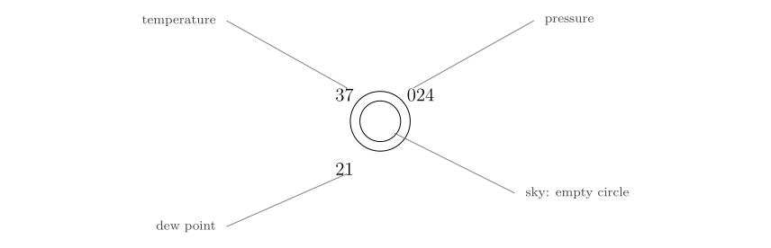
Model 1
Pressure: 024 \(\to\) 02.4 \(\to\) 1002.4 hPa\ Temperature: 37 \(^{\circ}\mathrm{F}\) (2.8 \(^{\circ}\mathrm{C}\))Dew point: 21 \(^{\circ}\mathrm{F}\) (\(-6.1\) \(^{\circ}\mathrm{C}\))\ Sky cover: empty circle: 0 % (clear). No staff, only a ring round the circle: calm. RH \(\approx52\,\%\).
Model 2¶
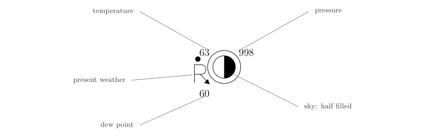
Model 2
Pressure: 998 \(\to\) 99.8 \(\to\) 999.8 hPa\ Temperature: 63 \(^{\circ}\mathrm{F}\) (17.2 \(^{\circ}\mathrm{C}\))Dew point: 60 \(^{\circ}\mathrm{F}\) (15.6 \(^{\circ}\mathrm{C}\))\ Current weather: thunder with intermittent rain. Sky half filled (5/10); no staff: calm. RH \(\approx90\,\%\).
Model 3¶
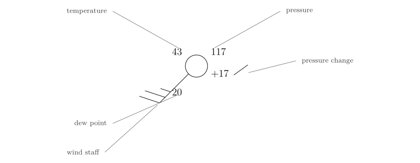
Model 3
Pressure: 117 \(\to\) 11.7 \(\to\) 1011.7 hPa\ Temperature: 43 \(^{\circ}\mathrm{F}\) (6.1 \(^{\circ}\mathrm{C}\))Dew point: 20 \(^{\circ}\mathrm{F}\) (\(-6.7\) \(^{\circ}\mathrm{C}\))Sky cover: empty circle, 0 %\ Wind: staff to the lower left: from the south-west; two full barbs and a half barb: 25 knots\ Pressure change: \(+17\): \(+1.7\) mb, rising
Model 4¶
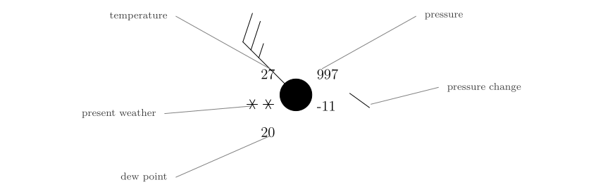
Model 4
Pressure: 997 \(\to\) 99.7 \(\to\) 999.7 mb\ Temperature: 27 \(^{\circ}\mathrm{F}\) (\(-2.8\) \(^{\circ}\mathrm{C}\))Dew point: 20 \(^{\circ}\mathrm{F}\) (\(-6.7\) \(^{\circ}\mathrm{C}\))\ Sky cover: filled circle, 100 %Current weather: continuous snow\ Wind: staff to the upper left: from the north-west, 25 knots\ Pressure change: \(-11\): \(-1.1\) mb, falling
| Model 1 | Model 2 | Model 3 | Model 4 | |
|---|---|---|---|---|
| Barometric pressure (mb) | 1002.4 | 999.8 | 1011.7 | 999.7 |
| Temperature (\(^{\circ}\mathrm{F}\)) | 37 | 63 | 43 | 27 |
| Dew point (\(^{\circ}\mathrm{F}\)) | 21 | 60 | 20 | 20 |
| Sky coverage (%) | 0 | 50 | 0 | 100 |
| Current weather | — | thunder, interm. rain | — | continuous snow |
| Wind speed (knots) | calm | calm | 25 | 25 |
| Wind direction (from) | — | — | south-west | north-west |
| Pressure change in 3 h (mb) | — | — | \(+1.7\) | \(-1.1\) |
| Tendency | — | — | rising | falling |
All four models decoded.
27.9 What the models tell you¶
Putting the numbers together gives each station a story.
-
Model 1: cold, dry (the dew point is 16 \(^{\circ}\mathrm{F}\) below the temperature), clear and calm: a cold, high-pressure night.
-
Model 2: warm and very humid (the dew point only 3 \(^{\circ}\mathrm{F}\) below the temperature), with thunder and rain: unstable, thundery air.
-
Model 3: clear and windy with rising pressure: air moving away from a low towards a high, after a front has passed.
-
Model 4: overcast, snowing, 27 \(^{\circ}\mathrm{F}\), wind 25 knots and falling pressure: a depression is arriving or overhead.
27.10 Try it yourself: Practice Set 27¶
Decode each of the three models in Figure 27.6 (pressure, temperature and dew point in \(^{\circ}\mathrm{F}\) and \(^{\circ}\mathrm{C}\), relative humidity, sky cover, weather, wind speed and direction, pressure change and tendency), then check against the answers below.

Figure 27.6. Three station models to decode.
Answers to Practice Set 27
-
150 \(\to\) 15.0 \(\to\) 1015.0 hPa. \(T=72\) \(^{\circ}\mathrm{F}\) (22.2 \(^{\circ}\mathrm{C}\)), \(T_d=65\) \(^{\circ}\mathrm{F}\) (18.3 \(^{\circ}\mathrm{C}\)), RH \(\approx79\,\%\). Sky: 2–3/10 (about 25 %). Wind: staff pointing straight down: from the south, one full barb and a half barb: 15 knots. Tendency: \(+21\) \(\to\) up 2.1 hPa, rising then steady. No weather symbol: fair, warm and humid.
-
975 (\(\ge500\)) \(\to\) 97.5 \(\to\) 997.5 hPa. \(T=48\) \(^{\circ}\mathrm{F}\) (8.9 \(^{\circ}\mathrm{C}\)), \(T_d=47\) \(^{\circ}\mathrm{F}\) (8.3 \(^{\circ}\mathrm{C}\)); RH \(\approx96\,\%\). Overcast (100 %). Continuous rain. Wind from the north-east, three full barbs and a half barb: 35 knots. Pressure \(-32\): down 3.2 hPa, falling steadily.
-
084 (\(<500\)) \(\to\) 08.4 \(\to\) 1008.4 hPa. \(T=5\) \(^{\circ}\mathrm{F}\) (\(-15\) \(^{\circ}\mathrm{C}\)), \(T_d=3\) \(^{\circ}\mathrm{F}\); RH \(\approx91\,\%\). Sky: 6/10. Continuous drizzle. Wind from the west, one full barb: 10 knots. Pressure \(-4\): down 0.4 hPa, rising then falling.
27.11 Station models in Python¶
These functions compute the equations of this chapter, and the book’s tests check them against its answers.
def fahrenheit_to_celsius(t_f):
"""Temperature in deg C from deg F."""
return (t_f - 32.0) * 5.0 / 9.0
def decode_pressure(code):
"""Sea-level pressure (hPa) from a three-digit station-model code."""
return (1000.0 if code < 500 else 900.0) + code / 10.0
def knots_to_ms(knots):
"""Wind speed in m/s from knots."""
return 0.514 * knots
decode_pressure(247) returns 1024.7 and decode_pressure(987) returns 998.7.
28. Streamlines¶
This chapter answers Map Q13.
28.1 What a streamline is¶
A wind barb tells you the wind at one station. A streamline joins the stations: it is a line that is everywhere parallel to the wind. If you could photograph a river with a long exposure, the streaks of floating leaves would be streamlines. On a map they show at a glance where the air is coming from, where it is going, and where it swirls, converges or spreads out.
-
At every point of a streamline, the line is tangent to the wind there.
-
Streamlines never cross, because the wind has only one direction at one place.
-
They begin at an upwind station and carry an arrow head downwind, usually where the flow changes direction.
-
They show direction only. Their spacing does not show speed unless you choose to draw them that way.
28.2 The method¶
-
Pick a starting point at an upwind station: one where the wind is blowing towards the area you want to follow.
-
Read the barb correctly. The staff points to where the wind comes from. The air moves the other way, away from the staff. A barb with its staff pointing to the lower left is a south-west wind and the streamline there runs towards the upper right.
-
Draw a short line in that direction and move downwind until you are near the next station.
-
Bend the line smoothly so that it follows the direction of the barb at the next station, then the next.
-
Continue until the stations run out or the flow leaves the map, then draw an arrow head at the downwind end.
-
Repeat from another starting point until you have the five or six streamlines the question asks for. Keep them smooth and make sure no two cross.
Worked example: a small flow
Twelve stations report winds from the south-west on the left of the map and from the west on the right (the staffs point lower-left on the left and to the left on the right). Starting at a left-hand station the air moves towards the north-east. As you move east the barbs rotate clockwise, so the streamline bends to the right and ends up heading east. Each line starts at a station and stays parallel to the barbs it passes.
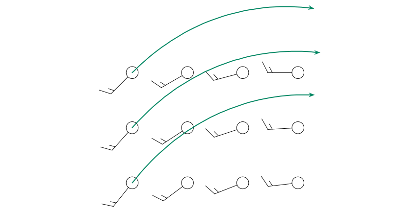
A question that comes up
How do I know whether to draw the arrow at the start or the end?\ At the downwind end: the end towards which the air is moving, that is, away from the stations’ barbs. A good test: put your pencil on the station, look at the barb, and ask “which way is this air going next?”
28.3 The stations¶
Figure 28.1 shows 34 stations in the central United States, plotted with only the sky cover and the wind barb. Each station numbered so that you can refer to it. Look at the barbs before you draw anything: where does the wind blow from in each part of the map?

Figure 28.1. The stations (circle for the sky cover, staff and barbs for the wind; station numbers in grey). The state outlines are real boundaries drawn in a Lambert conformal conic projection.
| Region | Stations | Wind from |
|---|---|---|
| Dakotas, Nebraska, Kansas, Oklahoma, north Texas | 1, 4, 12, 15, 21, 22, 25, 27, 30 | north-west (WNW–NW), about 10 knots |
| Iowa, Missouri (west of the low) | 5, 9, 16 | north-west to west-north-west, 10–25 knots |
| Southern Missouri, Arkansas, Texas (east), Mississippi, Alabama | 23, 28, 29, 31, 32, 33, 34 | south-south-west to west-south-west, about 10 knots |
| Illinois, Kentucky, Tennessee, Indiana (south) | 13, 17, 18, 19, 20, 24, 26 | south-south-west to south, 10–25 knots |
| Wisconsin, Michigan, Ohio, Indiana (north), northern Illinois | 2, 3, 6, 7, 8, 10, 11, 14 | north-east to south-east, 2–20 knots |
The wind by region (the staff points to where the wind comes from).
28.4 Question 13: the streamlines¶
The question
Streamlines begin at an upwind location and are drawn as long lines with an arrow where the wind shifts abruptly. Complete the analysis by drawing 5 to 6 streamlines to illustrate the general wind flow.
Two streamlines are drawn as examples. One runs south-east from near the Nebraska–Kansas border across Kansas into Oklahoma, in the north-westerly wind. The other starts in north Texas and curves north and then north-east through Arkansas and Missouri into Illinois, in the southerly wind.

Figure 28.2. The map completed. The two grey streamlines are the examples. The six green streamlines were drawn through the barbs of all 34 stations, starting upwind in the Dakotas, Kansas, Texas, Mississippi, Indiana and Michigan. They curve round a centre in Iowa and northern Illinois.
Answer to Map Q13
Five or six smooth lines, each starting upwind and ending with an arrow, such as those in Figure 28.2: north-westerly flow in the west curving south-east then east; southerly flow in the south curving north and then north-west; easterly flow in the north curving south-west. They all swirl anticlockwise and inwards towards one centre in Iowa and northern Illinois.
28.5 What the streamlines show¶
The pattern is the signature of a Northern Hemisphere low-pressure system (Chapter 26).
-
The wind is north-westerly to the west of the centre, southerly to the south and east of it, and easterly to the north: an anticlockwise circulation.
-
The streamlines curve inwards, because friction makes the air cross the isobars towards low pressure. They converge near the centre, so air must rise there: this is where the cloud and rain of Question 14 are.
-
The streamlines from the south carry warm, humid air northwards; those from the north-west carry cold, dry air southwards. Where the two meet are the fronts.
-
The centre of the swirl is where the pressure is lowest. The station reports confirm it: the lowest pressures on the map, 1002.4 and 1002.6 hPa, are at stations 8 and 9, next to the centre of the swirl.
28.6 Common mistakes¶
-
Drawing the arrow the wrong way round, along the staff rather than away from it. Always ask where the air is going.
-
Joining stations with straight segments instead of a smooth curve that follows every barb.
-
Letting streamlines cross. If two lines are about to cross you have misread a barb.
-
Starting downwind. A streamline needs a clear upwind start.
-
Forgetting the arrow heads. Put an arrow on every line.
28.7 Try it yourself: Practice Set 28¶
Practice Set 28: reading wind barbs
-
A station has its staff pointing to the right (east) with one full barb and a half barb. From which direction does the wind blow, how strong is it, and in which direction does a streamline through the station run?
-
The staff points to the top of the page (north) with two full barbs. State the wind and the direction of the streamline.
-
A station near the centre of a low shows a wind from the north-east, another to its east shows a wind from the south-east and another to its south a wind from the south-west. Is the circulation clockwise or anticlockwise?
-
In Figure 28.2 what is the wind at station 31 (south-west Texas)? What is the direction of the streamline there?
Answers to Practice Set 28
-
From the east, 15 knots; the streamline runs towards the west.
-
From the north, 20 knots; the streamline runs towards the south.
-
Going from the north-east side, to the east, to the south the winds are from NE, SE, SW. A wind from the NE blows to the SW, from the SE to the NW, from the SW to the NE: the air circles anticlockwise, as round a Northern Hemisphere low.
-
Station 31 shows a wind from the west-south-west (255\(^{\circ}\)) of about 10 knots. The streamline there runs towards the east-north-east (it is the start of the north-easterly curve in the figure).
29. Fronts and the weather map¶
This chapter answers Map Q14.
29.1 Air masses and fronts¶
An air mass is a very large body of air, hundreds of kilometres across, whose temperature and humidity are much the same throughout. It takes on the character of the surface it has rested on: air that has sat over a cold, dry continent is cold and dry; air from the tropical ocean is warm and humid. A front is the boundary between two unlike air masses. You can recognise one by any of the following:
-
a sharp change of temperature;
-
a sharp change of moisture (the dew point);
-
a sharp change of wind direction.
Fronts are classified by how they move.
Warm front
A warm air mass advances over a cooler one. Drawn as a red line with semicircles pointing the way the front moves.
Cold front
A cold air mass advances under a warmer one. Drawn as a blue line with triangles pointing the way the front moves.
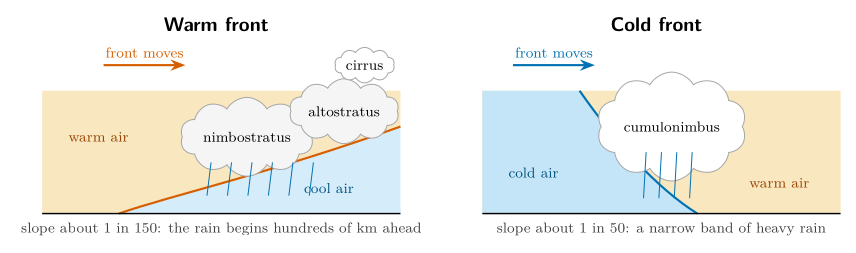
Figure 29.1. Cross-sections through a warm front (left) and a cold front (right), with the vertical scale greatly exaggerated. In both the front is a sloping surface along which the warm air rises over the cold air.
| Warm front | Cold front | |
|---|---|---|
| Before | pressure falls; cloud thickens from cirrus to nimbostratus; wind backs to south-east | pressure falls; warm, humid, south-westerly wind |
| Passage | steady rain or drizzle; wind veers to south-west; temperature rises | heavy showers, perhaps thunder; wind veers sharply to north-west |
| After | warm, humid air, cloud breaks; pressure steady | colder, drier air; pressure rises; clearing sky |
What happens as each kind of front passes a station in the Northern Hemisphere.
Wind veering. Notice that in both cases the wind veers, that is, turns clockwise, as the front passes. Notice how the wind direction shifts at the frontal boundary.
29.2 A low with a warm front and a cold front¶
Figure 29.2 shows a low-pressure centre (L) with a warm front curving east and south from it and a cold front trailing to the south-west. Four stations sample the air round them, which gives a small case in which to learn how to read a front before tackling the whole map.
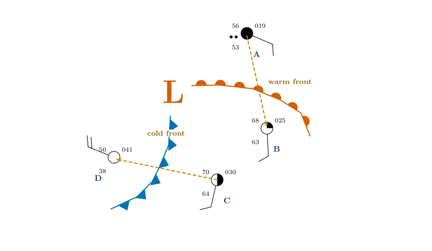
Figure 29.2. Station A is north of the warm front, B and C are in the warm sector between the fronts, D is behind the cold front. The dashed orange arrows mark the two crossings studied below: C to D across the cold front, and A to B across the warm front.
| Stn | Temp. (\(^{\circ}\mathrm{F}\)) | Dew pt (\(^{\circ}\mathrm{F}\)) | RH (%) | p (hPa) | Wind from | Sky |
|---|---|---|---|---|---|---|
| A | 56 | 53 | 90 | 1001.9 | ESE 10 kt | overcast, rain |
| B | 68 | 63 | 84 | 1002.5 | S 10 kt | 2–3/10 |
| C | 70 | 64 | 81 | 1003.0 | SSW 10 kt | 5/10 |
| D | 50 | 38 | 63 | 1004.1 | WNW 20 kt | clear |
The four stations of Figure 29.2.
-
The warm sector (B and C). The air between the fronts is warm (68 and 70 \(^{\circ}\mathrm{F}\)) and humid (dew points 63 and 64 \(^{\circ}\mathrm{F}\), relative humidity above 80 %), and the wind is from the south.
-
Behind the cold front (D). The air is cooler (50 \(^{\circ}\mathrm{F}\)), much drier (dew point 38 \(^{\circ}\mathrm{F}\), RH 63 %), the sky is clear and the wind has swung to the west-north-west.
-
Crossing the cold front, C to D. The temperature falls 20 \(^{\circ}\mathrm{F}\), the dew point falls 26 \(^{\circ}\mathrm{F}\), the wind turns from south-south-west (193\(^{\circ}\)) to west-north-west (292\(^{\circ}\)): clockwise by about \(100\ensuremath{^{\circ}}\). The pressure rises and the cloud clears.
-
Crossing the warm front, A to B. The temperature rises 12 \(^{\circ}\mathrm{F}\), the dew point 10 \(^{\circ}\mathrm{F}\), and the wind turns from east-south-east (113\(^{\circ}\)) to south (177\(^{\circ}\)): clockwise by about \(64\ensuremath{^{\circ}}\). The sky changes from overcast and raining to almost clear.
What the four stations teach
A front is marked by simultaneous changes of temperature, moisture and wind. At both fronts the wind veers (turns clockwise). The cold front brings the bigger changes in temperature and dew point; the warm front brings the continuous rain.
29.3 Question 14: the full analysis¶
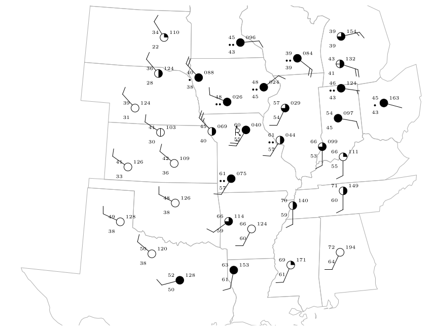
Figure 29.3. The 34 stations with all their values: temperature, dew point, pressure, weather, sky cover and wind. They are listed in Appendix C.2.
The question
Using the map of Figure 29.3: draw isobars at 4 mb intervals (e.g. 1004, 1008, 1012 mb); label the low-pressure centre with an “L”; draw the warm and cold fronts; outline the area where cloud cover exceeds 75 %; shade the areas receiving precipitation.
Figure 29.3 shows the same 34 stations as Figure 28.1, but with all the numbers: temperature, dew point, pressure and weather, as well as the sky cover and the wind. The recommended order is the order of the bullets; each step helps the next.
29.3.1 Step 0: read the pressures¶
Decode every pressure with the rule of Chapter 27 (a three-digit number below 500 gets 10 in front, otherwise 9), and write the full value next to each station.
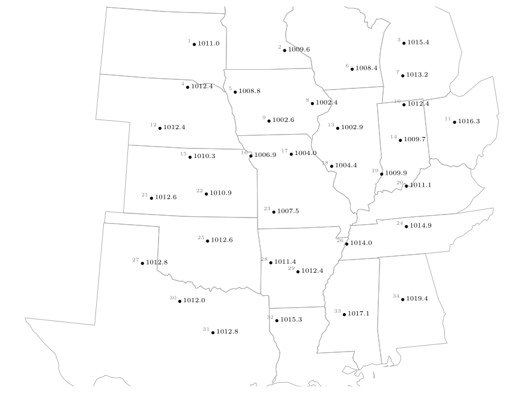
Figure 29.4. Step 0: the decoded sea-level pressures (hPa) at the 34 stations. The lowest values, 1002.4 and 1002.6, are in Iowa and Illinois (stations 8 and 9); the highest, 1019.4, is in Alabama (station 34).
29.3.2 Step 1: isobars every 4 mb¶
The isobars are 1004, 1008, 1012, 1016 and 1020 mb. (The lowest pressure is 1002.4, so there is no 1000 mb isobar. The highest, 1019.4 in Alabama, falls just short of 1020; the 1020 isobar lies a little beyond it, where the trend continues, and may be left out.)
Method: interpolating.
-
Look at two neighbouring stations and ask whether a multiple of 4 lies between their pressures.
-
If it does, find where it falls on the straight line between them in proportion.
-
Mark that point. Do it for every pair of neighbours.
-
Join the points of equal value with a smooth curve. Do the same for the next value.
Worked example: where does 1008 mb cross between stations 18 and 19?
Station 18 reads 1004.4 hPa and its neighbour station 19 reads 1009.9 hPa. The pressure changes by \(1009.9-1004.4=5.5\) hPa between them, and 1008 is \(1008-1004.4=3.6\) hPa above the first station:
The 1008 mb isobar crosses the line joining the stations 65 % of the way from station 18 towards station 19.
| Stations | Pressures (hPa) | Isobar | Calculation | Fraction |
|---|---|---|---|---|
| 9 and 5 | 1002.6, 1008.8 | 1004 | \((1004-1002.6)/6.2\) | 23 % |
| 9 and 5 | 1002.6, 1008.8 | 1008 | \((1008-1002.6)/6.2\) | 87 % |
| 16 and 5 | 1006.9, 1008.8 | 1008 | \((1008-1006.9)/1.9\) | 58 % |
| 20 and 24 | 1011.1, 1014.9 | 1012 | \((1012-1011.1)/3.8\) | 24 % |
More interpolations to practise on.
Rules for drawing isobars
-
Isobars are smooth curves. Each connects points of exactly the same pressure.
-
Isobars never cross and never branch.
-
They never end inside the map: they either close into a loop (round a low or a high) or leave the map edge.
-
The pressure rises or falls in steps of 4 mb from one isobar to the next; if the next isobar is much further away the gradient is gentle there.
-
Label each isobar with its value.
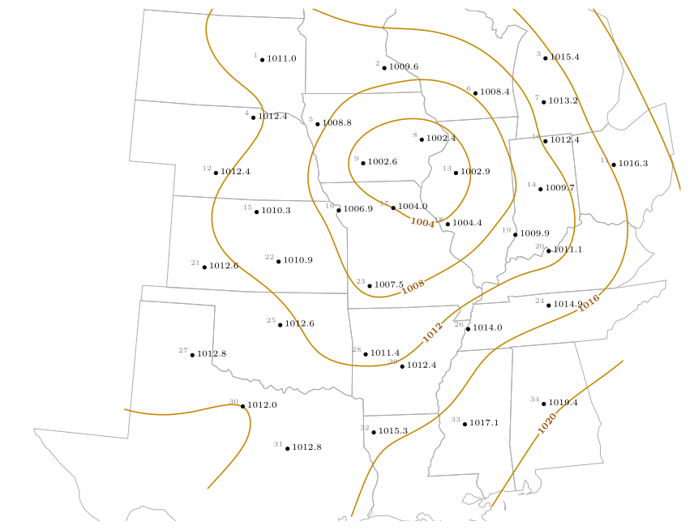
Figure 29.5. Step 1: isobars at 4 mb intervals through the station pressures. The 1004 mb isobar closes round the lowest pressures; the 1008 and 1012 mb isobars follow it outwards; 1016 and 1020 mb lie to the east and south-east. (The curves here were drawn as a smooth surface through all 34 pressures.)
29.3.3 Step 2: the L¶
The low-pressure centre is where the isobars close round the lowest pressure. The two lowest pressures on the map are 1002.4 hPa (station 8, northern Illinois) and 1002.6 hPa (station 9, Iowa). The 1004 mb isobar encloses them, together with stations 13 and 17 (1002.9 and 1004.0). Write the L between stations 8 and 9, near the centre of the closed isobar, at about 1002 hPa.
Answer: the L
The L goes in northern Illinois and eastern Iowa, between stations 8 and 9, in the middle of the innermost isobar. It is also the centre of the swirl of streamlines you drew in Question 13.
29.3.4 Step 3: the fronts¶
A front lies where the temperature, the dew point and the wind direction change rapidly. Compare pairs of neighbouring stations: if two neighbours differ strongly in all three, a front runs between them.
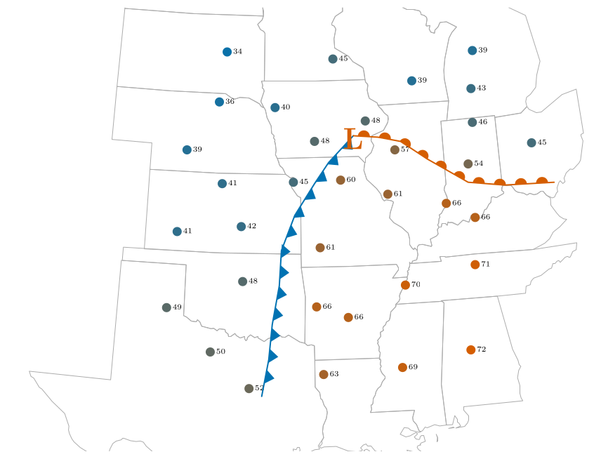
Figure 29.6. Step 3: air temperature (\(^{\circ}\mathrm{F}\)) at each station, coloured from blue (cold, 32 \(^{\circ}\mathrm{F}\)) to red (warm, 72 \(^{\circ}\mathrm{F}\)). The warm air fills the south-east and a tongue reaches towards the low: the warm sector. Cold air covers the north-west. The cold front (blue, triangles) separates them in the west; the warm front (red, semicircles) in the east.
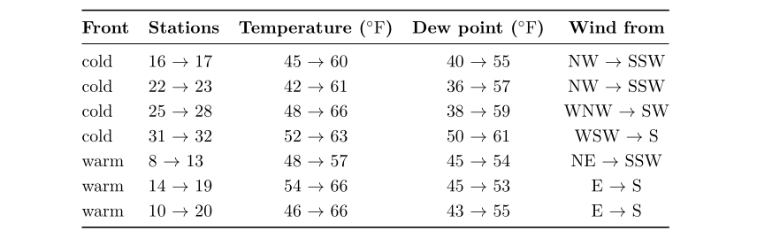
The cold front. West of the low, the stations behind the front are cool (42 to 52 \(^{\circ}\mathrm{F}\)), drier (dew points 36 to 50 \(^{\circ}\mathrm{F}\)) and have winds from the west to north-west; those ahead are warm (60 to 66 \(^{\circ}\mathrm{F}\)), humid (dew points 55 to 61 \(^{\circ}\mathrm{F}\)) and have winds from the south-south-west to south-west. The pairs 16–17, 22–23, 25–28 and 31–32 straddle it, with temperature jumps of 11 to 19 \(^{\circ}\mathrm{F}\). The front runs from the low towards the south-south-west, down through Missouri, Arkansas and east Texas.
The warm front. East of the low, the stations north of the front are cool (46 to 54 \(^{\circ}\mathrm{F}\)) with winds from the north-east or east; those south of it are warm (57 to 66 \(^{\circ}\mathrm{F}\)) with winds from the south. The pairs 8–13, 14–19 and 10–20 straddle it, with temperature jumps of 9 to 20 \(^{\circ}\mathrm{F}\)and the wind turning from east or north-east to south. The front runs east from the low through Indiana and Ohio.
Answer: the fronts
A cold front (blue, with triangles pointing east, the way it moves) from the L towards the south-south-west to Texas; a warm front (red, with semicircles pointing north-east) from the L eastwards through Indiana and Ohio. The warm sector, the wedge of warm air between them, lies to the south-east.
29.3.5 Step 4: cloud cover above 75 %¶
Cloud cover above 75 % means the stations drawn with a three-quarters, nine-tenths or completely filled circle. Looking at the sky circles: stations 2, 5, 6, 8, 9, 10, 11, 14, 17, 23, 31 and 32 are completely overcast; stations 3, 13, 19 and 28 have 7 to 8 tenths. Draw a line round the group, including the area between them. The result is a broad area wrapped round the low and extending along the cold front to the south-west.
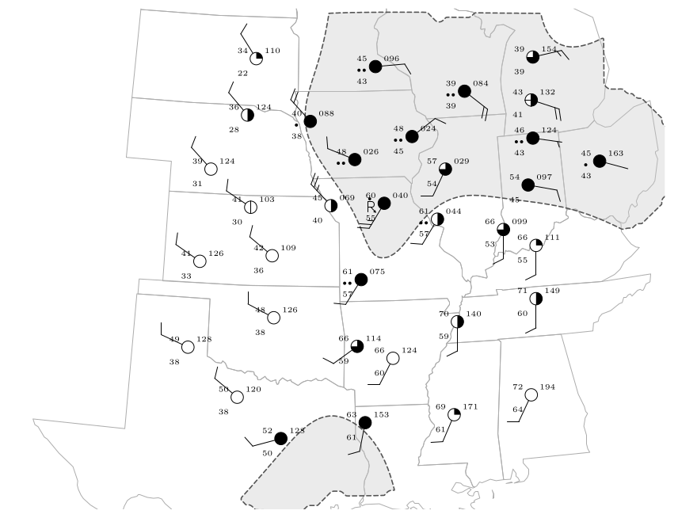
Step 4: the area where the cloud cover exceeds 75 % (dashed outline and grey tint). It wraps round the low on its north and east sides and tails away to the south-west along the cold front.
29.3.6 Step 5: the precipitation¶
Shade round every station that reports precipitation: the weather symbol is a dot or two dots (rain), or the thunderstorm symbol with a dot. These are stations 2, 5, 6, 8, 9, 10, 11, 17, 18 and 23: a band to the north and east of the low, along the warm front, and a narrow band along the cold front in Missouri.
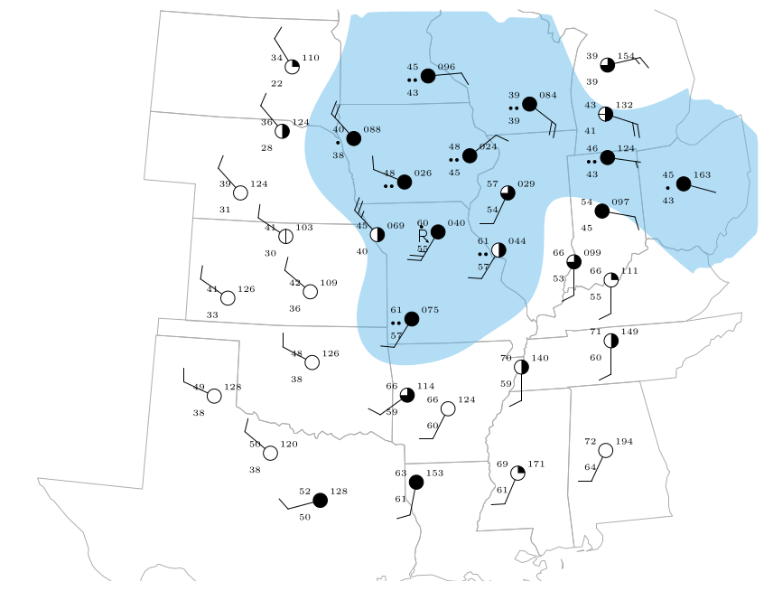
Step 5: the areas receiving precipitation (blue shading) at the ten stations that report rain or thunderstorms.
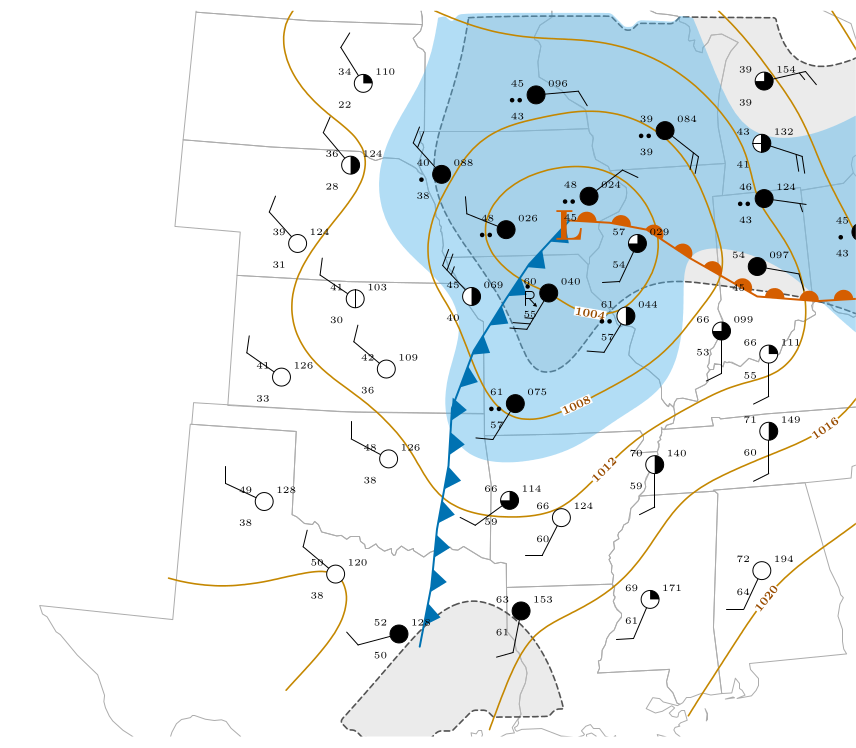
Figure 29.9. Question 14 complete: isobars every 4 mb (orange), the low (L), the cold front (blue triangles) and the warm front (red semicircles), the area with more than 75 % cloud (dashed outline) and the precipitation (blue shading), over the 34 stations. The state outlines are real boundaries. The fronts are an interpretation, drawn from the temperature, dew-point and wind contrasts.
29.4 Reading the finished picture¶
The map is a text-book mid-latitude depression.
-
The low is over Iowa and northern Illinois, at about 1002 hPa.
-
The warm sector is the tongue of warm, humid air in the south and east, between the two fronts: temperatures in the 60s and 70s \(^{\circ}\mathrm{F}\) and dew points of 55 to 64 \(^{\circ}\mathrm{F}\).
-
The cold air in the north-west is dry (dew points of 22 to 38 \(^{\circ}\mathrm{F}\)) and mostly clear.
-
The cloud and rain are on the fronts and near the low, where the air is being lifted.
-
The winds circle the low anticlockwise (Chapter 28) and cross the isobars towards low pressure (Chapter 26).
Worked example: is the wind consistent with the isobars?
Between stations 9 (1002.6 hPa) and 5 (1008.8 hPa), about 216 km apart, the pressure changes by 6.2 hPa. The geostrophic wind for that gradient at 41.5\(^{\circ}\)N (\(f=9.7\times10^{-5}\) s\(^{-1}\)) is
The observed surface winds are 10 to 25 knots. That is about what friction does: it slows the surface wind to a half or two thirds of the geostrophic value and turns it across the isobars (Chapter 26).
29.5 Questions that come up¶
A question that comes up
Where exactly should I put the front?\ There is no single right answer: a front analysis is an interpretation. Put the line along the zone where the temperature, dew point and wind change fastest, bend it to follow the stations, and begin it at the low. Check that the stations on the cold side are colder and drier than those on the warm side.
A question that comes up
Why do the isobars bend sharply where a front crosses them?\ Because the wind changes direction at a front, and the wind follows the isobars, the isobars must change direction there too. A front lies along a trough of low pressure, with the isobars forming a V pointing away from the low.
A question that comes up
Which stations count as “cloud above 75 %”?\ Those whose circle is filled to at least three quarters: 7–8 tenths, 9 tenths (filled with a gap) or overcast. Stations with half or less are outside the outline.
29.6 Try it yourself: Practice Set 29¶
Practice Set 29: fronts and isobars
-
Stations X (1011.1 hPa) and Y (1014.9 hPa) are neighbours. Where does the 1012 mb isobar cross the line between them?
-
A station reports a temperature of 61 \(^{\circ}\mathrm{F}\), a dew point of 57 \(^{\circ}\mathrm{F}\) and a south-south-west wind of 10 knots. A neighbour to its west reports 42 \(^{\circ}\mathrm{F}\), 36 \(^{\circ}\mathrm{F}\) and a north-west wind. What kind of front lies between them?
-
Station P is 30 \(^{\circ}\mathrm{F}\) with dew point 28 \(^{\circ}\mathrm{F}\), east wind, overcast and snow. Station Q to the south is 41 \(^{\circ}\mathrm{F}\) with dew point 38 \(^{\circ}\mathrm{F}\) and south-east wind. Is a warm or cold front likely to lie between them? Why?
-
Why is there no 1000 mb isobar on Figure 29.3?
Answers to Practice Set 29
-
\((1012-1011.1)/(1014.9-1011.1)=0.9/3.8=0.24\): 24 % of the way from X to Y.
-
A cold front: the temperature falls 19 \(^{\circ}\mathrm{F}\), the dew point 21 \(^{\circ}\mathrm{F}\), and the wind turns clockwise from south-south-west to north-west as you cross it from east to west.
-
A warm front: the warmer, moister air (41 \(^{\circ}\mathrm{F}\), 38 \(^{\circ}\mathrm{F}\)) lies to the south with a south-east wind, riding over the colder air with east wind to the north, where it is snowing. The wind turns clockwise from east to south-east.
-
No station reports a pressure as low as 1000 hPa (the lowest is 1002.4), and an isobar should only be drawn where the data support it.
30. Putting Part III together¶
30.1 One chain of ideas¶
The three sections of this part are one argument, and they close the argument begun in Parts I and II:
-
Air holds water vapour up to a limit set by its temperature. Relative humidity compares the vapour with that limit; the mixing ratio and the dew point measure the vapour itself, and cooling air to its dew point makes dew, fog or cloud (Moisture Q1–Q6, Chapters 21 and 22).
-
Warm air columns are taller than cold ones (the scale-height law of Part I, Chapter 3), so pressure surfaces slope down from the warm tropics towards the cold poles, more steeply with height (Motion Q1–Q6, Chapter 24). The uneven warming that causes this is the sun-angle effect of Part II (Chapter 18).
-
The slope produces a pressure gradient force; on a rotating Earth the Coriolis force turns the moving air until the two balance and the wind blows along the isobars, the geostrophic wind (Motion Q7, Chapter 25).
-
Near the ground friction slows the wind and turns it across the isobars towards low pressure, so air spirals into lows, rises, and forms cloud and rain (Motion Q8–Q11, Chapter 26).
-
A weather map shows all of this at once: station models record the observations, streamlines show the flow, and isobars, fronts, cloud and rain show the weather systems it organises (Map Q12–Q14, Chapters 27 to 29).
30.2 All the answers in one table¶
| Question | Answer | Ch. |
|---|---|---|
| Moisture Q1 | RH \(=49.3\), \(88.8\), \(26.0\), \(10.4\), \(19.9\,\%\) | 21 |
| Moisture Q2 | Humidity falls sharply: the vapour content is unchanged but the capacity of the warmer air is much larger | 21 |
| Moisture Q3 | Mixing ratios \(9.126\), \(8.974\), \(7.684\), \(11.078\), \(10.54\,\ensuremath{\mathrm{g\,kg^{-1}}}\); ranks \(3,4,5,1,2\) | 21 |
| Moisture Q4 | RH does not say how much vapour is actually in the air | 21 |
| Moisture Q5 | Dew point \(\approx14\,\ensuremath{^{\circ}\mathrm{C}}\) (\(13.8\)) | 22 |
| Moisture Q6 | \(w_s=35.134\,\ensuremath{\mathrm{g\,kg^{-1}}}\); \(w=21.78\,\ensuremath{\mathrm{g\,kg^{-1}}}\); dew point \(\approx26\,\ensuremath{^{\circ}\mathrm{C}}\) | 22 |
| Motion Q1 | Lines 5400\(\to\)5700 m (500 mb) and 8700\(\to\)9500 m (300 mb) | 24 |
| Motion Q2 | Saskatoon | 24 |
| Motion Q3 | Saskatoon is colder at each height; the cold column is thinner | 24 |
| Motion Q4 | z has the higher pressure: H at z (Monterrey side), L at x; arrow from z to x | 24 |
| Motion Q5 | At 9000 m (800 m against 140 m of slope) | 24 |
| Motion Q6 | Wind speeds are greater at 9000 m | 24 |
| Motion Q7 | North: H at 5520 m, L at 5460 m; south: H at 5640 m, L at 5580 m; force arrow to L, Coriolis arrow to H, wind between them | 25 |
| Motion Q8 | The Coriolis force is weakened, because it depends on wind speed | 26 |
| Motion Q9 | Red up (to low pressure), black up-right, blue down-right (right of wind), green down-left (against wind) | 26 |
| Motion Q10 | NH low, NH high, SH low, SH high (examples a to d) | 26 |
| Motion Q11 | On each box: red along the line to or from the centre; blue at right angles to the wind (right in the north, left in the south); green against the wind | 26 |
| Map Q12 | Model 1: 1002.4, 37, 21, 0 %. Model 2: 999.8, 63, 60, thunder with intermittent rain. Model 3: 1011.7, 43, 20, 0 %, 25 kt from SW, \(+1.7\), rising. Model 4: 999.7, 27, 20, 100 %, continuous snow, 25 kt from NW, \(-1.1\), falling | 27 |
| Map Q13 | Five or six smooth streamlines swirling anticlockwise round a centre in Iowa and Illinois | 28 |
| Map Q14 | Isobars at 4 mb; L in northern Illinois/Iowa; cold front to the south-south-west, warm front to the east; cloud above 75 % wrapped round the low; rain north and east of the low and along the cold front | 29 |
Table 30.1. Every answer of Part III, with the chapter where it is worked out.
30.3 Mistakes to avoid¶
-
Ranking by relative humidity instead of the actual mixing ratio (Moisture Q3).
-
Reading the dew point from the wrong row of Table 21.1, or at the wrong temperature: always check that the air could hold at least the sample’s vapour at the temperature you give (Moisture Q6: 26, not 25).
-
Putting H and L the wrong way round on the pressure surfaces: the lower pressure surface (colder column) is the L (Motion Q4).
-
Drawing the Coriolis force to the wrong side: right in the north, left in the south, always at right angles to the wind.
-
Drawing the pressure gradient force away from low pressure. It points towards low pressure.
-
Forgetting that the staff of a wind barb points to where the wind comes from (Map Q12 and Q13).
-
Mis-reading the pressure code: 998 is 999.8, not 1099.8 or 998.0 (Map Q12).
-
Isobars that cross, or that stop in the middle of the map (Map Q14).
30.4 Self-test¶
Try these first. The answers follow.
Self-test: one line each
-
Air at 20 \(^{\circ}\mathrm{C}\) has a mixing ratio of 7.5 \(\mathrm{g\,kg^{-1}}\). What is its relative humidity?
-
That air is cooled to 10 \(^{\circ}\mathrm{C}\). What is its relative humidity now, and what is its dew point?
-
Which holds more water vapour: air at 35 \(^{\circ}\mathrm{C}\) with RH 30 %, or air at 25 \(^{\circ}\mathrm{C}\) with RH 60 %?
-
Find the dew point of air at 30 \(^{\circ}\mathrm{C}\) and RH 50 %, and the height at which cloud would form if it were lifted.
-
True or false: the dew point can be higher than the air temperature. Explain.
-
Why do pressure surfaces slope down towards cold air?
-
The 300 mb surface is at 8700 m over place S and 9500 m over place M. In which direction does the pressure gradient force act at 9000 m?
-
Two 500 hPa height lines 90 m apart are 600 km apart at 35\(^{\circ}\)N. Find the geostrophic wind.
-
In the Southern Hemisphere a wind blows towards the west. Where is the low pressure, to its north or south?
-
What does friction do to (a) the speed and (b) the direction of the surface wind?
-
Over land the surface wind is 8 \(\mathrm{m\,s^{-1}}\) and crosses the isobars at 40\(^{\circ}\). Estimate the geostrophic wind.
-
Air spirals inward and clockwise. Which hemisphere, which pressure system?
-
Decode the pressure codes 087 and 962.
-
Convert 50 \(^{\circ}\mathrm{F}\) and 14 \(^{\circ}\mathrm{F}\) to \(^{\circ}\mathrm{C}\).
-
A wind barb has two full barbs and one pennant. What is the speed?
-
Behind a front the temperature falls 18 \(^{\circ}\mathrm{F}\) and the wind turns clockwise from south-west to north-west. Which kind of front?
-
A staff points to the north-east. In which direction does the air move?
-
The 1012 mb isobar lies between stations at 1009.6 and 1013.2 hPa. Where?
-
Why does a strong wind go with closely spaced isobars?
-
What can relative humidity not tell you?
Answers to the self-test
-
\(7.5/14.956=50\,\%\).
-
\(w_s(10)=7.762\): RH \(=7.5/7.762=97\,\%\). Dew point: Table 21.1 gives 6.771 at 8 \(^{\circ}\mathrm{C}\) and 7.762 at 10 \(^{\circ}\mathrm{C}\), so \(T_d=8+2(7.5-6.771)/(7.762-6.771)=9.5\,\ensuremath{^{\circ}\mathrm{C}}\).
-
\(w_s(35)\approx37.3\) gives \(0.30\times37.3=11.2\,\ensuremath{\mathrm{g\,kg^{-1}}}\); \(w_s(25)\approx20.5\) gives \(0.60\times20.5=12.3\,\ensuremath{\mathrm{g\,kg^{-1}}}\). The 25 \(^{\circ}\mathrm{C}\) air holds more.
-
\(w=0.5\times27.694=13.85\,\ensuremath{\mathrm{g\,kg^{-1}}}\): between 18 \(^{\circ}\mathrm{C}\) (13.162) and 20 \(^{\circ}\mathrm{C}\) (14.956), \(T_d=18+2(13.85-13.162)/1.794=18.8\,\ensuremath{^{\circ}\mathrm{C}}\). Cloud base \(\approx125\times(30-18.8)=1400\) m.
-
False (in open air): it would mean the air is oversaturated and the surplus vapour would condense at once. At most \(T_d=T\) at saturation.
-
Cold air is denser, so a column of it is thinner: the same pressure drop uses up less height, so the pressure surfaces are lower over cold air.
-
From the high (the 300 mb surface is higher over M, so z over M has the higher pressure) to the low: from M towards S.
-
\(f=2\times7.292\times10^{-5}\sin35\ensuremath{^{\circ}}=8.37\times10^{-5}\); \(V_g=\dfrac{9.81\times90}{8.37\times10^{-5}\times6\times10^{5}}=17.6\,\ensuremath{\mathrm{m\,s^{-1}}}\) (34 kt).
-
To the north: in the Southern Hemisphere the low is on the right of the wind (Buys-Ballot), and the right of a westward wind is north.
-
\(a\) It reduces the speed. (b) It turns the wind across the isobars towards low pressure.
-
\(V=V_g\cos\alpha\), so \(V_g=8/\cos40\ensuremath{^{\circ}}=10.4\,\ensuremath{\mathrm{m\,s^{-1}}}\).
-
Inward and clockwise: Southern Hemisphere low.
-
\(087\to1008.7\) hPa; \(962\to996.2\) hPa.
-
\(50\,\ensuremath{^{\circ}\mathrm{F}}=10\,\ensuremath{^{\circ}\mathrm{C}}\); \(14\,\ensuremath{^{\circ}\mathrm{F}}=-10\,\ensuremath{^{\circ}\mathrm{C}}\).
-
\(2\times10+50=70\) knots.
-
A cold front.
-
The air moves towards the south-west.
-
\((1012-1009.6)/(1013.2-1009.6)=0.67\): two thirds of the way from the lower to the higher station.
-
Close isobars mean a large pressure gradient force, which needs a large wind to balance it with the Coriolis force (and friction).
-
How much vapour is actually in the air (or how the air compares with air at another temperature): it only compares the vapour with the capacity at the present temperature.
30.5 A checklist¶
-
I can look up, and interpolate, in Table 21.1.
-
I can find an RH, a mixing ratio and a dew point from any two of \(T\), \(w\), RH.
-
I can explain why pressure surfaces slope and why wind increases with height.
-
I can draw the three forces correctly in both hemispheres.
-
I can name the four systems of Figure 26.5 from their rotation.
-
I can decode a station model: pressure, temperature, dew point, sky, wind, weather, tendency.
-
I can draw streamlines (arrows downwind) and isobars (interpolating, never crossing).
-
I can say how to recognise a front, and which way the wind turns across it.
A. Part I: formulas, derivations and symbols¶
A.1 Formulas¶
Every formula used in Part I, with the equation number where it is introduced and explained.
| Quantity | Formula | Where, and what for |
|---|---|---|
| Ideal gas law | \(p=\rho R_dT\) | Eq. (3.1); density from pressure and temperature (Q13) |
| Hydrostatic balance | \(\Delta p/\Delta z=-\rho g\) | Eq. (3.2); why pressure falls with height |
| Exponential pressure | \(p=p_0e^{-z/H}\), \(H=R_dT/g\) | Eq. (3.3); scale height (Q1, Q12) |
| Fraction of the atmosphere above | \(f=2^{-z/5.6}\) (\(z\) in km) | Eq. (3.4); Q1, Q3 |
| After \(n\) halvings | \(f_n=1/2^{n}\) | Eq. (3.5); Table 3.1 |
| Pressure from the fraction | \(p=1000\,f\) hPa | Eq. (3.6); Q2, Q3 |
| Partial pressure of oxygen | \(p_{\mathrm{O_2}}=0.21\,p\) | Eq. (4.1); Q4 |
| Lapse rate | \(\Gamma=-\Delta T/\Delta z\) | Eq. (5.1); Q5, Q7–Q10 |
| Standard atmosphere | \(T=15-6.5\,z\) to 11 km, then \(-56.5\) \(^{\circ}\mathrm{C}\) | Eq. (5.2); Q5 |
| Scale height from data | \(H=(z_2-z_1)/\ln(p_1/p_2)\) | Eq. (8.1); Q12 |
| Dry adiabatic lapse rate | \(\Gamma_d=g/c_p=9.8\) \(^{\circ}\mathrm{C\,km^{-1}}\) | Eq. (8.2); Q13 |
| Potential temperature | \(\theta=T(1000/p)^{0.286}\) | Eq. (8.3); Q13 |
| Kelvin and Celsius | \(T_{\mathrm{K}}=T_{\ensuremath{^{\circ}\mathrm{C}}}+273.15\) | § 1.3 |
A.2 Derivations for the curious¶
A.2.1 Pressure falls exponentially with height¶
Start from hydrostatic balance, Eq. (3.2), written for a very thin layer, \(dp/dz=-\rho g\), and replace the density using the gas law, Eq. (3.1), \(\rho=p/(R_dT)\):
The rate of fall of \(p\) is proportional to \(p\) itself. If \(T\) (and so \(H\)) is taken as constant, integrating from sea level (\(z=0\), \(p=p_0\)) to height \(z\) gives \(\ln(p/p_0)=-z/H\), that is
which is Eq. (3.3). The pressure halves when \(e^{-z/H}=\tfrac12\), at \(z_{1/2}=H\ln2=0.693\,H\); the 5.6 km corresponds to \(H=8.08\) km. Writing the same law for two levels and dividing, \(p_1/p_2=e^{(z_2-z_1)/H}\), so \(\ln(p_1/p_2)=(z_2-z_1)/H\): rearranged, this is Eq. (8.1), which gives the scale height of a layer from two lines of a sounding.
Without calculus. Divide the atmosphere into thin slabs, each \(\Delta z\) thick. By Eqs. (3.2) and (3.1), crossing one slab lowers the pressure by \(\Delta p=\rho g\,\Delta z=p\,\Delta z/H\): the same fraction \(\Delta z/H\) of whatever pressure there is. Removing the same fraction again and again is exactly what an exponential does.
A.2.2 The dry adiabatic lapse rate and potential temperature¶
The first law of thermodynamics for one kilogram of air says that heat added goes into warming the air and into the work it does as it expands: \(dq=c_p\,dT-dp/\rho\). In an adiabatic process no heat is added, \(dq=0\), so
For air moving vertically through an atmosphere in hydrostatic balance, \(dp=-\rho g\,dz\), Eq. (3.2). Substituting,
which is Eq. (8.2): dry air cools by 9.8 \(^{\circ}\mathrm{C}\) per km as it rises and warms by the same amount as it sinks. Alternatively, dividing \(c_p\,dT=dp/\rho\) by \(T\) and using \(1/\rho=R_dT/p\) gives \(c_p\,dT/T=R_d\,dp/p\); integrating from \((T,p)\) to \((\theta,1000\ \ensuremath{\mathrm{hPa}})\),
which is Eq. (8.3), with \(R_d/c_p=287/1004=0.286\) (Wallace and Hobbs 2006, ch. 3).
A.3 Symbols¶
| \(\textbf{Symbol}\) | Meaning | Unit | First used |
|---|---|---|---|
| \(\textbf{Symbol}\) | Meaning | Unit | First used |
| \(c_p\) | specific heat of dry air at constant pressure | J kg\(^{-1}\) K\(^{-1}\) | Eq. (8.2) |
| \(f\) | fraction of the atmosphere above a height | – | Eq. (3.4) |
| \(g\) | acceleration due to gravity | m s\(^{-2}\) | Eq. (3.2) |
| \(\Gamma\) | lapse rate | \(^{\circ}\mathrm{C\,km^{-1}}\) | Eq. (5.1) |
| \(\Gamma_d\) | dry adiabatic lapse rate | \(^{\circ}\mathrm{C\,km^{-1}}\) | Eq. (8.2) |
| \(H\) | scale height | km | Eq. (3.3) |
| \(p\) | pressure | hPa or Pa | Eq. (3.1) |
| \(p_0\) | pressure at sea level | hPa | Eq. (3.3) |
| \(p_{\mathrm{O_2}}\) | partial pressure of oxygen | hPa | Eq. (4.1) |
| \(R_d\) | gas constant for dry air | J kg\(^{-1}\) K\(^{-1}\) | Eq. (3.1) |
| \(\rho\) | density of the air | kg m\(^{-3}\) | Eq. (3.1) |
| \(T\) | temperature | K or \(^{\circ}\mathrm{C}\) | Eq. (3.1) |
| \(\theta\) | potential temperature | K | Eq. (8.3) |
| \(x_{\mathrm{O_2}}\) | fraction of the molecules that are oxygen | – | Eq. (4.1) |
| \(z\) | height above sea level | m or km | Eq. (3.2) |
Table A.1. The symbols used in Part I. Each equation’s own where list repeats the symbols it uses.
A.4 About the figures and the data¶
Every figure in Part I was drawn for it in the document itself with TikZ and pgfplots, from the data and the equations in the text.
-
The halving-rule curves (Figures 3.2 and 4.1) are Eq. (3.4); the dashed comparison curve and the layered profile of Figure 5.1 are the U.S. Standard Atmosphere (NOAA et al. 1976).
-
The soundings (Figures 6.1, 7.1 and 8.1) plot the values of Tables 6.1 and 7.1, joined by straight lines.
-
The potential temperatures (Figure 8.2) are computed from the soundings with Eq. (8.3), and the oxygen partial pressures (Figure 4.2) with Eq. (4.1).
-
The hydrostatic slab (Figure 3.1) is a diagram of the forces in Eq. (3.2).
-
The tropopause band of Figure 7.2 and the ocean-current sketch of Figure 9.1 are schematic: they show the pattern, not measurements.
The soundings are single ascents on a single day; they illustrate the structure of the atmosphere and should not be read as climatological averages (§ 9.4).
References¶
NOAA, NASA and US Air Force (1976) U.S. Standard atmosphere, 1976. U.S. Government Printing Office, Washington, DC.
Wallace, J.M. and Hobbs, P.V. (2006) Atmospheric science: An introductory survey, 2nd ed. Elsevier Academic Press, Amsterdam.
B. Part II: formulas, derivations, data and symbols¶
B.1 Formulas¶
Every formula used in this part, with the equation number where it is introduced and explained. Temperatures are in kelvin; angles in degrees.
| Quantity | Formula | Where, and what for |
|---|---|---|
| Speed of a wave | \(c=f\lambda\) | Eq. (12.1); frequency from wavelength |
| Energy of a photon | \(\varepsilon=hc/\lambda\) | Eq. (12.2); why short waves carry more energy |
| Planck curve | \(B_\lambda=\dfrac{2hc^{2}}{\lambda^{5}}\,\dfrac{1}{e^{hc/\lambda k_BT}-1}\) | Eq. (12.3); the shape of every spectrum |
| Wien’s law | \(\lambda_{\max}=C/T\) | Eq. (13.1); peak from temperature (Q1, Q3) |
| Wien’s law, rearranged | \(T=C/\lambda_{\max}\) | Eq. (13.2); temperature from peak (Q1, Q3b) |
| Stefan–Boltzmann law | \(E=\sigma T^{4}\) | Eq. (14.1); total emission (Q2) |
| Ratio of emissions | \(E_1/E_2=(T_1/T_2)^{4}\) | Eq. (14.2); Q2e |
| Stefan–Boltzmann, rearranged | \(T=(E/\sigma)^{1/4}\) | Eq. (17.3); temperature from emission (Q4d) |
| Inverse-square law | \(S=S_E/d^{2}\) | Eq. (16.1); sunlight at each planet (Q3c) |
| Planetary temperature | \(T=\left[\dfrac{S(1-a)}{4\sigma}\right]^{1/4}\) | Eq. (16.2); black-body temperature (Q3c) |
| Absorbed fraction | \(1-a\) | Eq. (17.1); Q4a–c |
| Global average sunlight | \(\bar S=S/4\) | Eq. (17.2); Q4b\('\) |
| Sun angle | \(\beta=90^\circ-\theta_z\) | Eq. (18.1); Q5a |
| Noon zenith angle | $\theta_z= | \varphi-\delta |
| Beam spreading | \(A=1/\sin\beta\) | Eq. (18.2); Q5a |
| Solar intensity | \(I=100\,\%/A=100\,\%\times\sin\beta\) | Eq. (18.3); Q5c |
| Kelvin to Celsius | \(T_{\ensuremath{^{\circ}\mathrm{C}}}=T_{\mathrm{K}}-273.16\) | § 11.2 |
B.2 Derivations for the curious¶
These derivations show where the formulas of this part come from. None is needed to answer the questions; each is referred to from the chapter where its result is used.
B.2.1 Wien’s law from the Planck curve¶
The peak of the Planck curve, Eq. (12.3), is where its slope is zero. Write \(x=hc/(\lambda k_BT)\), so that a short wavelength is a large \(x\). Up to constants that do not depend on \(\lambda\), Eq. (12.3) becomes
Setting the derivative with respect to \(x\) to zero:
This equation has no algebraic solution, but it is easy to solve by repeated substitution: start with \(x=5\), then \(x=5(1-e^{-5})=4.966\), then \(5(1-e^{-4.966})=4.965\), and it settles at \(x=4.965\). Turning back to the wavelength,
which is Eq. (13.1) with \(C=2898\) \(\mu\mathrm{m\,K}\). (Since \(x\) falls steadily as \(\lambda\) rises, the peak found in terms of \(x\) is the same point as the peak in terms of \(\lambda\); and \(\lambda^{-5}\) in Eq. (12.3) is a constant times \(x^{5}\), which is where the \(x^{5}\) comes from.)
B.2.2 The Stefan–Boltzmann law from the Planck curve¶
The total power leaving one square metre of a black body is \(\pi\) times the spectral radiance, Eq. (12.3), added up over all wavelengths (the factor \(\pi\) collects the radiation leaving in every direction above the surface):
With the same substitution \(x=hc/(\lambda k_BT)\) the integral becomes
All the temperature dependence has come out as \(T^{4}\), and the rest is the Stefan–Boltzmann constant:
which is Eq. (14.1). The value of the integral, \(\pi^{4}/15=6.494\), is a standard result.
B.2.3 The black-body temperature of a planet¶
This is worked through in full in § 16.4: absorbed sunlight on the disc, \(S(1-a)\pi R^{2}\), equals emission from the sphere, \(\sigma T^{4}4\pi R^{2}\), which gives Eq. (16.2). Dividing Eq. (16.2) for two planets shows how temperature scales:
so with equal albedos, a planet at a quarter of the sunlight (twice the distance) is \(4^{1/4}=\sqrt2=1.41\) times colder.
B.2.4 Beam spreading¶
In Figure 18.1, draw a line across the beam at right angles to the rays: its length is the beam width, 1 unit. This line, the strip of ground covered by the beam (length \(A\)), and the edge ray make a right-angled triangle. The ground strip is the hypotenuse, and the beam width is the side opposite the angle \(\beta\) at which the rays meet the ground. By the definition of the sine,
which is Eq. (18.2). The intensity per unit of ground is the beam’s energy divided by \(A\), which is Eq. (18.3). In words: the energy per unit area is proportional to the sine of the sun angle, or equivalently to the cosine of the zenith angle, since \(\sin\beta=\cos\theta_z\).
B.2.5 The noon zenith angle¶
The local vertical at latitude \(\varphi\) points along the Earth’s radius, at an angle \(\varphi\) from the equatorial plane (Figure 18.2). At noon the Sun lies in the same north–south plane, in the direction at angle \(\delta\) from the equatorial plane, where \(\delta\) is the latitude at which it is overhead. The Sun’s rays are parallel across the Earth, because the Sun is so far away, so the angle between the vertical and the direction of the Sun is the difference of the two angles:
which is Eq. (18.4). With \(\delta=+23.5^\circ\) (June) and \(-23.5^\circ\) (December), and a site north of the Tropic of Cancer, this gives \(\theta_z=\varphi-23.5^\circ\) and \(\theta_z=\varphi+23.5^\circ\). The value \(23.5^\circ\) is the tilt of the Earth’s axis to the plane of its orbit (more precisely \(23.44^\circ\)).
B.3 The spectra of Question 3, recomputed¶
Each column of the Question 3 data (Table 15.1) was compared with the Planck curve, Eq. (12.3), by finding the temperature and the scale factor that minimise the relative differences between the two. All three columns fit one scale factor, about 316 times the spectral radiance in W m\(^{-2}\) sr\(^{-1}\) $\mu\mathrm{m}
T_A=254.1\ \mathrm{K},\qquad T_B=210.0\ \mathrm{K},\qquad T_C=184.1\ \mathrm{K},$$ the black-body temperatures of the Earth, Mars and Venus calculated in Question 3c (Table 16.1). Table B.1 sets the given values beside the fitted curves: they agree to within about 0.3 % everywhere, which confirms that the data are Planck curves sampled every 2 \(\mu\mathrm{m}\).
@rrrrrrr@ & & &\ (lr)2-3(lr)4-5(lr)6-7 \(\lambda\) & given & Planck, 254.1 K & given & Planck, 210.0 K & given & Planck, 184.1 K\ & 26.199 & 26.16 & 1.3338 & 1.338 & 0.11992 & 0.1202\ 6 & 386.28 & 385.9 & 53.056 & 53.18 & 10.648 & 10.67\ 8 & 970.65 & 969.8 & 218.86 & 219.2 & 65.619 & 65.7\ 10 & 1313.3 & 1312 & 398.14 & 398.6 & 151.8 & 151.9\ 12 & 1363.5 & 1363 & 502.49 & 503 & 224.7 & 224.9\ 14 & 1248.6 & 1248 & 527.86 & 528.3 & 264.23 & 264.4\ 16 & 1074.3 & 1074 & 502.41 & 502.8 & 273.39 & 273.5\ 18 & 896.25 & 895.8 & 452.58 & 452.9 & 262.51 & 262.6\ 20 & 737.1 & 736.7 & 395.22 & 395.4 & 241.03 & 241.1\ 22 & 603.1 & 602.8 & 339.25 & 339.4 & 215.38 & 215.5\ 24 & 493.45 & 493.2 & 288.62 & 288.8 & 189.36 & 189.4\ 26 & 404.91 & 404.7 & 244.61 & 244.7 & 164.92 & 165\ 28 & 333.76 & 333.6 & 207.16 & 207.2 & 142.9 & 142.9\ 30 & 276.58 & 276.5 & 175.67 & 175.7 & 123.56 & 123.6\ \
Because the true peaks fall between the 2 \(\mu\mathrm{m}\) sampling points, the highest data point in each column lies 0.3–0.6 \(\mu\mathrm{m}\) to the right of the true peak. That is why Question 3b, which reads the peak from the data, gives temperatures a few kelvin below the true ones (§ 15.4).
B.4 Symbols and constants¶
| \(\textbf{Symbol}\) | Meaning | Unit | First used |
|---|---|---|---|
| \(\textbf{Symbol}\) | Meaning | Unit | First used |
| \(a\) | albedo: fraction of sunlight reflected | – | Eq. (16.2) |
| \(A\) | beam spreading (the “surface area”) | units | Eq. (18.2) |
| \(B_\lambda\) | spectral radiance | W m\(^{-2}\) sr\(^{-1}\) m\(^{-1}\) | Eq. (12.3) |
| \(\beta\) | sun angle (solar elevation) | degrees | Eq. (18.1) |
| \(c\) | speed of light | m s\(^{-1}\) | Eq. (12.1) |
| \(C\) | Wien’s constant | \(\mu\mathrm{m\,K}\) | Eq. (13.1) |
| \(d\) | distance from the Sun | AU | Eq. (16.1) |
| \(\delta\) | solar declination | degrees | Eq. (18.4) |
| \(E\) | emission per square metre (“intensity of radiation”) | \(\mathrm{W\,m^{-2}}\) | Eq. (14.1) |
| \(\epsilon\) | emissivity | – | § 12.6 |
| \(\varepsilon\) | energy of one photon | J | Eq. (12.2) |
| \(f\) | frequency | Hz | Eq. (12.1) |
| \(h\) | Planck’s constant | J s | Eq. (12.2) |
| \(I\) | solar intensity per unit of ground | \% per unit | Eq. (18.3) |
| \(k_B\) | Boltzmann’s constant | J K\(^{-1}\) | Eq. (12.3) |
| \(\lambda\) | wavelength | m or \(\mu\mathrm{m}\) | Eq. (12.1) |
| \(\lambda_{\max}\) | wavelength of peak emission | \(\mu\mathrm{m}\) | Eq. (13.1) |
| \(\varphi\) | latitude | degrees | Eq. (18.4) |
| \(R\) | radius of a planet | m | § 16.4 |
| \(S\) | solar constant at a planet | \(\mathrm{W\,m^{-2}}\) | Eq. (16.1) |
| \(\bar S\) | sunlight averaged over the globe, day and night | \(\mathrm{W\,m^{-2}}\) | Eq. (17.2) |
| \(\sigma\) | Stefan–Boltzmann constant | \(\mathrm{W\,m^{-2}}\) K\(^{-4}\) | Eq. (14.1) |
| \(T\) | absolute temperature | K | Eq. (13.1) |
| \(\theta_z\) | zenith angle | degrees | Eq. (18.1) |
Table B.2. Every symbol used in this part. Each equation’s own where list repeats the symbols it uses.
| Quantity | Value used | Precise value | Source |
|---|---|---|---|
| Wien’s constant \(C\) | \(\mu\mathrm{m\,K}\) | \(\mu\mathrm{m\,K}\) | Tiesinga et al. (2021) |
| Stefan–Boltzmann \(\sigma\) | \(5.67\times10^{-8}\) \(\mathrm{W\,m^{-2}}\) K\(^{-4}\) | \(5.670374\times10^{-8}\) | Tiesinga et al. (2021) |
| Planck’s constant \(h\) | – | \(6.62607015\times10^{-34}\) J s (exact) | Tiesinga et al. (2021) |
| Speed of light \(c\) | – | \(2.99792458\times10^{8}\) m s\(^{-1}\) (exact) | Tiesinga et al. (2021) |
| Boltzmann’s constant \(k_B\) | – | \(1.380649\times10^{-23}\) J K\(^{-1}\) (exact) | Tiesinga et al. (2021) |
| Solar constant \(S\) | \(\mathrm{W\,m^{-2}}\) | \(\mathrm{W\,m^{-2}}\) | Kopp and Lean (2011; Prša et al. 2016) |
| Earth’s albedo | about 0.29–0.30 | Forster et al. (2021; Williams 2024) | |
| Kelvin–Celsius offset | (exact) | Tiesinga et al. (2021) | |
| Earth’s axial tilt | \(23.5^\circ\) | \(23.44^\circ\) | Stull (2017) |
| Sun’s effective temperature | – | K | Prša et al. (2016) |
Table B.3. Constants. Answers in this part use the rounded values; the precise values are given for reference.
B.5 About the figures and the data¶
B.5.1 How the figures were made¶
Every figure in this part was drawn for it as vector graphics, in the document itself with TikZ and pgfplots, so it stays sharp at any size and prints clearly in black and white (each curve has its own line style or marker as well as its own colour).
-
The Planck curves (Figures 12.3, 13.1 and 15.1) are computed from Eq. (12.3) with the constants of Table B.3.
-
The Question 3 graph (Figure 15.1) plots the values of Table 15.1; the curves through them are the fits described in Appendix B.3.
-
The planetary temperatures (Figure 16.2) are the values of Table 16.1: calculated with Eq. (16.2), and the actual averages.
-
The sun-angle sketches (Figure 18.3) are drawn to the exact angles of Table 18.1 and to one scale, each beam one unit (5 mm) wide, so the lengths of the red strips can be compared directly.
-
The energy flows (Figure 17.1) are the values of Questions 4b\('\)–4d, with arrow widths proportional to the flows.
B.5.2 Limits to bear in mind¶
-
The black-body model treats each planet as having one temperature, one albedo and no internal heat. It explains the main differences between the planets, not the details of any one of them.
-
The sun-angle calculation gives the intensity at noon at the top of the atmosphere. Daily totals also depend on day length, and the energy reaching the ground on cloud and on the length of the path through the air (§ 18.5).
-
Values for the planets (albedos, average temperatures) are rounded here; current measured values are in Williams (2024).
References¶
Forster, P., Storelvmo, T., Armour, K. and others (2021) The Earth’s energy budget, climate feedbacks, and climate sensitivity, in: Masson-Delmotte, V. and others (Eds), Climate Change 2021: The Physical Science Basis. Contribution of Working Group i to the Sixth Assessment Report of the Intergovernmental Panel on Climate Change. Cambridge University Press, Cambridge, pp. 923–1054. https://doi.org/10.1017/9781009157896.009
Kopp, G. and Lean, J.L. (2011) A new, lower value of total solar irradiance: Evidence and climate significance. Geophysical Research Letters 38, L01706. https://doi.org/10.1029/2010GL045777
Prša, A., Harmanec, P., Torres, G., Mamajek, E. and others (2016) Nominal values for selected solar and planetary quantities: IAU 2015 Resolution B3. The Astronomical Journal 152, 41. https://doi.org/10.3847/0004-6256/152/2/41
Stull, R. (2017) Practical meteorology: An algebra-based survey of atmospheric science. University of British Columbia, Vancouver.
Tiesinga, E., Mohr, P.J., Newell, D.B. and Taylor, B.N. (2021) CODATA recommended values of the fundamental physical constants: 2018. Reviews of Modern Physics 93, 025010. https://doi.org/10.1103/RevModPhys.93.025010
Williams, D.R. (2024) Planetary fact sheets: Mercury, Venus, Earth, Mars, Jupiter.
C. Part III: formulas, stations, derivations and symbols¶
C.1 Formulas¶
| Quantity | Formula | Where, and what for |
|---|---|---|
| Saturation vapour pressure | \(e_s(T)=6.112\exp\!\left[\dfrac{17.67\,T}{T+243.5}\right]\) hPa (\(T\) in \(^{\circ}\mathrm{C}\)) | the table, dew point |
| Saturation mixing ratio | \(w_s=\dfrac{622\,e_s}{p-e_s}\) \(\mathrm{g\,kg^{-1}}\), with \(p=995.5\) hPa | the table |
| Mixing ratio from RH | \(w=w_s\times\mathrm{RH}/100\) | Eq. (21.4); Moisture Q3, Q6 |
| Relative humidity | \(\mathrm{RH}=100\,w/w_s=100\,e/e_s\) | Eq. (21.3); Moisture Q1 |
| Vapour pressure from \(w\) | \(e=\dfrac{w\,p}{622+w}\) | Eq. (21.2); dew point (formula) |
| Dew point | \(T_d=\dfrac{243.5\,\ln(e/6.112)}{17.67-\ln(e/6.112)}\) | Moisture Q5, Q6 |
| Rule of thumb | \(\mathrm{RH}\approx100-5\,(T-T_d)\) | Eq. (22.1); checks |
| Cloud base | \(z\approx125\,(T-T_d)\) m | Eq. (22.3); cloud height |
| Condensed water | \(w-w_s(T)\) | Eq. (22.2); below dew point |
| Hypsometric equation | \(\Delta z=\dfrac{R_d\,\overline{T}}{g}\ln\dfrac{p_1}{p_2}\) | Eq. (24.1); Motion Q1–Q6 |
| Pressure gradient force | \(-\dfrac{1}{\rho}\dfrac{\Delta p}{\Delta n}=-g\dfrac{\Delta z}{\Delta n}\) (on a pressure surface) | Eq. (23.1); Chapters 23–26 |
| Coriolis parameter | \(f=2\Omega\sin\varphi\), \(\Omega=7.292\times10^{-5}\,\mathrm{s^{-1}}\) | Motion Q7 |
| Coriolis force | \(fV\) per unit mass | Motion Q8 |
| Geostrophic wind | \(V_g=\dfrac{1}{\rho f}\dfrac{\Delta p}{\Delta n}=\dfrac{g}{f}\dfrac{\Delta z}{\Delta n}\) | Eq. (25.1); Motion Q6, Q7 |
| Wind with friction | \(\alpha=\arctan(k/f)\), \(V=V_g\cos\alpha\) | Eq. (26.1); Motion Q9–Q11 |
| Temperature | \(T(\ensuremath{^{\circ}\mathrm{C}})=\tfrac59[T(\ensuremath{^{\circ}\mathrm{F}})-32]\) | Eq. (27.1); Map Q12 |
| Pressure code | 3 digits: decimal before last; prefix 10 if \(<500\), 9 if \(\ge500\) | Map Q12 |
| Knots | 1 kt \(=0.514\ensuremath{\mathrm{m\,s^{-1}}}=1.85\) km h\(^{-1}\) | Map Q12 |
| Interpolation | fraction \(=\dfrac{v_{\mathrm{wanted}}-v_1}{v_2-v_1}\) | Map Q14 |
The relationships used in this part.
Constants. \(g=9.81\) m s\(^{-2}\); \(R_d=287\) J kg\(^{-1}\) K\(^{-1}\); \(\rho\approx1.2\) kg m\(^{-3}\) near the ground; \(\Omega=7.292\times10^{-5}\) s\(^{-1}\); Earth’s radius 6371 km.
C.2 The 34 stations of Figures 8 and 10¶
Temperatures and dew points are in \(^{\circ}\mathrm{F}\); the pressure is the three-digit code and the decoded value in hPa; cloud cover is in percent (the filled fraction of the circle); the wind is the direction it comes from and its speed in knots (counted from the barbs, so approximate). Positions are good to about 10 km. A dash means that no value is available (station 9 has no dew point).
| # | Position | Temp. | Dew | Code | hPa | Sky | Wind | Weather |
|---|---|---|---|---|---|---|---|---|
| # | Position | Temp. | Dew | Code | hPa | Sky | Wind | Weather |
| 44.6°N, 98.4°W | 34 | 22 | 110 | 1011.0 | 25 | NNW 10 | ||
| 2 | 44.3°N, 92.9°W | 45 | 43 | 096 | 1009.6 | 100 | E 10 | rain (continuous) |
| 3 | 44.3°N, 85.6°W | 39 | 39 | 154 | 1015.4 | 75 | ENE 15 | |
| 4 | 42.7°N, 98.7°W | 36 | 28 | 124 | 1012.4 | 50 | NW 10 | |
| 5 | 42.5°N, 95.9°W | 40 | 38 | 088 | 1008.8 | 100 | NW 20 | rain (intermittent) |
| 6 | 43.4°N, 88.8°W | 39 | 39 | 084 | 1008.4 | 100 | SE 20 | rain (continuous) |
| 7 | 42.9°N, 85.8°W | 43 | 41 | 132 | 1013.2 | 60 | ESE 20 | |
| 8 | 42.0°N, 91.3°W | 48 | 45 | 024 | 1002.4 | 100 | NE 10 | rain (continuous) |
| 9 | 41.2°N, 93.9°W | 48 | – | 026 | 1002.6 | 100 | WNW 10 | rain (continuous) |
| 10 | 41.6°N, 86.0°W | 46 | 43 | 124 | 1012.4 | 100 | E 5 | rain (continuous) |
| 11 | 40.6°N, 83.1°W | 45 | 43 | 163 | 1016.3 | 100 | ESE 2 | rain (intermittent) |
| 12 | 40.8°N, 100.3°W | 39 | 31 | 124 | 1012.4 | 0 | NW 10 | |
| 13 | 40.8°N, 89.9°W | 57 | 54 | 029 | 1002.9 | 75 | SSW 10 | |
| 14 | 40.1°N, 86.4°W | 54 | 45 | 097 | 1009.7 | 100 | E 10 | |
| 15 | 39.6°N, 98.5°W | 41 | 30 | 103 | 1010.3 | 10 | NW 10 | |
| 16 | 39.7°N, 95.0°W | 45 | 40 | 069 | 1006.9 | 50 | NW 25 | |
| 17 | 39.8°N, 92.7°W | 60 | 55 | 040 | 1004.0 | 100 | SSW 25 | thunder, rain |
| 18 | 39.1°N, 90.4°W | 61 | 57 | 044 | 1004.4 | 50 | SSW 10 | rain (continuous) |
| 19 | 38.7°N, 87.6°W | 66 | 53 | 099 | 1009.9 | 75 | S 10 | |
| 20 | 38.0°N, 86.3°W | 66 | 55 | 111 | 1011.1 | 25 | S 10 | |
| 21 | 37.7°N, 100.5°W | 41 | 33 | 126 | 1012.6 | 0 | NW 10 | |
| 22 | 38.0°N, 97.5°W | 42 | 36 | 109 | 1010.9 | 0 | NW 10 | |
| 23 | 37.2°N, 93.7°W | 61 | 57 | 075 | 1007.5 | 100 | SSW 10 | rain (continuous) |
| 24 | 36.3°N, 86.5°W | 71 | 60 | 149 | 1014.9 | 50 | S 10 | |
| 25 | 36.0°N, 97.3°W | 48 | 38 | 126 | 1012.6 | 0 | WNW 10 | |
| 26 | 35.7°N, 89.8°W | 70 | 59 | 140 | 1014.0 | 50 | S 10 | |
| 27 | 34.9°N, 100.8°W | 49 | 38 | 128 | 1012.8 | 0 | WNW 10 | |
| 28 | 35.0°N, 93.9°W | 66 | 59 | 114 | 1011.4 | 75 | SW 10 | |
| 29 | 34.6°N, 92.5°W | 66 | 60 | 124 | 1012.4 | 0 | SSW 10 | |
| 30 | 33.3°N, 98.7°W | 50 | 38 | 120 | 1012.0 | 0 | NW 10 | |
| 31 | 31.9°N, 97.0°W | 52 | 50 | 128 | 1012.8 | 100 | WSW 10 | |
| 32 | 32.5°N, 93.7°W | 63 | 61 | 153 | 1015.3 | 100 | S 10 | |
| 33 | 32.6°N, 90.2°W | 69 | 61 | 171 | 1017.1 | 25 | SSW 10 | |
| 34 | 33.1°N, 87.0°W | 72 | 64 | 194 | 1019.4 | 0 | SSW 10 |
The map figures in this part are drawn from this table.
C.3 Derivations for the curious¶
Nothing in this appendix is needed to answer the questions, but each result is used in the chapters. They are short.
C.3.1 Mixing ratio and vapour pressure¶
Treat the dry air and the water vapour as ideal gases at the same temperature \(T\) and volume. Their densities are \(\rho_d=(p-e)/(R_dT)\) and \(\rho_v=e/(R_vT)\), where \(p\) is the total pressure, \(e\) the vapour pressure and \(R_d\), \(R_v\) the gas constants of dry air and of water vapour. The mixing ratio is
Multiplied by 1000 this is the \(\mathrm{g\,kg^{-1}}\) of Table 21.1: \(w=622\,e/(p-e)\).
C.3.2 Saturation vapour pressure¶
The Clausius–Clapeyron equation relates the change of the saturation vapour pressure of water to temperature:
where \(L_v=2.5\times10^{6}\) J kg\(^{-1}\) is the latent heat of vaporisation. At 15 \(^{\circ}\mathrm{C}\) this gives \(\frac{1}{e_s}\frac{de_s}{dT}=6.9\,\%\ \mathrm{K^{-1}}\), which is why the curve of Figure 21.1 is steep and bends upward. Integrating with a constant \(L_v\) gives an exponential in \(-1/T\); fitting the result over the range of the atmosphere gives the convenient empirical form
which reproduces the values of Table 21.1 to better than 0.2 % between \(-20\) and 40 \(^{\circ}\mathrm{C}\).
C.3.3 The dew point¶
The dew point is the temperature at which the saturation vapour pressure equals the actual vapour pressure \(e\). Setting \(e_s(T_d)=e\) in the empirical form and solving for \(T_d\) gives, with \(x=\ln(e/6.112)\),
For the sample of Question 6, \(w=21.78\) \(\mathrm{g\,kg^{-1}}\), \(p=995.5\) hPa: \(e=21.78\times995.5/(622+21.78)=33.68\) hPa, \(x=1.7066\), \(T_d=26.03\) \(^{\circ}\mathrm{C}\).
C.3.4 Cloud base from the dew point¶
A rising unsaturated parcel cools at the dry adiabatic rate \(\Gamma_d=g/c_p=9.8\) K km\(^{-1}\). Its dew point falls more slowly, because the vapour pressure falls with the pressure: about 1.8 K km\(^{-1}\). The gap \(T-T_d\) therefore closes at \(9.8-1.8=8\) K km\(^{-1}\), so the parcel saturates after rising \((T-T_d)/8\) km \(\approx125\,(T-T_d)\) m.
C.3.5 The hypsometric equation¶
The vertical balance (hydrostatic balance) says that pressure falls with height by the weight of the air: \(dp=-\rho g\,dz\). Using the ideal gas law \(\rho=p/(R_dT)\),
Integrating from \(p_1\) (lower) to \(p_2\) (upper) with the mean temperature \(\overline{T}\) of the layer,
Thickness is proportional to the mean temperature: that is why pressure surfaces rise over warm air.
C.3.6 The pressure gradient force on a pressure surface¶
At a fixed height the horizontal pressure gradient force per unit mass is \(-\frac{1}{\rho}\frac{\partial p}{\partial n}\). On a surface of constant pressure, the height varies with position, and the hydrostatic relation \(\partial p/\partial z=-\rho g\) converts the horizontal pressure gradient at fixed height into a height gradient along the surface:
The density has disappeared: the force depends only on the slope of the pressure surface. This is why questions about the slope of the surfaces are questions about the force.
C.3.7 The geostrophic wind¶
For a wind \(V\) blowing along the isobars, the pressure gradient force \(g\,\Delta z/\Delta n\) and the Coriolis force \(fV\) act at right angles to the wind and to each other’s line, in opposite directions. Setting them equal,
In terms of pressure: \(V_g=\Delta p/(\rho f\,\Delta n)\).
C.3.8 The steady wind with friction¶
Take \(x\) east, \(y\) north, a pressure gradient force \((P_x,P_y)\), Coriolis acceleration \((fv,-fu)\) and a linear drag \((-ku,-kv)\). In a steady state the three add to zero:
Solving the pair for \(u\) and \(v\),
For the low on the north side and isobars running east–west (\(P_x=0\), \(P_y=P>0\)) this gives \(u=fP/(k^2+f^2)\) and \(v=kP/(k^2+f^2)\): a wind with a component towards the low. The angle to the isobars satisfies \(\tan\alpha=v/u=k/f\) and the speed is \(\sqrt{u^2+v^2}=P/\sqrt{k^2+f^2}=V_g\cos\alpha\), with \(V_g=P/f\). For \(k=0\) this is the geostrophic wind.
C.3.9 Pressure at a height between two reported levels¶
In Question 4 the pressure at 9000 m was estimated from the reported levels. Between two levels with pressures \(p_a\) and \(p_b\) at heights \(z_a\) and \(z_b\), the pressure was interpolated linearly in \(\ln p\):
which is the exact result for an isothermal layer. Above the highest level an isothermal extension \(p=p_{300}\exp[-g(z-z_{300})/(R_dT)]\) was used.
C.4 Weather symbols: quick reference¶
The symbols used on the maps. Cover the right-hand descriptions and test yourself.

Sky cover: no cloud, \(\le1/10\), 2–3/10, 4/10, 5/10, 6/10, 7–8/10, 9/10, 10/10 (overcast), obscured.

Wind barbs (staff pointing north, from the north): calm, 1–2, 5, 10, 15, 20, 25, 30, 40, 50, 60, 65, 75 and 105 knots.

Present weather: intermittent rain, continuous rain, continuous snow, continuous drizzle, fog, thunder heard, thunder with intermittent rain.

Barometric tendency over the past three hours.
C.5 About the figures, the data and further reading¶
C.5.1 How the figures were made¶
Every figure in this part was drawn for it and is vector graphics: the curves and glasses, the force diagrams and the weather maps are all drawn in the document itself with TikZ and pgfplots, so they stay sharp at any size.
-
The saturation curves are computed from the formulas of Appendix C.1; the dots are the values of Table 21.1.
-
The geostrophic adjustment (Figures in Chapter 25) is the numerical solution of the equations of motion of a parcel released at rest between two height lines, with a gentle damping that relaxes the velocity towards the geostrophic wind.
-
The four circulation systems (Chapter 26) are computed from the steady force balance of Appendix C.3, with friction equal to 0.6 times the Coriolis force.
-
The map: state outlines are boundaries from Natural Earth (public domain), drawn in the Lambert conformal conic projection, fitted so that the stations fall on the right states. The 34 stations are listed in Appendix C.2.
-
The isobars are contours of a smooth thin-plate-spline surface through the 34 station pressures; the cloud and rain areas are contours of distance-weighted averages of the station cover and rain reports; the streamlines follow a smoothed wind field made from the 34 barbs. The fronts were placed by hand, from the temperature, dew-point and wind contrasts, as an analyst would.
C.5.2 Limits to bear in mind¶
-
Station values were read from a plotted teaching map: wind speeds are estimated by counting barbs, and a few cloud-cover values could differ by one tenth.
-
The geostrophic-wind estimates between Saskatoon and Monterrey use only two places and rounded heights. They show the right behaviour (increase of wind with height) but not exact winds.
-
The fronts and the isobars are analyses: reasonable analysts can draw them slightly differently. What matters is that every rule is respected (isobars never cross, fronts follow the contrasts of temperature, moisture and wind).
C.5.3 Further reading¶
-
Ahrens and Henson (2022): the standard introduction; the station model, humidity and the forces on the wind are all treated at this level.
-
Stull (2017): a free textbook that includes the hypsometric equation, the geostrophic wind and station models with worked examples.
-
Wallace and Hobbs (2006): thermodynamics of moist air, the balance of forces, and fronts and cyclones.
-
Holton and Hakim (2013): the geostrophic wind, thermal wind and friction at a more advanced level.
-
Bolton (1980): the saturation vapour pressure formula used here.
-
World Meteorological Organization (2019): the definition of the station model and its codes.
References¶
Ahrens, C.D. and Henson, R. (2022) Meteorology today: An introduction to weather, climate, and the environment, 13th ed. Cengage Learning, Boston, MA.
Bolton, D. (1980) The computation of equivalent potential temperature. Monthly Weather Review 108, 1046–1053. https://doi.org/10.1175/1520-0493(1980)108\<1046:TCOEPT>2.0.CO;2
Holton, J.R. and Hakim, G.J. (2013) An introduction to dynamic meteorology, 5th ed. Academic Press, Amsterdam.
Stull, R. (2017) Practical meteorology: An algebra-based survey of atmospheric science. University of British Columbia, Vancouver.
Wallace, J.M. and Hobbs, P.V. (2006) Atmospheric science: An introductory survey, 2nd ed. Elsevier Academic Press, Amsterdam.
World Meteorological Organization (2019) Manual on codes, volume I.1: International codes (WMO-No. 306). WMO, Geneva.
D. Constants, units and conversions¶
D.1 Constants¶
Each part works with the rounded values below. The precise values are given for reference.
| Quantity | Value used | Precise value | Source | Part |
|---|---|---|---|---|
| Acceleration due to gravity \(g\) | m s\(^{-2}\) | m s\(^{-2}\) (standard) | NOAA et al. (1976) | I, III |
| Gas constant for dry air \(R_d\) | J kg\(^{-1}\) K\(^{-1}\) | J kg\(^{-1}\) K\(^{-1}\) | Wallace and Hobbs (2006) | I, III |
| Specific heat of dry air \(c_p\) | J kg\(^{-1}\) K\(^{-1}\) | J kg\(^{-1}\) K\(^{-1}\) | Wallace and Hobbs (2006) | I |
| Standard sea-level pressure | hPa (Part I) | hPa | NOAA et al. (1976) | I |
| Standard sea-level temperature | \(^{\circ}\mathrm{C}\) | K | NOAA et al. (1976) | I |
| Stefan–Boltzmann constant \(\sigma\) | \(5.67\times10^{-8}\) \(\mathrm{W\,m^{-2}}\) K\(^{-4}\) | \(5.670374\times10^{-8}\) | Tiesinga et al. (2021) | II |
| Wien’s constant \(C\) | \(\mu\mathrm{m\,K}\) | \(\mu\mathrm{m\,K}\) | Tiesinga et al. (2021) | II |
| Planck’s constant \(h\) | – | \(6.62607015\times10^{-34}\) J s (exact) | Tiesinga et al. (2021) | II |
| Speed of light \(c\) | – | \(2.99792458\times10^{8}\) m s\(^{-1}\) (exact) | Tiesinga et al. (2021) | II |
| Boltzmann’s constant \(k_B\) | – | \(1.380649\times10^{-23}\) J K\(^{-1}\) (exact) | Tiesinga et al. (2021) | II |
| Solar constant \(S\) | \(\mathrm{W\,m^{-2}}\) | \(\mathrm{W\,m^{-2}}\) | Kopp and Lean (2011) | II |
| Earth’s axial tilt | \(23.5^\circ\) | \(23.44^\circ\) | Stull (2017) | II |
| Earth’s rotation rate \(\Omega\) | \(7.292\times10^{-5}\) s\(^{-1}\) | \(7.292\times10^{-5}\) s\(^{-1}\) | Holton and Hakim (2013) | III |
| Kelvin–Celsius offset | (273.16 in Part II) | (exact) | Tiesinga et al. (2021) | all |
Table D.1. Constants used in the book.
D.2 Units and conversions¶
| Quantity | Conversion |
|---|---|
| Pressure | \(1\ \ensuremath{\mathrm{hPa}}=1\ \ensuremath{\mathrm{mb}}=100\ \mathrm{Pa}\);\(1\ \mathrm{mmHg}\ (\text{torr})=1.333\ \ensuremath{\mathrm{hPa}}\) |
| Temperature | \(T_{\mathrm{K}}=T_{\ensuremath{^{\circ}\mathrm{C}}}+273.15\);\(T_{\ensuremath{^{\circ}\mathrm{C}}}=\tfrac59\,(T_{\ensuremath{^{\circ}\mathrm{F}}}-32)\) |
| Temperature difference | \(1\ \mathrm{K}=1\ \ensuremath{^{\circ}\mathrm{C}}=1.8\ \ensuremath{^{\circ}\mathrm{F}}\) |
| Wind speed | \(1\ \ensuremath{\mathrm{kt}}=0.514\ \ensuremath{\mathrm{m\,s^{-1}}}=1.852\ \mathrm{km\,h^{-1}}\) |
| Length | \(1\ \mathrm{km}=1000\ \mathrm{m}\);\(1\ \ensuremath{\mu\mathrm{m}}=10^{-6}\ \mathrm{m}\) |
| Power per area | \(\mathrm{W\,m^{-2}}\): watts per square metre |
References¶
Holton, J.R. and Hakim, G.J. (2013) An introduction to dynamic meteorology, 5th ed. Academic Press, Amsterdam.
Kopp, G. and Lean, J.L. (2011) A new, lower value of total solar irradiance: Evidence and climate significance. Geophysical Research Letters 38, L01706. https://doi.org/10.1029/2010GL045777
NOAA, NASA and US Air Force (1976) U.S. Standard atmosphere, 1976. U.S. Government Printing Office, Washington, DC.
Stull, R. (2017) Practical meteorology: An algebra-based survey of atmospheric science. University of British Columbia, Vancouver.
Tiesinga, E., Mohr, P.J., Newell, D.B. and Taylor, B.N. (2021) CODATA recommended values of the fundamental physical constants: 2018. Reviews of Modern Physics 93, 025010. https://doi.org/10.1103/RevModPhys.93.025010
Wallace, J.M. and Hobbs, P.V. (2006) Atmospheric science: An introductory survey, 2nd ed. Elsevier Academic Press, Amsterdam.